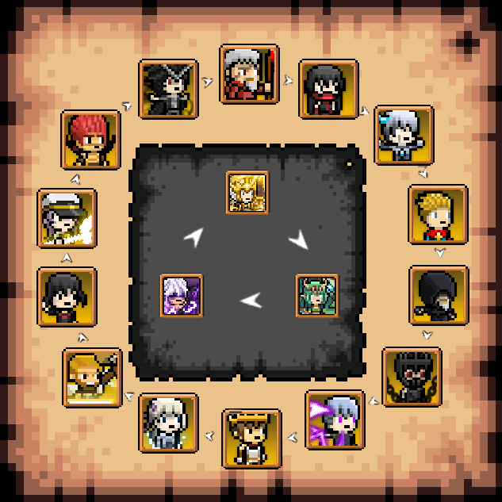
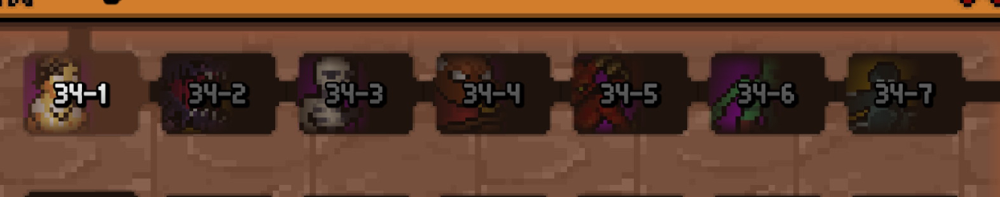

<!DOCTYPE html>
<html lang="en">
<head>
    <meta charset="UTF-8">
    <title>DBG Guide</title>
    <meta name="viewport" content="width=device-width, initial-scale=1">
    <meta name="description" content="Updated Days Bygone Guide  Updated by Gala, Evl (Furismug) and many more Hello, and welcome to the updated (as of v2. 5.0 ) version of the guide you all know and love, now with all the additional information and up-to-date with the current state of the game. This guide will include most of the old Mundus’ Handheld Guide to ">
    <link rel="stylesheet" href="theme.css">
    <style>
    
.normal_text {
font-family: Arial;
font-size: 12.0PT;
color: #000000;
line-height: 1.15;
direction: ltr;
}
h1 {
line-height: 1.5;
direction: ltr;
}
h2 {
font-size: 18.0PT;
font-weight: bold;
line-height: 1.5;
direction: ltr;
}
h3 {
font-size: 14.0PT;
font-weight: bold;
line-height: 1.5;
direction: ltr;
}
h4 {
font-size: 12.0PT;
color: #666666;
padding-top: 14.0PT;
padding-bottom: 4.0PT;
direction: ltr;
}
h5 {
font-size: 11.0PT;
color: #666666;
padding-top: 12.0PT;
padding-bottom: 4.0PT;
direction: ltr;
}
h6 {
font-size: 11.0PT;
color: #666666;
font-style: italic;
padding-top: 12.0PT;
padding-bottom: 4.0PT;
direction: ltr;
}
.title {
font-size: 26.0PT;
padding-bottom: 3.0PT;
direction: ltr;
}
.subtitle {
font-family: Arial;
font-size: 15.0PT;
color: #666666;
padding-bottom: 16.0PT;
direction: ltr;
}


    </style>
</head>
<body>
<header>
    <div class="hamburger-menu" onclick="toggleMenu()">
        <span></span>
        <span></span>
        <span></span>
    </div>
    <nav>
    <ul>
        <li><a href="index.html">Updated DBG Guide</a></li>
    </ul>
    </nav>
</header>
<div class="content"clear: both; overflow: auto; ">
<div style="clear: both;">&nbsp;</div><br><p class="normal_text" style='line-height: 1.5; direction: ltr; text-align: center; '><span style='font-size: 26.0PT; '>Updated Days Bygone Guide</span><span style='font-size: 26.0PT; '>
</span></p><p class="normal_text" style='line-height: 1.5; direction: ltr; text-align: center; '><span style='font-size: 16.0PT; '>Updated by Gala, Evl (Furismug) and many more
</span></p><p class="normal_text" style='line-height: 1.5; direction: ltr; '><span style='font-size: 12.0PT; '>Hello, and welcome to the updated (as of v2.</span><span style=''>5.0</span><span style='font-size: 12.0PT; '>) version of the guide you all know and love, now with all the additional information and up-to-date with the current state of the game. This guide will include most of the old </span><span style='font-size: 12.0PT; color: #1155cc; '><a href="https://bit.ly/DBG_GUIDE" style="font-size: 12.0PT; color: #1155cc; ">Mundus’ Handheld Guide to DBG</a></span><span style='font-size: 12.0PT; '> (basically copy pasted), with new mechanics and game modes which have been added since then.
</span></p><p class="normal_text" style='line-height: 1.5; direction: ltr; '><span style='font-size: 12.0PT; '>This will be a very, very long read, so please, feel free to read this as you progress through the game. Also, if you have any other questions, join our official </span><span style='font-size: 12.0PT; color: #1155cc; '><a href="https://discord.gg/B3zYzthpqm" style="font-size: 12.0PT; color: #1155cc; ">Discord server</a></span><span style='font-size: 12.0PT; '> where we are pretty active all the time and </span><span style=''>can answer any questions you may have</span><span style='font-size: 12.0PT; '>!
</span></p><h1 style='line-height: 1.5; direction: ltr; '><span style=''>
</span></h1><h1 style='line-height: 1.5; direction: ltr; '><span style='font-size: 20.0PT; '>A FEW FIRST REMARKS</span><span style=''> 
</span></h1><ul style="padding-left: 20.0px;"><li><span style='font-size: 12.0PT; '>The game is much more enjoyable to play if you have all three packs:
</span></li><li><span style='font-size: 12.0PT; '><strong>AFK Assist</strong></span><span style='font-size: 12.0PT; '>, the most expensive and impactful pack, it allows your Defender (you, the guy with the weapon) to attack and aim </span><span style=''>automatically</span><span style='font-size: 12.0PT; '>, killing portals without the need for you to keep your finger (or something else) on the screen, </span><span style=''>plus some other cool stuff</span><span style='font-size: 12.0PT; '>
</span></li><li><span style='font-size: 12.0PT; '><strong>Express Pack</strong></span><span style='font-size: 12.0PT; '>, the second in priority, pretty much just makes the game 2.5-3x faster overall, with the 2x Rewind speed in campa</span><span style=''>ign (even while pushing!)</span><span style='font-size: 12.0PT; '> and double portal skip.
</span></li><li><span style='font-size: 12.0PT; '><strong>Ad Pack</strong></span><span style='font-size: 12.0PT; '>, removes ads from the game while allowing you to use all the ad related bonuses instantly. This one is not as important as the others, but it lets you get 15 rubies for free every real life (RL) day, two revives per death on push and double crates on every boss without having to watch an ad every time, saving you some time, especially since a</span><span style=''>n</span><span style='font-size: 12.0PT; '> ad may not always be available for you.
</span></li><li><span style='font-size: 12.0PT; '>Most active players own all packs and therefore most of my IRL time estimates will be based on </span><span style=''>the assumption</span><span style='font-size: 12.0PT; '> you own all packs.
</span></li><li><span style='font-size: 12.0PT; '>In the same sense, most active players have the game running 24/7, or as close </span><span style=''>to it as possible</span><span style=''>, but with the idle update, with all packs it should be close or as similar to having the game running all day, so you don't have to ruin your device anymore!</span><span style='font-size: 12.0PT; '><strong>
</strong></span></li></ul><h1 style='line-height: 1.5; direction: ltr; '><span style='font-size: 20.0PT; '>PART 1: THE TUTORIAL
</span></h1><h2 style='line-height: 1.5; direction: ltr; '><span style='font-size: 18.0PT; '>Day 51: Your first rewind
</span></h2><p class="normal_text" style='line-height: 1.5; direction: ltr; '><span style='font-size: 12.0PT; '>Welcome to the game!</span><span style=''> </span><span style=''>For</span><span style=''> now, just keep playing days, spending your gold into the Damage and Critical damage stats, but don't bother spending crates or rubies. It's fine if you already did though, so don't worry. Y</span><span style='font-size: 12.0PT; '>ou will get through this pretty effortlessly within 30 minutes to an</span><span style='font-size: 12.0PT; '> hour of playtime.
</span></p><p class="normal_text" style='line-height: 1.5; direction: ltr; '><span style=''>You can try and open a few crates for fun, just to test out what weapons do and for collecting purposes, but remember to control yourself and save up your crates, as they are a limited resource.
</span></p><p class="normal_text" style='line-height: 1.5; direction: ltr; '><span style=''>
</span></p><h2 style='line-height: 1.5; direction: ltr; '><span style='font-size: 18.0PT; '>Day 51-</span><span style=''>1000</span><span style='font-size: 18.0PT; '>: Your very first grind
</span></h2><p class="normal_text" style='line-height: 1.5; direction: ltr; '><span style='font-size: 12.0PT; '>At day 51, you will unlock the core mechanic of the game: Rewinding. </span><span style=''>This day will be significantly harder than the previous ones, so it’s best to just rewind immediately. You can choose to</span><span style='font-size: 12.0PT; '> continue to play the game until you feel like you can’t push any further, </span><span style=''>which will net </span><span style='font-size: 12.0PT; '>you slight</span><span style=''>ly</span><span style='font-size: 12.0PT; '> more elixir </span><span style=''>for each </span><span style='font-size: 12.0PT; '>day that you have pushed. Use the Elixir you just gained from your Rewind to unlock Skills, some of which are capped and some </span><span style=''>uncapped</span><span style='font-size: 12.0PT; '> (</span><span style=''>capped skills </span><span style='font-size: 12.0PT; '>will show their respective max levels, and should be maxed out).
</span></p><p class="normal_text" style='line-height: 1.5; direction: ltr; '><span style=''>
</span></p><p class="normal_text" style='line-height: 1.5; direction: ltr; '><span style='font-size: 12.0PT; '>The skills you should be looking out for are Elixir Mastery (which is the main elixir income that you can level actively), Time Jump and Deja Vu (which are capped and should be maxed out asap).</span><span style=''> </span><span style='font-size: 12.0PT; '>Other than that, you should level any other skills that have multipliers (xdmg - being Untapped Power, or xCrit.dmg - being Beautiful Disaster, to name a few) to your damage, making you stronger and progressing more days.
</span></p><p class="normal_text" style='line-height: 1.5; direction: ltr; '><span style=''>
</span></p><p class="normal_text" style='line-height: 1.5; direction: ltr; '><span style='font-size: 12.0PT; '>A</span><span style=''>t the same time</span><span style='font-size: 12.0PT; '>,</span><span style='font-size: 12.0PT; '><em> avoid</em></span><span style='font-size: 12.0PT; '> upgrading Hidden Strength</span><span style=''> </span><span style='font-size: 12.0PT; '>and Arcane Arts</span><span style=''>. </span><span style='font-size: 12.0PT; '>Why? </span><span style='font-size: 12.0PT; '>HS' weakness is that its number values are always overshadowed by other sources of flat damage, namely Damage stat (th</span><span style=''>e one</span><span style='font-size: 12.0PT; '> you buy with gold) and weapons. Idle </span><span style=''>has been reworked recently, so upgrading Idleness & Dissipation is now a better choice than usual, but keep it at a lower ratio (most people keep it 10x lower than their regular damage skills) since it’s not too important of a skill this early on.
</span></p><p class="normal_text" style='line-height: 1.5; direction: ltr; '><span style=''>
</span></p><p class="normal_text" style='line-height: 1.5; direction: ltr; '><span style='font-size: 12.0PT; '>When leveling skills, it’s recommended to keep your EM at twice the value of your other skills, or 2:1 EM:Damage. This is meant to put you on a nice flow of leveling that’ll get you used to the grindy nature of the game. Eventually, you’ll make do with less EM, or get a couple skills at least up to the same level of it, but this will be explained further on. Remember to always discover skills first, while that’s a thing.
</span></p><p class="normal_text" style='line-height: 1.5; direction: ltr; '><span style='font-size: 12.0PT; '>
</span></p><p class="normal_text" style='line-height: 1.5; direction: ltr; '><span style='font-size: 12.0PT; '>Now that you have a basic grasp of the game, let’s get used to the Resources.
</span></p><p class="normal_text" style='line-height: 1.5; direction: ltr; '><span style=''>
</span></p><h3 style='line-height: 1.5; direction: ltr; '><span style=''>Weapons and Rubies
</span></h3><p class="normal_text" style='line-height: 1.5; direction: ltr; '><span style='font-size: 12.0PT; '>During all this, you don’t need to open any weapon crates or spend any rubies, the Training Sword (the weapon you have since Day 1) will do just fine until Day 300+ since you can upgrade your damage with gold.
</span></p><p class="normal_text" style='line-height: 1.5; direction: ltr; '><span style='font-size: 12.0PT; '>Legendary weapons actually have good numbers on them, but the amount of gold you can get will increase dramatically with every Rewind and every time you push to a higher max day, which can render that shiny weapon useless very quickly, meaning you wasted 50 crates (in a golden spin) for nothing. If you really want to, you can open some crates, 10 maximum, and grab whatever rare weapon you find. </span><span style='font-size: 12.0PT; '><em>Side note, if you like collecting things, don’t sell the Training Sword. It’s a one of a kind weapon, and can’t be obtained any other way.
</em></span></p><p class="normal_text" style='line-height: 1.5; direction: ltr; '><span style=''>If you do open some crates, look out for the Kunai, AK47, or any weapon in general that has piercing, but you should avoid any weapons with the “Compress” trait due to them being very slow. (Note: The epic weapon Skysaber actually does fairly well because of its increased area compared to the Glock for example, in addition to giving you quite a lot of damage)
</span></p><p class="normal_text" style='line-height: 1.5; direction: ltr; '><span style='font-size: 12.0PT; '>Don’t spend rubies on any resources, such as gold, elixir, weapons, crates, or tickets. The value on those </span><span style=''>are</span><span style='font-size: 12.0PT; '> pretty high and you’ll quickly get these resources for free when you need them.
</span></p><p class="normal_text" style='line-height: 1.5; direction: ltr; '><span style='font-size: 12.0PT; '>Spending rubies on rerolling discovered skills is also not useful, since you can quickly discover all 28 of them. </span><span style=''>Additionally, you will need to spend them on Elixir Walls and/or awakening rerolls (covered a bit later) very soon..</span><span style='font-size: 12.0PT; '>
</span></p><p class="normal_text" style='direction: ltr; '><span style=''>
</span></p><h3 style='direction: ltr; '><span style=''>Temple of Time
</span></h3><p class="normal_text" style='line-height: 1.5; direction: ltr; '><span style=''>	After a few rewinds, you’ll notice that your rewind button has changed. This is the entry to the Temple of Time. So, what is the Temple of Time (ToT for short)? ToT is sort of a flashback you have that appears every 5 rewinds you do in game (don’t try to find any meaning to it if you’re not too interested in the game’s lore). Every time you’ll appear at 1 health and 100 mana, with a random weapon, appearance, wall and spells equipped. You might have also noticed that you can’t attack at all here. How do you clear this stage then? It’s actually pretty simple. Every wave consists of a few colored spirits, which can be defeated by using spells corresponding to their element. How do I know their element? Each spirit is colored based on one of the 5 elements spells have (side note, don’t worry if you’re colorblind, these spirits will have particles around them that help you realize easier which element they correspond to):
</span></p><ul style="padding-left: 20.0px;"><li><span style=''>White Spirits: They correspond to the wind spells, so either Gust, Gale or Tornado will finish them off.
</span></li><li><span style=''>Light Blue Spirits: These correspond to the ice element, so Ice Shard, Glacial Prison and Blizzard will take care of them.
</span></li><li><span style=''>Yellow Spirits: These are the slow element spirits. They can be taken care of using either Genesis, Deuteronomy or Revelation.
</span></li><li><span style=''>Purple Spirits: They are the thunder spirits. Zap, Thunderbolt or Thunderstorm should do a quick job at disposing of them.
</span></li><li><span style=''>Red Spirits: Last but not least, these are the fire spirits. Fireball, Flamelance and Armageddon will be your spells of choice for these small guys.
</span></li></ul><p class="normal_text" style='line-height: 1.5; direction: ltr; '><span style=''>
</span></p><p class="normal_text" style='line-height: 1.5; direction: ltr; '><span style=''>	So, now that you know how to deal with these pesky foes, you can clear each stage. But, what are the rewards? Is this just a glorified macro check? Not at all! Every ToT stage that you clear will give you Time Stones to aid you and also, tickets! 
</span></p><p class="normal_text" style='line-height: 1.5; direction: ltr; '><span style=''>
</span></p><h3 style='line-height: 1.5; direction: ltr; '><span style=''>Tickets and Heroes
</span></h3><p class="normal_text" style='line-height: 1.5; direction: ltr; '><span style=''>You will get your first hero tickets while grinding Temple of Time, which you can and should only open 10 at a time for a guaranteed Epic. To start, use the New Age banner, at least until you get one copy of Mikhail (and optionally, one copy of Dash). Heroes for the most part will go in and out of usage very randomly during this stage of the game, and so you don’t have to worry too much about which heroes to use. Once you get both copies, you can consider to keep pulling on New Age for Luna, Elden or a few more Mikhail copies, or switch to Classic, as this banner has a lot of good legendary heroes too, being Cain, Dark Merlin (DM), Nero, Dewitt, Lilith and Lilibeth.</span><span style=''>
</span></p><p class="normal_text" style='line-height: 1.5; direction: ltr; '><span style='font-size: 12.0PT; '><em>Note: Cain can end up killing you by pulling the mobs closer, especially if he doesn’t have enough stars to kill them. Try him out, and make your own conclusions.
</em></span></p><p class="normal_text" style='line-height: 1.5; direction: ltr; '><span style='font-size: 12.0PT; '>Unlock all 6 hero slots as soon as possible with your rubies, </span><span style='font-size: 12.0PT; color: #1155cc; '><a href="https://imgur.com/a/Urfg5Tc" style="font-size: 12.0PT; color: #1155cc; ">but not the hero loadouts</a></span><span style='font-size: 12.0PT; '> (the numbers at the bottom).
</span></p><p class="normal_text" style='line-height: 1.5; direction: ltr; '><span style='font-size: 12.0PT; '>While heroes aren’t gonna do much you still might want to use the best of them right? Well, I would recommend using Mikhail (Mik) and Dash, once you can get them, but your main focus for damage will be Eleanor. She is a very fast hero that will be used for Rewinding, forever. Beyond that, Garp, Dewitt, Luna, DM, Esther, </span><span style=''>Hank (and his evolution Soulbringer Hank)</span><span style='font-size: 12.0PT; '>, and Max (</span><span style=''>once you get a few nodes on him)</span><span style='font-size: 12.0PT; '> will be good support heroes to focus your attention and resources on.
</span></p><p class="normal_text" style='line-height: 1.5; direction: ltr; '><span style='font-size: 12.0PT; '>
</span></p><h3 style='line-height: 1.5; direction: ltr; '><span style=''>Dungeon and Expedition
</span></h3><p class="normal_text" style='line-height: 1.5; direction: ltr; '><span style='font-size: 12.0PT; '>You can ignore Dungeon (for now), but try to play around with Expedition, gathering some bones (fossils) and unlocking further difficulties. You can use more Crowd Control heavy heroes (CC, such as freeze</span><span style=''>, </span><span style='font-size: 12.0PT; '>slow and knockback) to try and get a longer run, but </span><span style=''>when</span><span style='font-size: 12.0PT; '> farming use the highest difficulty where you can</span><span style='font-size: 12.0PT; '><strong> kill</strong></span><span style='font-size: 12.0PT; '> mobs for at least one minute</span><span style=''>.</span><span style='font-size: 12.0PT; '>.
</span></p><p class="normal_text" style='line-height: 1.5; direction: ltr; '><span style='font-size: 12.0PT; '>Once you can farm 200 bones in about an hour (or overnight</span><span style=''>/idle</span><span style='font-size: 12.0PT; '> with the AFK pack), go to the bone shop, scroll down and buy Caladbolg, a legendary weapon. This weapon is very cheap and </span><span style=''>should</span><span style='font-size: 12.0PT; '> be your only weapon until Day 1500 (or stretch all the way to day 1800), though you should buy a new one every time you pass an extra </span><span style=''>200-500 days</span><span style='font-size: 12.0PT; '>, the bigger the gap the better. </span><span style=''><em>“L</em></span><span style='font-size: 12.0PT; '><em>egends say Mundus always </em></span><span style=''><em>had three Caladbolgs. One at Day 300. One at 530. And one at 1.1k''.</em></span><span style='font-size: 12.0PT; '> This will allow you to save all your Weapon Crates, which are very valuable and limited.
</span></p><p class="normal_text" style='line-height: 1.5; direction: ltr; '><span style='font-size: 12.0PT; '>Your bones can also be used to buy runes, which are very important as the game progresses, though you should only buy the Greater versions, not regular or lesser runes. </span><span style=''>These runes, although you’re able to fuse them into greater runes, consume too much of your time and once you can buy a few Greater runes at a time, you should stick to those, which </span><span style='font-size: 12.0PT; '>will be a better investment of your bones and time.
</span></p><p class="normal_text" style='line-height: 1.5; direction: ltr; '><span style=''>
</span></p><h3 style='direction: ltr; '><span style=''>Hunt
</span></h3><p class="normal_text" style='line-height: 1.5; direction: ltr; '><span style=''>At Day 200 you also unlock a new gamemode, Hunt. Hunt allows you to kill bosses for gear pieces to equip on your defender, with random main stats and substats, and each boss dropping a different type of item. Each hunt tier is separated 1000 days in between each other, so Tier 1 (T1) Asmodeus unlocks at day 200, Tier 2 (T2) unlocks at 1200 and so on. There are only a couple things actually worth farming here at Day 200, and the rest is basically a waste of time.
</span></p><p class="normal_text" style='line-height: 1.5; direction: ltr; '><span style=''>You can farm for a Rare or higher helmet, but the stats and substats this early on are too weak to bother with, so you can just grab whatever you find and leave.
</span></p><p class="normal_text" style='line-height: 1.5; direction: ltr; '><span style=''>T1 and T2 Leviathan can drop armor with the +X% Critical Chance (cc%) main stat, as well as substats which help greatly with your critical chance, and a bit further into the game (Day 1000+) with a new stat called Devastation. Again, any Rare or higher maxed to 10*. One cc% substat is the same as the difference between Legendary and Rare.
</span></p><p class="normal_text" style='line-height: 1.5; direction: ltr; '><span style=''>Until Day 4k+ however, the values on all other items will be too low to bother with your time, so don't spend more than 30 minutes trying to farm something good, just get whatever rare (blue) gear you think looks pretty and move on.
</span></p><p class="normal_text" style='line-height: 1.5; direction: ltr; '><span style=''>Auto-discard is also a mechanic for AFK pack users. This will discard any specific rarity of gear while farming, so your inventory won’t fill with junk. You do this by pausing the game during Hunt and checking the Discard boxes. Always keep commons discarded, but don’t discard rares if you don’t have a good rare of that tier saved up. 
</span></p><p class="normal_text" style='line-height: 1.5; direction: ltr; '><span style='font-size: 12.0PT; '>
</span></p><h3 style='line-height: 1.5; direction: ltr; '><span style=''>Awakening - Year One
</span></h3><p class="normal_text" style='line-height: 1.5; direction: ltr; '><span style='font-size: 12.0PT; '>Awakenings are a new mechanic, which allow you to boost one of your skills each Year (365 Days) as long as you ha</span><span style=''>ve all the skills unlocked</span><span style='font-size: 12.0PT; '>. </span><span style=''>For</span><span style='font-size: 12.0PT; '> capped skills, the boost is an increase in the max level of the skill, or in the case of one of them (WS), it removes the cap completely. In the case of uncapped skills, these gain a x2 multiplier, and, save for EM, the ability to reach Milestones, explained further in </span><span style='font-size: 12.0PT; color: #1155cc; '><u>The 10 Millions Skills Grind.</u></span><span style='font-size: 12.0PT; '>
</span></p><p class="normal_text" style='line-height: 1.5; direction: ltr; '><span style='font-size: 12.0PT; '>Once you unlock your first awaken, you will be presented with 3 options out of all your unawakened skills. If you don’t want any of the options, you may reroll for 3 other skills (which might not be completely different form the ones you just got). In the case you can’t pay the 200 ruby fee, you may close the window and continue awakening later.
</span></p><p class="normal_text" style='line-height: 1.5; direction: ltr; '><span style='font-size: 12.0PT; '>For your first awaken, don't bother trying to reroll to find TJ or EM specifically, this can be </span><span style='font-size: 12.0PT; '><em>insanely </em></span><span style='font-size: 12.0PT; '>expensive and is not worth it. You want to grab TJ > EM > RA > BD > UP > Inspire > BS, but the order is just meant to explain which to pick if you see MORE THAN ONE of them. If you see any of them, choose it, if not, reroll. Don't be scared to reroll if all your options are bad, just don't miss a good choice for a "better" one.
</span></p><p class="normal_text" style='line-height: 1.5; direction: ltr; '><span style='font-size: 12.0PT; '>If you saved rubies properly playing so far, you can be more strict, and only pick the first 5 skills of the list for Year 1.
</span></p><p class="normal_text" style='line-height: 1.5; direction: ltr; '><span style='font-size: 12.0PT; '>
</span></p><h3 style='line-height: 1.5; direction: ltr; '><span style=''>Rubies (again)
</span></h3><p class="normal_text" style='line-height: 1.5; direction: ltr; '><span style='font-size: 12.0PT; '>Well, if I'm not wasting my rubies rerolling to find TJ, what do I do with them? The main answer is: you will want to keep 200-400 of them to reroll awakens when you see no good option, but the rest is gonna be used to buy Elixir Walls. These are the single biggest buff you can get in the game, as sources of extra elixir are rare, and will save you a lot of time and Rewinding. Start by buying the 25% ones, Abyss and Glacier, and then just keep buying the next ones as soon as you can until you have them all. </span><span style='font-size: 12.0PT; '><em>Yes, </em></span><span style='font-size: 12.0PT; '><em><strong>ALL E</strong></em></span><span style=''><em><strong>lixir Walls</strong></em></span><span style='font-size: 12.0PT; '><em>, unlocking up to </em></span><span style=''><em>D</em></span><span style='font-size: 12.0PT; '><em>ay 10k</em></span><span style='font-size: 12.0PT; '>. Since they're passive buffs, they will always be active no matter which one is equipped (that's just cosmetic) and their buffs will stack with each other. 
</span></p><p class="normal_text" style='line-height: 1.5; direction: ltr; '><span style='font-size: 12.0PT; '>Eventually they will keep their price but halve their bonus, but they're still great and should be bought nonetheless</span><span style=''>,</span><span style='font-size: 12.0PT; '> so you'll have things to spend rubies on for a while. 
</span></p><p class="normal_text" style='line-height: 1.5; direction: ltr; '><span style='font-size: 12.0PT; '>As well as that, make sure to unlock all friend slots you can, and then buy rune slots and gear slots as you feel like you need them. 
</span></p><p class="normal_text" style='line-height: 1.5; direction: ltr; '><span style='font-size: 12.0PT; '>
</span></p><h3 style='line-height: 1.5; direction: ltr; '><span style=''>Friends and Amity
</span></h3><p class="normal_text" style='line-height: 1.5; direction: ltr; '><span style='font-size: 12.0PT; '>	Your Friends list in the game is actually a source of currency, in the form of Amity, or hearts. These can be used to buy a limited amount of Rubies and Crates every week, which you should always buy, and also unlimited Tickets, which you shouldn’t. Last in the shop are the Hero Evolutions which will be discussed further in a future section.
</span></p><p class="normal_text" style='line-height: 1.5; direction: ltr; '><span style='font-size: 12.0PT; '>Make sure to always have your maximum number of friends to get all the hearts you can every day. These don’t have to be actual people you know, as you can just add people from the Search tab, and they don’t send you hearts, you get your hearts yourself. Keep in mind people that are inactive for over 30 days can’t be used to gain hearts, so replace them if that happens.
</span></p><p class="normal_text" style='line-height: 1.5; direction: ltr; '><span style='font-size: 12.0PT; '>
</span></p><p class="normal_text" style='line-height: 1.5; direction: ltr; '><span style='font-size: 12.0PT; '>
</span></p><h2 style='line-height: 1.5; direction: ltr; '><span style='font-size: 18.0PT; '>Day </span><span style=''>1000</span><span style='font-size: 18.0PT; '>- 2000: Early Game
</span></h2><p class="normal_text" style='line-height: 1.5; direction: ltr; '><span style='font-size: 12.0PT; '>After </span><span style=''>rewinding and farming expedition a good while you should</span><span style='font-size: 12.0PT; '> have enough damage to reach at least Day 900 in a single push, but you could go up to Day 1k or 1.1k depending on how much you leveled your damage skills</span><span style=''><em>. </em></span><span style='font-size: 12.0PT; '>While pushing, you'll get your second and maybe third awakened skill, and the priority will remain the same as before, while changing the list to TJ > EM > RA > BD > UP > HL> Inspire > BS > MS. This, along with DJV and BC (</span><span style=''>which would only be worth taking after day 3000, once you have HL awakened and Gold stat unlocked)</span><span style='font-size: 12.0PT; '> are referred to as the Essential 11. If you don’t see any of the first 9 skills at this stage of the game, use your precious saved up gems to reroll.
</span></p><p class="normal_text" style='line-height: 1.5; direction: ltr; '><span style='font-size: 12.0PT; '>
</span></p><h3 style='line-height: 1.5; direction: ltr; '><span style=''>Expedition and Nightmare
</span></h3><p class="normal_text" style='line-height: 1.5; direction: ltr; '><span style='font-size: 12.0PT; '>While doing your Rewind farming hopefully you experimented with some Expedition, and you might’ve unlocked Hell by beating 4 minutes on Hard, and you might even have unlocked </span><span style=''>Nightmare</span><span style='font-size: 12.0PT; '> (NM), by beating 4 minutes on Hell. If you haven’t yet, this is around the time you should do it. Try using heroes with more CC, like</span><span style=''> </span><span style='font-size: 12.0PT; '>Elaine, Garp, Dewitt</span><span style=''>,</span><span style='font-size: 12.0PT; '> </span><span style=''>alongside </span><span style='font-size: 12.0PT; '>Eleanor to do the killing. If you have to, use spells and even try reviving just so you can pass 4 minutes.
</span></p><p class="normal_text" style='line-height: 1.5; direction: ltr; '><span style=''>NM</span><span style='font-size: 12.0PT; '> works a little differently than the rest of Expedition, where you get 3 runs to do every RL day (resets at 12 pm GMT), and you want to squeeze them dry of as many bones as you can, as NM takes you to a certain point in Hell, with the timer starting further and further based on your max day, but you get a LOT more bones in a NM run compared to a Hell run. Your best team for NM for now will be Eleanor and DM, with as much CC as you can spare, and maybe Esther. This same team should be used for your Hell runs (which you should still do overnight). If you </span><span style=''>idle </span><span style='font-size: 12.0PT; '>overnight inste</span><span style=''>ad of staying in game, use the heroes with the highest percentage of idle damage, and the highest possible raw damage setup, since that’s how the game will give you the highest fossil/min rate.</span><span style='font-size: 12.0PT; '><em>
</em></span></p><p class="normal_text" style='line-height: 1.5; direction: ltr; '><span style='font-size: 12.0PT; '>Because the run starts further the more you push, make sure to always do your NM runs for the day before pushing, but with as much damage as you can. </span><span style='font-size: 12.0PT; '><em>Side note: Once I mention you should start opening crates, watch out for a Galatine. If you find one, keep it until you find another. It’s a surprise tool that will help us later.
</em></span></p><p class="normal_text" style='line-height: 1.5; direction: ltr; '><span style='font-size: 12.0PT; '>You may also have noticed the option to buy Quickstart for your Expedition runs. Ignore this for now, as its bonus will come into play much later and you have other priorities for your rubies.
</span></p><h3 style='line-height: 1.5; direction: ltr; '><span style=''>
</span></h3><h3 style='line-height: 1.5; direction: ltr; '><span style=''>Devastation - Defender and Crit Heroes
</span></h3><p class="normal_text" style='line-height: 1.5; direction: ltr; '><span style='font-size: 12.0PT; '>At Day 1k you'll unlock your next stat, called devastation (dev). Until it's maxed, you should spend </span><span style='font-size: 12.0PT; '><strong>all</strong></span><span style='font-size: 12.0PT; '> your gold into this stat, as it makes your crits crit again, adding a big multiplier to your damage.
</span></p><p class="normal_text" style='line-height: 1.5; direction: ltr; '><span style='font-size: 12.0PT; '>Everything that crits can dev, including your defender, your heroes, and spells that have crit damage on them. At first only your Defender will be able to dev often, as they attack really fast with 100% crit chance, which makes up for your low devastation chance. Eventually, as you get stars on your Eleanor, and get your stat and crit chance rune up, she'll start doing most of the dev damage. 
</span></p><p class="normal_text" style='line-height: 1.5; direction: ltr; '><span style='font-size: 12.0PT; '>I've mentioned Dash before, and if by chance you have a copy of him, you can try this strat and see if it works for you. Dash attacks very fast and can crit (therefore can dev) but he only crits Siege Mobs, the big scary guys, so you'll need Eleanor to clear regular mobs while Dash clears the back row, which Eleanor can have some trouble with depending on her Ascensions. This has personally worked well for me, but isn't widely agreed upon, so try it out for yourself and see if you like it. 
</span></p><p class="normal_text" style='line-height: 1.5; direction: ltr; '><span style='font-size: 12.0PT; '>
</span></p><h3 style='line-height: 1.5; direction: ltr; '><span style=''>Ascensions </span><span style='font-size: 12.0PT; '>
</span></h3><p class="normal_text" style='line-height: 1.5; direction: ltr; '><span style='font-size: 12.0PT; '>Ascensions, what are they? Ascensions or Stars, symbolized by * (1*, 4*, 10*) are upgrades that are available for spells, gears, and more importantly heroes. Once you get enough copies of a hero (5 for a legendary, 10 for an epic, 25 for a rare and 50 for a common) you can ascend them, adding a star to them and unlocking one passive point to spend on their tree. This ascension will give them a big boost of damage and lower their cooldown a bit, however you need to spend a currency called Catalyst, which will be explained later.
</span></p><p class="normal_text" style='line-height: 1.5; direction: ltr; '><span style='font-size: 12.0PT; '>
</span></p><h3 style='line-height: 1.5; direction: ltr; '><span style=''>Runes
</span></h3><p class="normal_text" style='line-height: 1.5; direction: ltr; '><span style='font-size: 12.0PT; '>This is a good point to talk more about runes: once you unlock Hell and </span><span style=''>NM</span><span style='font-size: 12.0PT; '> you'll be able to get bones with some level of efficiency, allowing you to buy more Greater Runes and upgrade them. You'll want to use a crit damage rune (red), a damage rune (purple), a hero damage rune (yellow), a crit chance rune (orange), and a health rune (green).
</span></p><p class="normal_text" style='line-height: 1.5; direction: ltr; '><span style='font-size: 12.0PT; '>You can ignore the </span><span style=''>HP</span><span style='font-size: 12.0PT; '> rune for the most part, but will want to level the others equally, focusing on crit damage and crit chance the most, at least until your crit chance is T6 (VI) - T8 (VIII). To level runes efficiently you buy a bunch of them, sell all but two types, which you'll fuse until those types go up a tier, once that happens, you switch to the next two types. Once your crit chance is leveled enough, you can always keep leveling your crit damage rune, while alternating between your hero damage and damage rune so that these last two stay at the same tier, and your crit damage is a tier higher at all times. Always sell mana, spell damage, and blank runes. Blank runes can be used as a rune of any color, as in, you can fuse a T3 blank with a T3 crit damage to get a T4 crit damage, and the same for any other type. This however is not dust efficient, and for the most part shouldn’t be done.
</span></p><p class="normal_text" style='line-height: 1.5; direction: ltr; '><span style=''>
</span></p><h3 style='line-height: 1.5; direction: ltr; '><span style=''>The Grind Cycle
</span></h3><p class="normal_text" style='line-height: 1.5; direction: ltr; '><span style='font-size: 12.0PT; '>Around this time you'll start to get into the flow of the game: Rewind, upgrade skills, spend gold (in dev until it's maxed, literally doesn’t matter afterwards, just spend them randomly for now), and push more when you have the damage to do it. This is gonna be pretty much the same for the whole game, with more and more Rewinds being necessary as you get further.</span><span style=''> You can always check one of the </span><span style='color: #1155cc; '><a href="https://docs.google.com/spreadsheets/d/1ywxGQw8yLPWrfTKK8W79Z8Na8gKuuYlnj368PNIfdKQ/edit#gid=0" style="color: #1155cc; ">Rewind Calculators</a></span><span style=''> (look for them in this master sheet made by the community) later on, which will have a plan for you as to which skills you should upgrade and how many days you’ll get from them. (Note, since before 2k the day scaling doesn’t work as for the rest of the game, the day gain might vary for you)
</span></p><p class="normal_text" style='line-height: 1.5; direction: ltr; '><span style='font-size: 12.0PT; '>
</span></p><h3 style='line-height: 1.5; direction: ltr; '><span style=''>Weapon Crates and Golden Spin
</span></h3><p class="normal_text" style='line-height: 1.5; direction: ltr; '><span style='font-size: 12.0PT; '>A</span><span style=''>t around</span><span style='font-size: 12.0PT; '> Day 1500&nbsp;&nbsp;you can stop buying Caladbolg, as it stops scaling well, and can open a Golden Spin. Whichever weapon you get, keep it and use it, and wait at least another ~300 or so days to get a new one (</span><span style='font-size: 12.0PT; '><em>Dragunov might be a particular</em></span><span style=''><em>ly bad one right now, so maybe open a second one</em></span><span style=''>)</span><span style='font-size: 12.0PT; '>. The further in-between the weapons are, the better. If by chance you found a Galatine, </span><span style=''>this is</span><span style='font-size: 12.0PT; '> stronger than other types for now and can be used for 500 days </span><span style='font-size: 12.0PT; '><em>at least</em></span><span style='font-size: 12.0PT; '>. You should pretty much only use the Golden Spin, since it has a very similar value to just opening crates, but with much less RNG (Randomness, chance) and it’s also a lot faster.
</span></p><p class="normal_text" style='line-height: 1.5; direction: ltr; '><span style='font-size: 12.0PT; '>
</span></p><h3 style='line-height: 1.5; direction: ltr; '><span style=''>Heroes and </span><span style=''>Hero Evolutions
</span></h3><p class="normal_text" style='line-height: 1.5; direction: ltr; '><span style='font-size: 12.0PT; '>Since there are so many heroes in the game, we now have a channel in our Discord server called </span><span style='font-size: 12.0PT; color: #1155cc; '><a href="https://discord.com/channels/570929677732937738/1069087238949982338" style="font-size: 12.0PT; color: #1155cc; ">#book-of-heroes</a></span><span style='font-size: 12.0PT; '> listing each one’s pros and cons, which path to take and which team to build/put them into, anything you can think of! Make sure to </span><span style='font-size: 12.0PT; color: #1155cc; '><a href="https://discord.gg/daysbygone" style="font-size: 12.0PT; color: #1155cc; ">join in</a></span><span style='font-size: 12.0PT; '> and go check it out.	</span><span style='font-size: 12.0PT; '>Hero Evolution is a mechanic in the game which changes weaker heroes into stronger versions of themselves. Each of them cost 300 hearts (or Amity points, which we told you earlier to save them up), and will unlock a brand new skill tree, a free tree reset for them as so</span><span style=''>on as you evolve them (keep in mind that purchasing another node while having the tree reset available will remove it, and you will have to pay rubies, so make sure to use it before making any other upgrades to the skill tree!)</span><span style='font-size: 12.0PT; '>, and </span><span style=''>makes </span><span style='font-size: 12.0PT; '>them viable even for the very late game! Once you purchase it with hearts, a new quest will appear, and once you complete it, that hero will be </span><span style=''>e</span><span style='font-size: 12.0PT; '>volved. The optimal way to complete each quest </span><span style=''>is </span><span style='font-size: 12.0PT; '>also in the </span><span style='font-size: 12.0PT; color: #1155cc; '><a href="https://discord.com/channels/570929677732937738/1069087238949982338" style="font-size: 12.0PT; color: #1155cc; ">#book-of-heroes</a></span><span style='font-size: 12.0PT; '> and </span><span style='font-size: 12.0PT; color: #1155cc; '><a href="https://discord.com/channels/570929677732937738/1199525969942302740" style="font-size: 12.0PT; color: #1155cc; ">#hero-evolutions</a></span><span style='font-size: 12.0PT; '>, so it won’t be listed here since there will be more and more in the future, and the Discord server is where most of the resources are (usually) updated the fastest.
</span></p><p class="normal_text" style='line-height: 1.5; direction: ltr; '><span style='font-size: 12.0PT; '>The current order to Evolve heroes </span><span style=''>is </span><span style='font-size: 12.0PT; '>Paul > Hank > Fred = Cherry (if you ar</span><span style=''>e approaching day 3k, evolve Cherry first for more gold income) > Greg </span><span style='font-size: 12.0PT; '>> Arthur > Job.</span><span style=''>
</span></p><p class="normal_text" style='line-height: 1.5; direction: ltr; '><span style=''>
</span></p><p class="normal_text" style='line-height: 1.5; direction: ltr; '><span style=''>
</span></p><h2 style='line-height: 1.5; direction: ltr; '><span style='font-size: 18.0PT; '>Day 2000 - 3000: Your first new area, and a taste of the grind</span><span style='font-size: 12.0PT; '>
</span></h2><p class="normal_text" style='line-height: 1.5; direction: ltr; '><span style='font-size: 12.0PT; '>As you progress into Day 2k, your heroes are gonna become more important, and Eleanor will lose her spot as top </span><span style=''>DPS option</span><span style='font-size: 12.0PT; '> v</span><span style=''>ersus</span><span style='font-size: 12.0PT; '> better options like 10* Cain, 10* Saul and/or 10* Nero</span><span style='font-size: 12.0PT; '><em>.</em></span><span style='font-size: 12.0PT; '> Once your Eleanor herself is 10*, you can stop opening tickets altogether and save for a good </span><span style=''>rate-up</span><span style='font-size: 12.0PT; '>. As you progress, check where in the hero </span><span style=''>rate-up</span><span style='font-size: 12.0PT; '> order you are, and see when the next important rate-up is and prepare for it with some saved up tickets. You need 2050 tickets on average to 0-10* a legendary hero on </span><span style=''>rate-up</span><span style='font-size: 12.0PT; '>, and that can be challenging before 2k but very reasonable afterwards. 
</span></p><p class="normal_text" style='line-height: 1.5; direction: ltr; '><span style='font-size: 12.0PT; '>Ones to look out for are Mikhail, Dewitt, DM, Cain, Luna and optionally Clarissa (since now we have Fred Evolution giving heals), stopping at 10*, and Nero, Lilith, Roland, Elden and KA to use as much as you can afford, assuming you can reach their next star. There is a </span><span style='font-size: 12.0PT; color: #1155cc; '><a href="https://docs.google.com/spreadsheets/d/1PXkEQIUGYAmSkZvI6fTCGSAeIUiUqUhp-zGoCbOsGG8/edit?usp=sharing" style="font-size: 12.0PT; color: #1155cc; ">Hero Ticket calculator</a></span><span style='font-size: 12.0PT; '> you can use to plan in the Discord server.
</span></p><p class="normal_text" style='line-height: 1.5; direction: ltr; '><span style='font-size: 12.0PT; '>If you don't manage to find a better carry, Eleanor is still very strong until around Day 4k, and as a last resort you can invest some of your catalysts into 10* Greg, which will be a small boost on your pushing power over Eleanor.
</span></p><p class="normal_text" style='line-height: 1.5; direction: ltr; '><span style='font-size: 12.0PT; '>Here’s the current Hero rate-up rotation </span><span style=''>made by Tyrael (the heroes in the middle will be covered in a later section of the guide):</span><span style='font-size: 12.0PT; '>
</span></p><p class="normal_text" style='line-height: 1.5; direction: ltr; '><span style='font-size: 12.0PT; '>
</span></p><p class="normal_text" style='line-height: 1.5; direction: ltr; '><span style='font-size: 12.0PT; '>
</span></p><h3 style='line-height: 1.5; direction: ltr; '><span style=''>Main DPS Heroes</span><span style='font-size: 12.0PT; '>
</span></h3><p class="normal_text" style='line-height: 1.5; direction: ltr; '><span style='font-size: 12.0PT; '>	While playing the game, the hero you’ll probably invest more tickets into is your Main DPS. This spot is for heroes that can deal a high amount of Critical Damage, with a big Ascension multiplier and a decent Attack Speed.
</span></p><p class="normal_text" style='line-height: 1.5; direction: ltr; '><span style='font-size: 12.0PT; '>	When the very first Guide was written, the meta for DPS heroes was to only use Cain or Nero, with Nero being much, much superior than Cain.
</span></p><p class="normal_text" style='line-height: 1.5; direction: ltr; '><span style='font-size: 12.0PT; '>	Since then, King Arthur and Lilith received several buffs, with Cain being heavily overshadowed, and as such I wouldn’t recommend upgrading him past 10* anymore </span><span style='font-size: 12.0PT; '><em>(still very good at 10*</em></span><span style=''><em> though, but as a support)</em></span><span style='font-size: 12.0PT; '>, as once you reach Day 5k or so, you’ll want to be using a 10* or higher DPS.
</span></p><p class="normal_text" style='line-height: 1.5; direction: ltr; '><span style='font-size: 12.0PT; '>	Each of these work quite differently, with all of them having particular requirements to be used to their full potential, but are very close in power level, with Nero having a slight edge with his %max </span><span style=''>HP</span><span style='font-size: 12.0PT; '> damage.
</span></p><p class="normal_text" style='line-height: 1.5; direction: ltr; '><span style='font-size: 12.0PT; '>	To understand which you would use is quite complicated and much is left to personal taste, so either choose at random, or whatever </span><span style=''>rate-up</span><span style='font-size: 12.0PT; '> is more convenient, or upgrade all three to 10* so you can test before heavily investing.
</span></p><p class="normal_text" style='line-height: 1.5; direction: ltr; '><span style='font-size: 12.0PT; '>	Lilith and KA, however, are much more functional after you unlock the Day 5k mechanic, so keep that in mind.
</span></p><p class="normal_text" style='line-height: 1.5; direction: ltr; '><span style='font-size: 12.0PT; '>
</span></p><h3 style='line-height: 1.5; direction: ltr; '><span style=''>Catalysts and Dungeon
</span></h3><p class="normal_text" style='line-height: 1.5; direction: ltr; '><span style='font-size: 12.0PT; '>Talking about Catalysts, we have the Dungeon issue. Dungeon is a mode that drops keys which you use to buy Catalysts (you should pretty much never spend keys in gold, and never more than 5000 keys in crates or tickets, keys are more valuable than that). Each catalyst costs 10000 keys, and so they are very expensive and time consuming to farm early, especially because Dungeon drop rates scale linearly. At Day 2k you'll make half of what you would make at Day 4k, and four times less than at 8k, for instance. Does this mean you should never be farm keys? No, you'll need catalysts to ascend your main heroes, and even though you'll get some from the daily log-ins, it takes a while and it's not a huge amount. So, what to do? 
</span></p><ul style="padding-left: 20.0px;"><li><span style=''>You</span><span style='font-size: 12.0PT; '> can stop doing Hell Expedition for a couple days and do Dungeon if you're ready to ascend an important hero to 4, 7 or 10*. These numbers specifically because that's when you get the big nodes on a heroes skill tree. 
</span></li><li><span style='font-size: 12.0PT; '>To farm, </span><span style=''>equip a team which you can easily clear a floor relatively close to your max day, and enable the “Auto Dim Screen” option all the way, so that it stops rendering the battlefield and avoiding any crashes and slowdowns without losing on any of the rewards! If you’re trying out the Idle option, use the highest raw damage composition (including your best weapon), and exit to the main menu (click on the blue </span><span style=''><strong>cloud save </strong></span><span style=''>button, </span><span style=''><strong>NOT</strong></span><span style=''> the</span><span style=''><strong> </strong></span><span style=''>return button) and you can grind overnight without risking the integrity of your phone.</span><span style='font-size: 12.0PT; '>
</span></li><li><span style='font-size: 12.0PT; '>Make sure you double your gains BEFORE you join Dungeon by watching an ad </span><span style=''>(Note: This does not matter if you are simply going to idle, as the keys you’ll get are fixed)</span><span style='font-size: 12.0PT; '>, or just clicking on the button if you have the Ad Pack (Premium Supporter). If you wait to do it after you're ready to end your run, it might happen that you won't find an ad, and you'll lose either the possibility to double your gains or even your entire run. 
</span></li></ul><p class="normal_text" style='line-height: 1.5; direction: ltr; '><span style='font-size: 12.0PT; '>
</span></p><h3 style='line-height: 1.5; direction: ltr; '><br><span style=''>Heroes and Teams
</span></h3><p class="normal_text" style='line-height: 1.5; direction: ltr; '><span style='font-size: 12.0PT; '>With these heroes recommended, you can start to think of how to build your pushing team:
</span></p><ul style="padding-left: 20.0px;"><li><span style='font-size: 12.0PT; '>You want one DPS hero, such as Eleanor, </span><span style=''>Elden</span><span style='font-size: 12.0PT; '>, Cain, Saul, Lilith, KA, Roland and Nero. Use whichever one you have more stars on. There’s not much point in using more than one DPS hero.
</span></li><li><span style='font-size: 12.0PT; '>One slow hero, with Mikhail being pretty much the best option always, even at lvl 1 0*. If you don’t have him, you can use 10* Tristan or Clarissa, Tristan being pretty pointless, just get a Mik with a few tickets, and Clarissa being good, but not really a full replacement.
</span></li><li><span style='font-size: 12.0PT; '>One or two freeze heroes, usually just 10* Max and any level Dewitt. 10* Gwen also works but isn’t comparable to the top 2. Luna with her top path is better than Dewitt, but has to be played alone. Don’t use before 10*.
</span></li><li><span style='font-size: 12.0PT; '>Extra CC, in Garp and Elaine specifically. Elaine pretty much only helps against Warmongers, the green guys that jump on your wall, and Garp only helps against Siege Mobs.
</span></li><li><span style='font-size: 12.0PT; '>Heroes that deal % of enemy </span><span style=''>HP</span><span style='font-size: 12.0PT; '>, mostly</span><span style=''> Elden</span><span style='font-size: 12.0PT; '>, Dash and also Saul. These are particularly good versus bosses, but they can’t carry your team alone, as mobs immune to max HP damage will still survive.
</span></li></ul><p class="normal_text" style='line-height: 1.5; direction: ltr; '><span style='font-size: 12.0PT; '>
</span></p><p class="normal_text" style='line-height: 1.5; direction: ltr; '><span style='font-size: 12.0PT; '>Use the pieces as you see fit, try them out, just make sure to have at least one DPS hero, that’s the only requirement.
</span></p><p class="normal_text" style='line-height: 1.5; direction: ltr; '><span style='font-size: 12.0PT; '>For now, this same team can be applied to doing Hell Expedition and NM: One DPS hero, some CC, some </span><span style=''>%HP</span><span style='font-size: 12.0PT; '>. For Rewinding, make sure to always equip Eleanor</span><span style='font-size: 12.0PT; '><em> </em></span><span style='font-size: 12.0PT; '>(in addition to other heroes of course), even if you have a better dps hero. She attacks VERY fast and that speeds up your Rewinds dramatically. Cherry Blossom (not to be confused with regular Cherry) should also be used for Rewinding f</span><span style=''>orever from the moment you get her</span><span style='font-size: 12.0PT; '>.
</span></p><p class="normal_text" style='line-height: 1.5; direction: ltr; '><span style='font-size: 12.0PT; '>
</span></p><h3 style='line-height: 1.5; direction: ltr; '><span style=''>The </span><span style=''>Fates and The Unkillable Demon King
</span></h3><p class="normal_text" style='line-height: 1.5; direction: ltr; '><span style=''>	On Day</span><span style='font-size: 12.0PT; '> 1750, you unlocked the World Map, but there </span><span style=''>wa</span><span style='font-size: 12.0PT; '>s not</span><span style=''> </span><span style='font-size: 12.0PT; '>much you could do </span><span style=''>aside</span><span style='font-size: 12.0PT; '> </span><span style=''>from looking</span><span style='font-size: 12.0PT; '> at it. </span><span style=''>On day 2000,</span><span style='font-size: 12.0PT; '> you will be able to access the first new part, called The Fates. This area in general will give a </span><span style=''>quite a decent</span><span style='font-size: 12.0PT; '> buff to your elixir income, as well as a </span><span style='font-size: 12.0PT; '><em>very</em></span><span style='font-size: 12.0PT; '> small buff to your damage.
</span></p><p class="normal_text" style='line-height: 1.5; direction: ltr; '><span style='font-size: 12.0PT; '>	The main Resource being used here </span><span style=''>is </span><span style='font-size: 12.0PT; '>called Offerings, which you can get by achieving certain milestones while doing Expeditions and interacting with the 4 NPCs gathering around the Eternity (the white portal in the middle). Each one represents a difficulty of Expedition mode, and each one has their own Quest. For Easy mode, you get 1 Offering per 2 hours of Expedition (so at 2:00:00, 4:00:00, etc.); Normal mode every 1 hour; Hard every 30 minutes and Hell every 15 minutes.
</span></p><p class="normal_text" style='line-height: 1.5; direction: ltr; '><span style='font-size: 12.0PT; '>You can offer these Offerings to the portal, each one giving you a buff in this order:
</span></p><ul style="padding-left: 20.0px;"><li><span style='font-size: 12.0PT; '><strong>Realized Strength:</strong></span><span style='font-size: 12.0PT; '> gain x1.</span><span style=''>4</span><span style='font-size: 12.0PT; '> All damage at a certain level of Hidden Strength (giving you a reason to level HS again, a</span><span style=''>nd also awaken it after you get all the essentials, since it gives you a 2x boost to this node</span><span style='font-size: 12.0PT; '>)
</span></li><li><span style='font-size: 12.0PT; '><strong>Disastrous Strength:</strong></span><span style='font-size: 12.0PT; '> gain x1.</span><span style=''>4</span><span style='font-size: 12.0PT; '> All damage at a certain level of Explosive Strength (same as Realized S</span><span style=''>trength</span><span style='font-size: 12.0PT; '> but with ES)
</span></li><li><span style='font-size: 12.0PT; '><strong>Beacon of Haste:</strong></span><span style='font-size: 12.0PT; '> +20% Expedition speed from </span><span style='font-size: 12.0PT; '><em>the very start </em></span><span style='font-size: 12.0PT; '>(00:00), which decays as you reach your highest time
</span></li><li><span style='font-size: 12.0PT; '><strong>Realized and Disastrous Strength</strong></span><span style='font-size: 12.0PT; '> (again)
</span></li><li><span style=''><strong>Prize of War: </strong></span><span style=''>Mobs drop x1.06 fossils in all </span><span style=''><u>Non-Nightmare</u></span><span style=''> modes. (This helps even more if you’re behind on runes, and is a nice boost overall to your fossil gain)</span><span style='font-size: 12.0PT; '>
</span></li></ul><p class="normal_text" style='line-height: 1.5; direction: ltr; '><span style='font-size: 12.0PT; '>		On top of these, for every 3 Offerings you will gain +1 level of Keystone, which is a multiplier of elixir for a certain amount of rewinds, depending on which one you choose. You can access the Keystone menu by interacting with </span><span style=''>the</span><span style='font-size: 12.0PT; '> NPC at the lower right corner of Fates. For now, there are 3 Keystone:
</span></p><ul style="padding-left: 20.0px;"><li><span style='font-size: 12.0PT; '><strong>Stone of Charity: </strong></span><span style='font-size: 12.0PT; '>extra elixir on first max day rewind of the day (choose this if you only rewind once a day)
</span></li><li><span style='font-size: 12.0PT; '><strong>Stone of Faith: </strong></span><span style='font-size: 12.0PT; '>extra elixir for max day rewind 2-4 of the day (choose if you rewind <5 times per day)
</span></li><li><span style='font-size: 12.0PT; '><strong>Stone of Hope: </strong></span><span style='font-size: 12.0PT; '>extra elixir for the 5th max day rewind of the day (choose if you rewind >= 5 times)
</span></li></ul><p class="normal_text" style='line-height: 1.5; direction: ltr; '><span style='font-size: 12.0PT; '>So, how often should I grind Fates? Well, f</span><span style='font-size: 12.0PT; '>or every damage node you get, you only gain x1.</span><span style=''>4</span><span style='font-size: 12.0PT; '> of damage. For instance if you have 6 damage nodes, it will give you x1.</span><span style=''>4</span><span style='font-size: 12.0PT; '>^6, or roug</span><span style=''>hly </span><span style='font-size: 12.0PT; '>x</span><span style=''>7.5</span><span style='font-size: 12.0PT; '> damage, giving </span><span style=''>you around 32 </span><span style='font-size: 12.0PT; '>days (the damage formula of the game is x2 damage = 11 days, will be explained in another section). Therefore, I would</span><span style=''> </span><span style='font-size: 12.0PT; '>recommend catching up on </span><span style=''>Fates once when you unlock it, a nice long run of each difficulty, and then only redo at around day 4k when you get quickstart. After that, you can redo them every 1-2k days, or even later (the longer you wait the longer it’s gonna take to catch up)</span><span style='font-size: 12.0PT; '> as the buff you gain whether from damage or elixir is very minimal compared to what you gain by rewinding.
</span></p><p class="normal_text" style='line-height: 1.5; direction: ltr; '><span style='font-size: 12.0PT; '>Another thing you gain access to in Fates is the World Boss - Vermilion. Every week, you will have 3 chances at fighting him, rewarding you with a few rewinds worth of elixir and tickets every run, and if those runs aren’t used will be lost on the next weekly reset. Vermilion does </span><span style=''>NOT</span><span style='font-size: 12.0PT; '> have a health bar, and does not take </span><span style=''>%HP</span><span style='font-size: 12.0PT; '> damage (red or purple, meaning max or current </span><span style=''>%HP</span><span style='font-size: 12.0PT; '> respectively). The goal is to deal as much damage as possible to him within 90 seconds.
</span></p><p class="normal_text" style='line-height: 1.5; direction: ltr; '><span style='font-size: 12.0PT; '>When you choose to do those runs won’t matter, as the reward scaling of Vermilion isn’t noticeable with how much damage you gain in one week, meaning you can just opt in to fight him whenever you want. </span><span style='font-size: 12.0PT; '><em>Mundus always said: do the</em></span><span style=''><em>m on Monday. </em></span><span style='font-size: 12.0PT; '>After the 3 weekly runs you will also be able to do practice runs, which will not give you any rewards but let you prepare and test things out.</span><br><span style='font-size: 12.0PT; '>	I highly suggest you try out what feels best for you, as this is a really fun game mode. However, if you are struggling to survive the boss fight, here are some tips for you:
</span></p><ul style="padding-left: 20.0px;"><li><span style='font-size: 12.0PT; '>The boss himself cannot kill you, as he only does current</span><span style=''>% HP</span><span style='font-size: 12.0PT; '> damage. The Ghouls that he spawns however, can, and they only take damage from max </span><span style=''>%HP</span><span style='font-size: 12.0PT; '> attacks.
</span></li><li><span style='font-size: 12.0PT; '>The Ghouls are Siege mobs (like the big ones in Campaign)
</span></li><li><span style='font-size: 12.0PT; '>When Verm does his “channeling” (his hand holding out with a pentagram), the Ghouls will be spawned continuously and will not die. However he can be interrupted with current </span><span style=''>%HP</span><span style='font-size: 12.0PT; '> attacks (from any source, being spells or heroes)
</span></li><li><span style='font-size: 12.0PT; '>Try to bring as many </span><span style=''>support</span><span style='font-size: 12.0PT; '> heroes for the fight as possible, since you want to deal more damage to him for more rewards. For now, if you don’t have any, just bring </span><span style=''>%HP</span><span style='font-size: 12.0PT; '> Heroes (Esther and Merlin/DM) and spells (</span><span style=''><strong>T</strong></span><span style='font-size: 12.0PT; '><strong>1 lightning and </strong></span><span style=''><strong>T</strong></span><span style='font-size: 12.0PT; '><strong>3 fire are must use</strong></span><span style='font-size: 12.0PT; '>) to deal with him in the fight, and </span><span style=''>some marking heroes like Arthur (Rare hero, not King Arthur), Cain (if you can survive with him in your team) and Siegfried (Fred evo) if you have him</span><span style='font-size: 12.0PT; '>.</span><span style=''>
</span></li></ul><h3 style='direction: ltr; '><span style=''>	Totems
</span></h3><p class="normal_text" style='line-height: 1.5; direction: ltr; '><span style=''>	This might be a good moment to talk about Totems. These are some Quality of Life (QoL) upgrades that unlock as soon as you reach The Fates. Although most of them are generally not recommended (Some of them either save too little time to be justifiable to buy over something else like more Elixir walls, or are very expensive for you right now) and should be ignored unless you buy Rubies with real life money, there’s one good Totem that should be considered a </span><span style=''><strong>must buy</strong></span><span style=''>. And this Totem is called the Totem of Retention. What this essentially does is work exactly like another Deja Vu. What does this mean? It means that once fully upgraded, you’ll retain an extra 25% of your stats, so once you Awaken Deja Vu and have this Totem fully upgraded, you’ll retain 100% of your stats. This sounds amazing, right? It’s because it is. My recommendation is to save up rubies for this totem, and buy it once you have bought all the 500 Ruby +10% Elixir walls, or if you have Deja Vu awakened, as soon as you can, since not losing your stats, other than having an easier time when rewinding, also means that you’ll have more damage when pushing again.
</span></p><h3 style='direction: ltr; '><span style=''>	Artifacts
</span></h3><p class="normal_text" style='line-height: 1.5; direction: ltr; '><span style=''>	Artifacts are unlocked at day 2500 when you have ascended each legendary hero to at least 1 star. There are 14 of them each providing a unique effect which is permanently applied to the corresponding legendary hero. They start off costing 44 of a random catalyst and then the price doubles every purchase up to a total of 704, the type of catalyst you need is randomized each time along with which artifact you will receive. My recommendation is that you get the first 4 or 5 artifacts, depending on your catalyst (keys) income and how many you need for your heroes, and forget about them for a good while. The reason behind this is that the cost ramps up very quickly, which means that you might find yourself without any catalysts to ascend the rest of your heroes, and you can play perfectly without them. Some artifacts will always be better than others depending at your stage, and they will make your heroes much stronger, but some of the very good early ones are: 
</span></p><ul style="padding-left: 20.0px;"><li><span style=''>Dewitt’s Fairfrozen: Gives him +900% crit damage, meaning that he can be a pretty good DPS hero at 10* (until you get more tickets for a better DPS hero).
</span></li><li><span style=''>Clarissa’s Eleventh Bell: Her Stage 3 attack will now heal your base for +10% of your </span><span style=''><strong>maximum</strong></span><span style=''> health and an additional 1000 health. This amount of heal is usually more than your total HP until quite a few thousand days ahead, and it enables her being a healer practically as soon as you get your hands onto this artifact, instead of the regular 10* requirement.
</span></li></ul><p class="normal_text" style='line-height: 1.5; direction: ltr; '><span style=''>	Keep in mind that these are just examples of strong artifacts, and there are more of them than just those two. I strongly recommend you play around with them and try out whichever ones you get, experimenting with other heroes too in the process.
</span></p><p class="normal_text" style='line-height: 1.5; direction: ltr; '><span style=''>
</span></p><h3 style='line-height: 1.5; direction: ltr; '><span style=''>The 4 Million Skills Grind</span><span style='font-size: 12.0PT; '>
</span></h3><p class="normal_text" style='line-height: 1.5; direction: ltr; '><span style='font-size: 12.0PT; '>So what do you do at </span><span style=''>at now that you’ve messed around with Fates and finally want to get to Day 3000 ane enjoy the sweet Gold Meta</span><span style='font-size: 12.0PT; '>? This preparation is composed of Rewinding to get </span><span style=''>4 </span><span style='font-size: 12.0PT; '>million level (</span><span style=''>4M</span><span style='font-size: 12.0PT; '>) awakened skills, or 10 million</span><span style=''> (</span><span style='font-size: 12.0PT; '>10M</span><span style=''>) </span><span style='font-size: 12.0PT; '>if your runes are underlevelled. The reason for this is that uncapped awakened skills have a bonus called Milestones. When you awaken a skill, it gains a x2 multiplier to its value, but then another x2 multiplier every time you hit a level that’s a power of 10, starting at level 10k. So, at level 9999, the skill has a x2 multiplier, a x4 once you hit 10k, a x8 once you hit 100k, and so on. </span><span style='font-size: 12.0PT; '><u><em>Side note: EM doesn’t have milestones, and MS/BS have x3 milestone multipliers. 
</em></u></span></p><p class="normal_text" style='line-height: 1.5; direction: ltr; '><span style='font-size: 12.0PT; '>You want to start with EM, and then do your Awakened skills, in the following order: BD > UP > HL > Inspire > MS > BS. If you do get </span><span style=''>ES awakened </span><span style='font-size: 12.0PT; '>during this and your runes are fa</span><span style=''>irly levelled (IX/X tier runes)</span><span style='font-size: 12.0PT; '>, you won't need to get all of these to 10M, especially if any of them aren't awakened. After you get a few of them, you can also move to 2774, as that's also a very good spot and will give you more elixir. If you don't get </span><span style=''>ES awakened </span><span style='font-size: 12.0PT; '>at any point, </span><span style=''>level it up </span><span style='font-size: 12.0PT; '>t</span><span style=''>o </span><span style='font-size: 12.0PT; '>10M, and you probably WILL need all the awakened skills at 10M to reach Day 3k.
</span></p><p class="normal_text" style='line-height: 1.5; direction: ltr; '><span style='font-size: 12.0PT; '>
</span></p><h3 style='line-height: 1.5; direction: ltr; '><span style=''>Awakenings</span><span style='font-size: 12.0PT; '>
</span></h3><p class="normal_text" style='line-height: 1.5; direction: ltr; '><span style='font-size: 12.0PT; '>During all of this progressing you will have awakened up to 7 skills, and you'll be running out of good options. However, at Day 3k you'll unlock the gold stat, which will be explained later, but to prepare for it you want to make SURE you awaken HL by year 7 (day 2555), and as a last resort, at year 8 (day 2920), just before reaching Day 3000. If you have it awakened before year 7, you can also pick both Deja Vu (DJV) and Bargaining Chip (BC) as good awakenings from now on. They won't give you any damage until 3k, but will be very strong then. 
</span></p><p class="normal_text" style='line-height: 1.5; direction: ltr; '><span style='font-size: 12.0PT; '>
</span></p><h3 style='line-height: 1.5; direction: ltr; '><span style=''>The Final Push to 3k</span><span style='font-size: 12.0PT; '>
</span></h3><p class="normal_text" style='line-height: 1.5; direction: ltr; '><span style='font-size: 12.0PT; '>All of this preparation will be quite hard, you'll have to do a lot of Rewinding and/or AFKing, and this will be a bit of a test to see if this game really is for you, as it's just a taste of how grindy the game can become. If you're reading up to this point, you're probably invested enough into the game, so I just hope you enjoyed your way until now. 
</span></p><p class="normal_text" style='line-height: 1.5; direction: ltr; '><span style='font-size: 12.0PT; '>Once you have everything prepared, you can push to Day 3000, getting one more Awakenings at 2.9k. The final bosses at 2970, 2985 and 2995 can be quite tough, but Saul (</span><span style=''>Paul evo)</span><span style='font-size: 12.0PT; '> is a godsen</span><span style=''>t</span><span style='font-size: 12.0PT; '> and he can help you breeze through any Campaign bosses in your way.
</span></p><p class="normal_text" style='line-height: 1.5; direction: ltr; '><span style='font-size: 12.0PT; '>You can see what type of damage a hero dealt based on the </span><span style='font-size: 12.0PT; color: #1155cc; '><a href="https://imgur.com/jMvUFfd" style="font-size: 12.0PT; color: #1155cc; ">bars on the side of the damage breakdown</a></span><span style='font-size: 12.0PT; '>: Red stands for %max </span><span style=''>HP</span><span style='font-size: 12.0PT; '>, and it’s usually fire or darkness damage; Purple stands for %current </span><span style=''>HP</span><span style='font-size: 12.0PT; '>, lightning damage; Blue is good old crit damage. </span><span style=''>When pushing, the only damage that truly matters is the blue damage, since purple and red won’t actually give you an idea of where you can push, and the only way to know it is with blue damage.</span><span style='font-size: 12.0PT; '>
</span></p><p class="normal_text" style='line-height: 1.5; direction: ltr; '><span style='font-size: 12.0PT; '>
</span></p><p class="normal_text" style='line-height: 1.5; direction: ltr; '><span style='font-size: 12.0PT; '>Once you're done, congratulations! You just beat the tutorial of the game, and the first part of my guide! Things will change just a bit now, and you'll soon get into a very smooth grind, that'll last at least until Day 10000.</span><span style=''>
</span></p><p class="normal_text" style='line-height: 1.5; direction: ltr; '><span style='font-size: 19.0PT; '>
</span></p><p class="normal_text" style='line-height: 1.5; direction: ltr; '><span style='font-size: 19.0PT; '>
</span></p><h1 style='line-height: 1.5; direction: ltr; '><span style='font-size: 19.0PT; '>PART 2: GOLD, GOLD, GOLD!! GOLD META FOREVER
</span></h1><h2 style='line-height: 1.5; direction: ltr; '><span style='font-size: 18.0PT; '>Day 3000 - 4500, Gold Meta
</span></h2><p class="normal_text" style='line-height: 1.5; direction: ltr; '><span style='font-size: 12.0PT; '>	As soon as you hit Day 3k you’ll be greeted by the last stat unlock, the Gold Stat. This new stat is gonna dictate how you spend your gold, how you Rewind, and how you get your main sources of damage. Despite this section of days being called the Gold Meta, this playstyle will remain for the rest of the game.
</span></p><p class="normal_text" style='line-height: 1.5; direction: ltr; '><span style='font-size: 12.0PT; '>	The Gold stat increases the amount of gold you gain from all sources exponentially, based on the level of the stat. So, if you spend gold on upgrading the stat, you will then gain more gold from playing the game.
</span></p><p class="normal_text" style='line-height: 1.5; direction: ltr; '><span style='font-size: 12.0PT; '>	The Gold stat is uncapped, just like the Damage and Crit Damage stats, meaning that you will lose a portion of it when you Rewind, according to the level of your Deja Vu skill (50% for unawakened, 25% for awakened).
</span></p><p class="normal_text" style='line-height: 1.5; direction: ltr; '><span style='font-size: 12.0PT; '>	In order to get the stat started, as soon as you reach Day 3k, or whatever day you can reach it afterwards, do about 10 max day Rewinds (checking the sheets you made a copy of for a rewind spot), spending gold in the Gold stat when you Rewind and after reaching max day, before Rewinding again. This will rapidly increase your stat level and allow you to later reach an equilibrium. Once you do those 10 Rewinds, start following this pattern:
</span></p><ul style="padding-left: 20.0px;"><li><span style='font-size: 12.0PT; '>Press Rewind, spend all your gold into the Gold stat,
</span></li><li><span style='font-size: 12.0PT; '>Enter Campaign and reach max day,
</span></li><li><span style='font-size: 12.0PT; '>Spend your gold either 50% on Damage stat, 50% on Crit Damage; or 25% on Damage, 75% on Crit Damage,
</span></li><li><span style='font-size: 12.0PT; '>Once you spent all your gold, Rewind again and start over. For this whole section, 3-4.5k,</span><span style=''>
</span></li></ul><p class="normal_text" style='line-height: 1.5; direction: ltr; '><span style='font-size: 12.0PT; '>you can keep all crates again, since a new weapon will be overcome by your gold damage very quickly.
</span></p><p class="normal_text" style='line-height: 1.5; direction: ltr; '><span style='font-size: 12.0PT; '>If you hadn’t stopped leveling your ES skill,</span><span style=''> </span><span style='font-size: 12.0PT; '>you should stop now. This skill will never catch up to the crit damage potential of gold, and is now completely dead, same as Hidden Strength always was. However, you should still keep an eye on them now with Fates. Just make sure they are leveled enough to gain the bonus from Offerings.
</span></p><p class="normal_text" style='line-height: 1.5; direction: ltr; '><span style='font-size: 12.0PT; '>You can keep this pattern of Rewinding until the end of this section, and you can test 50/50 or 25/75 based on how much you see the numbers increasing, it won’t make that much of a difference.
</span></p><p class="normal_text" style='line-height: 1.5; direction: ltr; '><span style='font-size: 12.0PT; '>One thing you might also notice in all three stats that were mentioned is that these have Milestones, same as awakened skills: Once they reach a level that is a power of 10, they will gain a x2 multiplier to their value.
</span></p><p class="normal_text" style='line-height: 1.5; direction: ltr; '><span style='font-size: 12.0PT; '>This is also the moment where you can consider buying the Gold Walls, since all of them cost 450 rubies combined, and give a nice amount of extra gold (which is now damage!). </span><span style='font-size: 12.0PT; '><em>Technically speaking, Elixir Walls are still more efficient than buying the Gold Walls, but the latter is a more instant and noticeable buff.
</em></span></p><p class="normal_text" style='line-height: 1.5; direction: ltr; '><span style='font-size: 12.0PT; '>	
</span></p><h3 style='line-height: 1.5; direction: ltr; '><span style=''>Galatine Stall
</span></h3><p class="normal_text" style='line-height: 1.5; direction: ltr; '><span style='font-size: 12.0PT; '>When we were in Section </span><span style='font-size: 12.0PT; color: #1155cc; '><u>Expedition and </u></span><span style='color: #1155cc; '><u>Nightmare</u></span><span style=''> </span><span style='font-size: 12.0PT; '>I mentioned to keep an eye out for a Galatine weapon, which would be helpful for us later. After you reach gold meta and get your Cdmg stat rolling, you can start to use this for </span><span style=''>Nightmare</span><span style='font-size: 12.0PT; '> and Hell instead of the old recommended comp of one DPS hero, accompanied by </span><span style=''>%HP</span><span style='font-size: 12.0PT; '> and CC. This comp relies on not using any DPS heroes, just </span><span style=''>%HP</span><span style='font-size: 12.0PT; '> and CC, so that the Galatine weapon can kill enemies for you. 
</span></p><p class="normal_text" style='line-height: 1.5; direction: ltr; '><span style='font-size: 12.0PT; '>This weapon works similarly to Devastation, as its hits have another layer of crit that stacks with Dev itself, once its ability called Sunshine activates. You’ll see this happen when the weapon flashes yellow and its projectiles pierce and bounce, happening in Campaign only once during the middle of the day, but happening at every xx:30 minute in Expedition. During the ability, the extra layer of crit makes its projectiles deal much higher damage than any hero can achieve, allowing you to kill mobs that were previously unkillable.
</span></p><p class="normal_text" style='line-height: 1.5; direction: ltr; '><span style='font-size: 12.0PT; '>To do this, you’ll need to be able to stall, or gain time before dying, using heroes that can Slow, Freeze and Knockback enemies.
</span></p><p class="normal_text" style='line-height: 1.5; direction: ltr; '><span style='font-size: 12.0PT; '>As such, here are the ingredients for your Gala Stall Bone Bonanza Soup:
</span></p><ul style="padding-left: 20.0px;"><li><span style='font-size: 12.0PT; '>A Galatine weapon, which can be thousands of days old without much issue, since the Damage stat can make up for it
</span></li><li><span style=''>%HP</span><span style='font-size: 12.0PT; '> heroes, in Dark Merlin and Esther
</span></li><li><span style='font-size: 12.0PT; '>CC heroes, in the form of:
</span></li><li><span style=''>Luna or </span><span style='font-size: 12.0PT; '>Dewitt for freezing,
</span></li><li><span style='font-size: 12.0PT; '>Elaine or Hank Evo if you have him, for knockback
</span></li><li><span style='font-size: 12.0PT; '>Mikhail, for slow (You can use Joan too once you have her unlocked, will be </span><span style=''>talked</span><span style='font-size: 12.0PT; '> about in a future section) and overall QoL
</span></li><li><span style='font-size: 12.0PT; '>Gwen and Garp for extra safety, which can be used in place of Esther
</span></li><li><span style='font-size: 12.0PT; '>Awakened Weighted Shots.
</span></li></ul><p class="normal_text" style='line-height: 1.5; direction: ltr; '><span style='font-size: 12.0PT; '>This last one is really what’s gonna make the difference between using a Galatine and using a regular DPS hero, once you awaken WS it stops having a cap and becomes a regular skill, though it only affects your weapon’s projectiles. It’s not completely necessary for the strategy to work, but it’s gonna add at least a minute or two of dead mobs in your runs. As such, I would recommend picking it up if you see no better option starting at Year 9 (Day 3285).
</span></p><p class="normal_text" style='line-height: 1.5; direction: ltr; '><span style='font-size: 12.0PT; '>A Gala that’s more than </span><span style=''>1500-2000 </span><span style='font-size: 12.0PT; '>days old should be compensated for if on your last Rewind before doing your runs, meaning you spend 50% of your gold in the Damage stat as opposed to 100% on crit, but it’s fine to spend a few extra spins to find a new Gala if you feel yours is too old.
</span></p><p class="normal_text" style='line-height: 1.5; direction: ltr; '><span style='font-size: 12.0PT; '>How effective this strategy is will also highly depend on how ascended your Stall heroes are, which is why all of those have been mentioned as good uses of Catalysts in Section </span><span style='font-size: 12.0PT; color: #1155cc; '><u>Catalysts and Dungeon.</u></span><span style='font-size: 12.0PT; '>
</span></p><p class="normal_text" style='line-height: 1.5; direction: ltr; '><span style='font-size: 12.0PT; '>Be careful to not die early in your runs, specifically in </span><span style=''>NM</span><span style='font-size: 12.0PT; '>, so that you can survive until you reach that xx:30 and can kill things for the first time. If your heroes aren’t 10*, with most of their trees completed, you might need to use spells such as Gale and Ice Shard to survive long enough, especially in the beginning.
</span></p><p class="normal_text" style='line-height: 1.5; direction: ltr; '><span style='font-size: 12.0PT; '>Bear in mind, you will eventually reach the point where Gala also can’t kill things, and this is intended. DM and Esther will then get you some extra bones, but you will die either to regular mobs or to Banshees, these special mobs can’t be damaged by %max </span><span style=''>HP</span><span style='font-size: 12.0PT; '> (Fire and Darkness, such as Merlin and DM respectively), and that become completely immune to Crowd Control once they’ve been alive for 2 minutes, becoming Enraged and 1-shotting you as soon as they reach your wall.
</span></p><p class="normal_text" style='line-height: 1.5; direction: ltr; '><span style='font-size: 12.0PT; '>This strategy works both for </span><span style=''>NM</span><span style='font-size: 12.0PT; '> and Hell, however Hell works a bit differently, especially once you buy Quickstart. 
</span></p><p class="normal_text" style='line-height: 1.5; direction: ltr; '><span style='font-size: 12.0PT; '>
</span></p><h3 style='line-height: 1.5; direction: ltr; '><span style=''>Quickstart
</span></h3><p class="normal_text" style='line-height: 1.5; direction: ltr; '><span style='font-size: 12.0PT; '>Quickstart is a one-time purchase of 600 rubies that allows you to start your expeditions (Easy/Normal/Hard/Hell) in the nearest 5-10 minutes of your maximum. For instance, if you’ve reached 21 minutes in Hell, after you buy Quickstart you can start your next run at 15 minutes. This speeds up the time needed for each hell run, allowing you to get more bones per hour, even if that means less bones in a single run. Because you might have other priorities for your rubies, my recommendation is always to buy this near Day 4000. If you’ve spent money on rubies, you can also buy this earlier. This also helps a ton for when you want to catch up on Offerings, so that you won’t waste too much time on them.
</span></p><p class="normal_text" style='line-height: 1.5; direction: ltr; '><span style='font-size: 12.0PT; '>With Quickstart, your main strategy will stop being “survive as long as possible” in order to maximize bones/hr, making sure you die as soon as you can’t kill anymore mobs. There isn’t a consensus on what team is best in order to achieve this, but since each run is now only up to 10 minutes long, you can try and figure out what’s more optimal in your specific spot in the game. In general, it is recommended to take your Gala Stall team and try removing CC heroes in favor of more </span><span style=''>%HP</span><span style='font-size: 12.0PT; '> heroes, such as Elden, Merlin, and Nero. The use of Galatine might also not be optimal anymore, but this is for the reader to test.
</span></p><p class="normal_text" style='line-height: 1.5; direction: ltr; '><span style='font-size: 12.0PT; '>As an example, my Quickstart Hell team is now Nero, DM, Merlin, Esther, Elden and Job, since all of these have </span><span style=''>%HP</span><span style='font-size: 12.0PT; '> damage and they don’t have CC, so I can die quickly and start a new run. I also no longer use Galatine, as using my main weapon gives enough damage to Nero to achieve similar amounts of damage.</span><span style='font-size: 12.0PT; '>
</span></p><p class="normal_text" style='line-height: 1.5; direction: ltr; '><span style='font-size: 12.0PT; '>
</span></p><h3 style='line-height: 1.5; direction: ltr; '><span style=''>Unleashing</span><span style='font-size: 12.0PT; '>
</span></h3><p class="normal_text" style='line-height: 1.5; direction: ltr; '><span style='font-size: 12.0PT; '>If you already have at least one rune at Tier 10 (X) you might have noticed a new tab unlocked in your runes page. This tab is called Unleash, and is a new mechanic you’ll be using in order to get a good amount of progress much more easily than leveling skills.
</span></p><p class="normal_text" style='line-height: 1.5; direction: ltr; '><span style='font-size: 12.0PT; '>Unleashing gives a multiplier to your damage runes (damage, crit damage, hero damage and spell damage) by spending elixir on them. You can first unleash a rune when it is at T11, by spending 1aa elixir (1aa = 1000T, 1ab = 1000aa). This is usually done at around day 3500 for the first time, and should take less than 50 Rewinds to do at that point. If you passed this day and still need more than 50 Rewinds to accumulate 1aa elixir, simply level your EM skill enough to do so.
</span></p><p class="normal_text" style='line-height: 1.5; direction: ltr; '><span style='font-size: 12.0PT; '>This multiplier has a value of x100 for the crit damage rune, since this multiplier will be squared by the Devastation mechanic, and x10000 for other damage runes, meaning all runes give the same amount of extra damage in the end. This damage translates to 146.2 days of progress (again, will be explained later why we get this number in a later section), meaning if you managed to push easily to Day 3500 and unleashed a rune there, you will be able to push to Day 3646 without issue.
</span></p><p class="normal_text" style='line-height: 1.5; direction: ltr; '><span style='font-size: 12.0PT; '>Once you can unleash your runes, it is recommended to unleash crit damage first, followed by damage and then hero damage last. This has no effect in Campaign, since all three give the same amount of days, but because the hero damage rune doesn’t help your Gala get you more bones, and the crit damage rune actually gives more damage than the damage rune (remember that Gala = crit^3), which gives much more bones.
</span></p><p class="normal_text" style='line-height: 1.5; direction: ltr; '><span style='font-size: 12.0PT; '>Each tier of rune allows for an extra unleash, starting at Tier 11. Therefore a T12 rune can have 2 unleashes, with the first one costing 1aa, and the second one costing 1ab, 1000x more. For a T13, three unleashes, 1aa, 1ab and 1ac, and so on for other tiers.
</span></p><p class="normal_text" style='line-height: 1.5; direction: ltr; '><span style='font-size: 12.0PT; '>If you fuse your T11 unleashed rune with another T11 that’s not unleashed you will get a T12 rune that has the 1aa unleash already, and can still be unleashed for 1ab. Fusing two T11 unleashed runes will give no extra bones, being just a waste of elixir, so don’t do that.
</span></p><p class="normal_text" style='line-height: 1.5; direction: ltr; '><span style='font-size: 12.0PT; '>If you fuse two T11 not unleashed runes you will get a T12 rune with no unleashes, which you can unleash for 1aa and then 1ab. As such, there is no penalty for skipping an unleash if you can’t afford it, however there isn’t any reason not to unleash if you can do it.
</span></p><p class="normal_text" style='line-height: 1.5; direction: ltr; '><span style='font-size: 12.0PT; '>This topic seems a bit complicated to understand for new players, and there isn’t really a better way to explain it, so please, read and reread it if you have to, as unleashes will always be a good thing to do and aren’t actually that complicated once you understand how the mechanic works. 
</span></p><p class="normal_text" style='line-height: 1.5; direction: ltr; '><span style='font-size: 12.0PT; '>
</span></p><h3 style='line-height: 1.5; direction: ltr; '><span style=''>T2 Runes
</span></h3><p class="normal_text" style='line-height: 1.5; direction: ltr; '><span style=''>Once </span><span style='font-size: 12.0PT; '>you reach one rune to T</span><span style=''>8</span><span style='font-size: 12.0PT; '> you will also unlock a new purchase in the bone shop. Now, you can buy both Greater runes at tier 1 as well as runes already fused to tier 2, however, they come at a premium price, of 200 bones. Though this might sound like a bad deal, it’s actually absolutely worth it.
</span></p><p class="normal_text" style='line-height: 1.5; direction: ltr; '><span style='font-size: 12.0PT; '>Even though they cost 4x as much as T1 runes, T2 runes that you buy in the shop will sell for 4x as much, having the same bone/dust ratio. This means that you can get much more dust with a simple purchase of runes, and while before you had to fuse 2 runes at the same time, selling everything else, you can now fuse 4 runes at the same time, selling the rest.
</span></p><p class="normal_text" style='line-height: 1.5; direction: ltr; '><span style='font-size: 12.0PT; '>As such, from now on you should only buy T2 runes, keeping all three damage runes</span><span style=''>, crit chance and</span><span style='font-size: 12.0PT; '> HP, selling everything else (spell damage, mana and blanks), and leveling </span><span style=''>the damage runes </span><span style='font-size: 12.0PT; '>equally, and leaving HP and CC one </span><span style=''>or two levels </span><span style='font-size: 12.0PT; '>behind. Doing this is not only more bone efficient, it saves time and clicks from the tedious activity that is fusing, and the time you save fusing could be time spent doing Hell, netting you even more bones.
</span></p><p class="normal_text" style='line-height: 1.5; direction: ltr; '><span style='font-size: 12.0PT; '>Once you fuse your first T</span><span style=''>9</span><span style='font-size: 12.0PT; '> rune you will unlock buying T3 runes, and at </span><span style=''>T10 </span><span style='font-size: 12.0PT; '>you unlock T4s. T3s aren’t worth at all, as opposed to T2 over T1, because they produce way too much dust that you won’t use and will just sit in your inventory. T4s are even worse in this aspect, but they are the only ones with a lower bone/dust ratio if you sell all runes you buy, so if all you need is the dust, use T4s.
</span></p><p class="normal_text" style='line-height: 1.5; direction: ltr; '><span style='font-size: 12.0PT; '>Keep buying T2 runes until you reach T1</span><span style=''>1</span><span style='font-size: 12.0PT; '> in your three main damage runes, because of…
</span></p><p class="normal_text" style='line-height: 1.5; direction: ltr; '><span style='font-size: 12.0PT; '>
</span></p><h3 style='line-height: 1.5; direction: ltr; '><span style=''>Cloning
</span></h3><p class="normal_text" style='line-height: 1.5; direction: ltr; '><span style='font-size: 12.0PT; '>	The reason why you should stop at T1</span><span style=''>1</span><span style='font-size: 12.0PT; '> on your runes is Cloning. Once you first fuse a T1</span><span style=''>0</span><span style='font-size: 12.0PT; '> rune you’ll unlock the Cloning tab, however you can only clone runes at </span><span style=''>T11</span><span style='font-size: 12.0PT; '>+. This will immediately create a new rune, at the same tier as the one you cloned, which you can then fuse together.
</span></p><p class="normal_text" style='line-height: 1.5; direction: ltr; '><span style='font-size: 12.0PT; '>	The time saved alone makes Cloning the only way you should be getting runes from now on. Once you have fused a full set of T1</span><span style=''>1</span><span style='font-size: 12.0PT; '> runes, including damage ones, then HP and crit chance as well, you won’t have to fuse runes up ever again.
</span></p><p class="normal_text" style='line-height: 1.5; direction: ltr; '><span style='font-size: 12.0PT; '>	As a small bonus, you can know for sure if you have enough for another tier rune now, since the cost is fixed for each cloning, doubling at every tier.
</span></p><p class="normal_text" style='line-height: 1.5; direction: ltr; '><span style='font-size: 12.0PT; '>
</span></p><h3 style='line-height: 1.5; direction: ltr; '><span style=''>Awakening Past the Essentials
</span></h3><p class="normal_text" style='line-height: 1.5; direction: ltr; '><span style='font-size: 12.0PT; '>Depending on your sources, you might have heard of the main awakenings you should go for as the Essential 11. These are TJ, EM, RA, BD, UP, Inspire, HL, BS, MS, DV and BC. By Year 12, you should hope to have at least 10 of these, and hopefully have already WS as mentioned in the Gala Stall section.
</span></p><p class="normal_text" style='line-height: 1.5; direction: ltr; '><span style='font-size: 12.0PT; '>That still leaves another 16 skills left to awaken (as you awaken all skills by Day 10220, Year 28), but which one are you supposed to choose? Well, it doesn’t matter that much. The main 11 or 12 skills are Essential exactly because they provide a great boost to your damage or your game overall, however the other skills quickly drop off in quality. Most of them either give a miniscule amount of damage, a very small buff to spell casting, or no bonus at all. As such, I don’t recommend spending rubies to reroll skills once you’re only missing one essential + WS, or just one essential, so either at years 10, 11 or 12.
</span></p><p class="normal_text" style='line-height: 1.5; direction: ltr; '><span style='font-size: 12.0PT; '>I would then order your next priorities as:
</span></p><ul style="padding-left: 20.0px;"><li><span style='font-size: 12.0PT; '>TC</span><span style=''>/HS/ES </span><span style='font-size: 12.0PT; '>- gives 11 days worth of damage and nothing more</span><span style=''>. In HS/ES’ case, you can level them for the bonuses you get in Fates, but nothing else.</span><span style='font-size: 12.0PT; '>
</span></li><li><span style='font-size: 12.0PT; '>N</span><span style=''>euroregeneration</span><span style='font-size: 12.0PT; '>/ID - allow you to cast spells more often, either for stalling</span><span style=''> or</span><span style='font-size: 12.0PT; '> overpushing</span><span style='font-size: 12.0PT; '><em>
</em></span></li><li><span style='font-size: 12.0PT; '>SI/FM/AS - reduce the </span><span style=''>HP</span><span style='font-size: 12.0PT; '> of each type of mob by half, 11 days of damage but only against that specific t</span><span style=''>ype</span><span style='font-size: 12.0PT; '>, so 11 days only when all combined;
</span></li><li><span style=''>I&D/AG - Give a small boost to the idle mechanic, not as good as the earlier options but it’s slightly noticeable;
</span></li><li><span style='font-size: 12.0PT; '>Int - also a spell buff, but not as important as N</span><span style=''>euro</span><span style='font-size: 12.0PT; '>/ID;
</span></li><li><span style='font-size: 12.0PT; '>QH/KP/Vit/Rejuv - these actually give a small buff, but you don’t really use it or feel it;
</span></li><li><span style='font-size: 12.0PT; '>A</span><span style=''>A</span><span style='font-size: 12.0PT; '> - actually does nothing, there is zero value in th</span><span style=''>is</span><span style='font-size: 12.0PT; '> skill</span><span style=''> </span><span style='font-size: 12.0PT; '>and you might as well never level </span><span style=''>it. 
</span></li></ul><p class="normal_text" style='line-height: 1.5; direction: ltr; '><span style='font-size: 12.0PT; '>Remember: even though some of these are much better than others, do not reroll ever again, especially once you have all Essential 11 skills. The waste of rubies is not worth the bonus on any of these. And rubies will become much needed in the later section of this guide
</span></p><h3 style='line-height: 1.5; direction: ltr; '><span style=''>Labyrinth
</span></h3><p class="normal_text" style='line-height: 1.5; direction: ltr; '><span style=''>	After gathering 6 offerings (around day 3500) and spending them at the Eye of Sauron (the big eye in the middle), you will unlock the labyrinth, which is located on the lower floor in fates (a portal will appear at the bottom of the Fates floor you appear in, which will let you go down there) where you can also find a flame that you can light up (this will trigger a cutscene, so lore enjoyers can get a nice surprise :D ) and also the Labyrinth entrance. Now, how does it work?	The Labyrinth (or lab, for short) consists of an infinite amount of rooms, of which progress resets every week, divided into floors with 21 rooms each, and those further divided into 3 rows with bosses from campaign (and void alike!) and a new boss called Viridian, which summons all of the previous bosses fought (with the exception of Void Dragons/Voidmaw [if you’re much more advanced in lab]), with of course, her on the field dealing damage to your wall too. In this game mode, only heroes can do damage, and using one of your heroes for a room makes them unusable until you reach a checkpoint (which will be explained shortly after). Also, just in case, no, losing won’t consume your hero(es) used, so you can retry each room as many times as you want. As a recommendation for hero usage, try to first use your weakest heroes that CAN crit and move up to your strongest the closer you get to a checkpoint, and save some support heroes (marking heroes like Arthur, a healer like Siegfried, a crowd control hero like Tristan or Gwen, etc.) for the last rooms. Also, I recommend buying at LEAST one spell slot, since heroes with crit conditions exist (like Luna or Clarissa), and having a spell slot to fulfill their condition instead of having to use a hero helps A TON. The other two slots are not mandatory, but the second one is also pretty useful. This also means you can now stall bosses with freeze, or use zap and fireball to “cheese” them.
</span></p><p class="normal_text" style='line-height: 1.5; direction: ltr; '><span style=''>This is how one of the rows looks, with all the bosses in order, and as last, Viridian:</span><span style=''>
</span></p><p class="normal_text" style='line-height: 1.5; direction: ltr; '><span style=''>		You might ask yourselves, wouldn’t it be too time consuming to have to redo all the rooms once they reset at the start of every week? That’s where checkpoints come in. Checkpoints are spots that appear on every new floor (or every 21 rooms, so the first checkpoint would be 4-1, then 7-1, and so on) which allow you to skip all the previous rooms up until the first one of the highest floor you’ve reached, while still getting all the rewards. And speaking about rewards, for every room that you clear, the bosses will drop you a Fate Ticket. And what is a Fate Ticket? These can be used at the Fates Merchant, which has a separate rate-up (also rotates weekly) to summon ANY available hero for a ratio of 1 ticket per copy. The Labyrinth also introduces new heroes exclusive to this area so make sure to keep an eye out for them!	This is how the summon menu looks:</span><br><br><span style='font-size: 18.0PT; '><strong>Day 4500 - 6000
</strong></span></p><p class="normal_text" style='line-height: 1.5; direction: ltr; '><span style='font-size: 12.0PT; '>After you finish all three T11 unleashes and level your skills a bit more, you’ll pass Day 4500. Now you can actually open crates again, so do a single golden spin when you get here and keep whatever you find. If you manage to hit a Galatine, keep it (to replace an old one you might have) and roll again, since Gala actually has the smallest +dmg scaling of all legendary weapons. 
</span></p><p class="normal_text" style='line-height: 1.5; direction: ltr; '><span style='font-size: 12.0PT; '>Since you’ll now be opening weapons again, the Gold spending strategy will simplify:
</span></p><ul style="padding-left: 20.0px;"><li><span style='font-size: 12.0PT; '>Press Rewind, spend all your gold into the Gold stat,
</span></li><li><span style='font-size: 12.0PT; '>Enter Campaign and reach max day,
</span></li><li><span style='font-size: 12.0PT; '><strong>Spend all your gold into Crit damage,
</strong></span></li><li><span style='font-size: 12.0PT; '>Rewind again and start over.
</span></li></ul><p class="normal_text" style='line-height: 1.5; direction: ltr; '><span style='font-size: 12.0PT; '>The Damage stat is now very weak compared to weapons, and can be completely neglected unless, for instance, let’s say your Gala is now over 2000 days old, and you didn’t find a new one. In order to optimize your bone gains, you’ll want to do at least one Rewind spending gold into the Damage stat (50/50 with crit, or 25/75, as before) so that you’re not missing a huge amount of damage.
</span></p><p class="normal_text" style='line-height: 1.5; direction: ltr; '><span style='font-size: 12.0PT; '>
</span></p><h3 style='line-height: 1.5; direction: ltr; '><span style=''>Weapons
</span></h3><p class="normal_text" style='line-height: 1.5; direction: ltr; '><span style='font-size: 12.0PT; '>	When it comes to scaling, weapons are separated into 4 categories. We have Mini/Drag, which are the strongest; Galatine, the lowest scaling one; Caladbolg, which stops scaling completely at Day 3k; and the “Normies”, composed of every other legendary.
</span></p><p class="normal_text" style='line-height: 1.5; direction: ltr; '><span style='font-size: 12.0PT; '>Dragunov</span><span style=''>, </span><span style='font-size: 12.0PT; '>Minigun and Bazooka are the kings of scaling, and will be 4x stronger than any other weapon, meaning they give 22 extra days of damage. Since this value isn’t that big, it’s not worth trying to roll one of these every time, but if you luck your way into one, it’ll be worth keeping for a bit longer. If you hit a Gala however, it’s probably a good idea to keep it for Galatine Stalling, and then roll again for a better weapon.
</span></p><p class="normal_text" style='line-height: 1.5; direction: ltr; '><span style='font-size: 12.0PT; '>Overall, you should buy a new weapon every 500+ days, usually to help you finish a push, as weapons give very little progression in terms of days. As a rule of thumb, for every 80 days you progress, the weapon value gets x2, meaning you only get an 11 days boost in damage if you replace an 80-day-old weapon.
</span></p><p class="normal_text" style='line-height: 1.5; direction: ltr; '><span style='font-size: 12.0PT; '>
</span></p><h3 style='line-height: 1.5; direction: ltr; '><span style=''>Progressing
</span></h3><p class="normal_text" style='line-height: 1.5; direction: ltr; '><span style='font-size: 12.0PT; '>From now on in the game you’ll have a few sources of progress:
</span></p><ul style="padding-left: 20.0px;"><li><span style='font-size: 12.0PT; '>Fusing runes, and then unleashing them
</span></li><li><span style='font-size: 12.0PT; '>Leveling skills
</span></li><li><span style='font-size: 12.0PT; '>Farming Gear
</span></li><li><span style='font-size: 12.0PT; '>Getting new weapons
</span></li></ul><p class="normal_text" style='line-height: 1.5; direction: ltr; '><span style='font-size: 12.0PT; '>	These are pretty much sorted in order of importance/effectiveness, with farming gear getting better and better as you unlock new tiers, and weapons only giving a noticeable amount of days if you get one after 600-1000 days of your old one.
</span></p><p class="normal_text" style='line-height: 1.5; direction: ltr; '><span style='font-size: 12.0PT; '>	Fusing runes gives a very small amount of damage each time, but unleashing them is a huge bonus, and every time you reach the region where you should unleash, you’ll be able to fly through the days. In between each set of unleashes, your options are only leveling skills and farming gear, but leveling skills after unleashing is usually pretty fast, since you just gained a huge day boost, and therefore a huge amount of extra elixir per Rewind.
</span></p><p class="normal_text" style='line-height: 1.5; direction: ltr; '><span style='font-size: 12.0PT; '>	For the unleashes, the range at which I usually see them done is:
</span></p><ul style="padding-left: 20.0px;"><li><span style='font-size: 12.0PT; '>1aa unleash, needs at least T11 rune, at day 3.5k - 4k
</span></li><li><span style='font-size: 12.0PT; '>1ab unleash, needs at least T12 rune, at day 5k - 5.5k
</span></li><li><span style='font-size: 12.0PT; '>1ac unleash, T13 rune, around 6.5k - 7k
</span></li><li><span style='font-size: 12.0PT; '>1ad unleash, T14 rune, around 8.</span><span style=''>5</span><span style='font-size: 12.0PT; '>k</span><span style=''>-9</span><span style='font-size: 12.0PT; '>k range
</span></li><li><span style='font-size: 12.0PT; '>1ae unleash, T15 rune, 10k+
</span></li></ul><p class="normal_text" style='line-height: 1.5; direction: ltr; '><span style='font-size: 12.0PT; '>	As with most things, these are just recommendations, and you may alter these as you see fit. You might want to unleash earlier or later, taking more or less Rewinds.
</span></p><p class="normal_text" style='line-height: 1.5; direction: ltr; '><span style='font-size: 12.0PT; '>
</span></p><h3 style='line-height: 1.5; direction: ltr; '><span style=''>Planning
</span></h3><p class="normal_text" style='line-height: 1.5; direction: ltr; '><span style='font-size: 12.0PT; '>	Considering all these ways to progress, you might want to plan your way through the days, and the community has already developed tools that can do that.
</span></p><p class="normal_text" style='line-height: 1.5; direction: ltr; '><span style='font-size: 12.0PT; '>	With that, our next sheet comes in, </span><span style='color: #1155cc; '><a href="https://docs.google.com/spreadsheets/d/13fPnIryhVSdJMzHbkiraikRNCD2rp2ed7F9X7U3DHwc/edit?gid=978038911#gid=978038911" style="color: #1155cc; ">Coi's Rewind Calc</a></span><span style='font-size: 12.0PT; '>. This sheet allows you to set your current skill levels, and what your goal levels are, as well as calculate what’s the Optimal level of EM to farm before leveling skills and before unleashing as well. For this one, you’ll also want to make a copy in order to edit it and use it for yourself.
</span></p><p class="normal_text" style='line-height: 1.5; direction: ltr; '><span style='font-size: 12.0PT; '>When you input the skill levels you wish to reach, the sheet tells you:
</span></p><ul style="padding-left: 20.0px;"><li><span style='font-size: 12.0PT; '>How much elixir that’ll cost
</span></li><li><span style='font-size: 12.0PT; '>How many Rewinds it’ll take at your current EM level
</span></li><li><span style='font-size: 12.0PT; '>How many Rewinds it’ll take at the Optimal EM level
</span></li><li><span style='font-size: 12.0PT; '>And how many days’ worth of damage you’ll be farming.
</span></li></ul><p class="normal_text" style='line-height: 1.5; direction: ltr; '><span style='font-size: 12.0PT; '>	This last value is based on the fact that after day 1500-1800, the HP of every mob in the game doubles every 11 days, scaling exponentially. For instance, if you plan to level your UP skill from 2B to 4B, that’s 11 more days you can push from where you are. As such the equation for calculating how many days’ worth of damage each damage multiplier gives is:</span><span style=''>					</span><span style=''>	Or, for the sake of simplicity:					</span><span style='font-size: 12.0PT; '>
</span></p><p class="normal_text" style='line-height: 1.5; direction: ltr; '><span style='font-size: 12.0PT; '>Since crit damage is squared due to devastation, every source of x2 cdmg is x4 overall damage, so double the amount of days. </span><span style='font-size: 12.0PT; '><em>This is why leveling HL and BD is more efficient than other skills.
</em></span></p><p class="normal_text" style='line-height: 1.5; direction: ltr; '><span style='font-size: 12.0PT; '>So, let’s remember that each unleash gives a x10000 damage multiplier to your runes. Inputting that into the equation gives us 146.2 days, a value mentioned earlier.
</span></p><p class="normal_text" style='line-height: 1.5; direction: ltr; '><span style='font-size: 12.0PT; '>To find the Optimal EM level, we use the right portion of the sheet, with the cells marked in blue. In there, input your Current EM, how much elixir you get from one max day Rewind, and how much elixir you need, which is calculated on the left side when leveling skills, and can also be how much an unleash costs for you. It’s relevant to mention that sometimes you might already be at, or above the Optimal EM level, especially if you’ve been following the 2:1 ratio on skills, but this isn’t an issue.
</span></p><p class="normal_text" style='line-height: 1.5; direction: ltr; '><span style='font-size: 12.0PT; '>With the Rewind amounts and days information, it’s your job now to decide what’s the fastest course of action. Though I outlined where most unleashes are done, you can choose to do them earlier or later.
</span></p><p class="normal_text" style='line-height: 1.5; direction: ltr; '><span style='font-size: 12.0PT; '>Well, that done, you leveled your skills, you have an idea of how many extra days you got, but you might have some more damage and don’t know how far you can actually go. For that, we have</span><span style=''> </span><span style='color: #1155cc; '><a href="https://docs.google.com/spreadsheets/d/1YHZTl2_Q7UQq31zEvjptA3eiBfhPGbGG6cQPC9CT2g8/edit?usp=sharing" style="color: #1155cc; ">IINII’s Updated Pushing Calc</a></span><span style='font-size: 12.0PT; '>. This is a very simple sheet, with just two purposes and one input in each, you can either choose the day you want to reach, and it’ll tell you what your</span><span style=''> </span><span style='font-size: 12.0PT; '>damage needs to be, or do the opposite, you tell it what damage you deal, and it’ll tell you what day you can reach.
</span></p><p class="normal_text" style='line-height: 1.5; direction: ltr; '><span style='font-size: 12.0PT; '>When I talk about damage here, I’m talking about the numbers that appear on the screen when an attack from your heroes hits a mob. For Eleanor, this is usually a green number with a white outline, for Cain it’s red and white, and for Nero it’s black and white/gray. This value is not any of </span><span style=''>the</span><span style='font-size: 12.0PT; '> damag</span><span style=''>e stat</span><span style='font-size: 12.0PT; '> that </span><span style=''>appears</span><span style='font-size: 12.0PT; '> in the shop, or the numbers that show up when you finish a day/Rewind or press pause. If these numbers don’t show up, press pause and tick “Damage Numbers” in the menu.
</span></p><p class="normal_text" style='line-height: 1.5; direction: ltr; '><span style='font-size: 12.0PT; '>I mentioned these three heroes as these are the most common DPS heroes, even though by this point in the game, you’re probably not using Eleanor to push anymore.
</span></p><p class="normal_text" style='line-height: 1.5; direction: ltr; '><span style='font-size: 12.0PT; '>Although this sheet is very useful, you need to make sure you’re using the correct damage value, as explained above, and even then you usually are able to force your way through another 100 days on average above what the sheet says, if by the use of more CC and </span><span style=''>%HP</span><span style='font-size: 12.0PT; '> heroes as well as spells.
</span></p><p class="normal_text" style='line-height: 1.5; direction: ltr; '><span style='font-size: 12.0PT; '>The least important source of damage, but still a relevant one, is Weapons, and we have a calculator for those as well, built in </span><span style=''>the previously mentioned Coi’s planner,</span><span style='font-size: 12.0PT; '> which estimates how much damage a weapon of each type will have at a certain day, and will compare your current weapon to it, giving you a xdmg multiplier that you can input in the equation mentioned above.
</span></p><p class="normal_text" style='line-height: 1.5; direction: ltr; '><span style='font-size: 12.0PT; '>
</span></p><h3 style='line-height: 1.5; direction: ltr; '><span style=''>Hunt
</span></h3><p class="normal_text" style='line-height: 1.5; direction: ltr; '><span style='font-size: 12.0PT; '>Well, you’ve now unlocked at least T4 Hunt, it’s time to do some of it! 
</span></p><p class="normal_text" style='line-height: 1.5; direction: ltr; '><span style='font-size: 12.0PT; '>When farming Hunt, you’re looking to get damage, in the form of xCrit Damage, xDamage, and xHero Damage stats. Spell Damage, Projectile Damage, and </span><span style=''>xHunt damage </span><span style='font-size: 12.0PT; '>stats can be completely ignored, these will not give you days.
</span></p><p class="normal_text" style='line-height: 1.5; direction: ltr; '><span style='font-size: 12.0PT; '>These stats can be found on the main stat (the one that’s already on the gear when you find it, at the top) of Helmets, Chest Plates and Boots. In the case of substats, the ones you unlock by upgrading the gear with dust, they can be found in Helmets, Boots and Rings. When evaluating gear, we refer to them as 1subs when they have a main stat with damage and one substat that’s also damage, 2 subs when they have 2 subs with damage, and so on until 4subs. Bear in mind that Rare gear can only get two substats, Epics get three and Legendaries get four. Chests are always 0subs, since they only have damage on the main stat.</span><span style=''>
</span></p><p class="normal_text" style='line-height: 1.5; direction: ltr; '><span style='font-size: 12.0PT; '>For T4 and T5, all you should farm for is 2</span><span style=''>-</span><span style='font-size: 12.0PT; '>sub rares, but you can use better if you find it. This should be fairly quick to farm, and will give you a few extra days for your troubles. You don’t have to upgrade your gear past 4*, but you can do it for the extra damage on the main stat if you have the dust to spare. Since Rings don’t have damage mains, only upgrade enough to unlock all the substats.
</span></p><p class="normal_text" style='line-height: 1.5; direction: ltr; '><span style='font-size: 12.0PT; '>Notice that the rarity of the gear only affects the value of the main stat, and how many substats it can unlock. The value of the damage on a substat is the same in all rarities, and only changes based on tier.
</span></p><p class="normal_text" style='line-height: 1.5; direction: ltr; '><span style='font-size: 12.0PT; '>Quick reminder: Tier is the level of the boss you fight, from 1 to 10, each one being unlocked every 1k days for each boss. Rarity is the color of the gear, from white = commons, blue = rares, etc, same as heroes and weapons. Gears also have ascensions, which you buy for dust, and will be represented (in stars: yellow and red) the same as heroes.
</span></p><p class="normal_text" style='line-height: 1.5; direction: ltr; '><span style='font-size: 12.0PT; '>And we have a sheet for Gear as well! It’s called </span><span style='font-size: 12.0PT; color: #1155cc; '><a href="https://docs.google.com/spreadsheets/d/1Z_nuKoibaA0I6N3p2EiYpqB-CGdMmPbAuxFPBoKpN4Y/edit?usp=sharing" style="font-size: 12.0PT; color: #1155cc; ">Coilla's Gear Compare</a></span><span style='font-size: 12.0PT; '>, and it does exactly what the title says, you can input what your gear is like right now, for instance, a rare 2 sub T4, and what you wish to find, let’s say an epic 2sub T5, and it tells you how many extra days of damage you’d gain from that. In this scenario, that would be 22 days. Keep in mind, the calc assumes all gear is maxed out, at 10*.
</span></p><p class="normal_text" style='line-height: 1.5; direction: ltr; '><span style='font-size: 12.0PT; '>You also might have noticed a weird login reward you accumulated so far, the Scrolls. Scrolls are used to reroll the substats on gear once it’s at 10*. These are very rare, quite expensive to buy and you shouldn’t use any of them until Day 10k.
</span></p><h2 style='line-height: 1.5; direction: ltr; '><span style='font-size: 14.0PT; '>
</span></h2><h3 style='line-height: 1.5; direction: ltr; '><span style=''>Wasteland and Cyber
</span></h3><p class="normal_text" style='line-height: 1.5; direction: ltr; '><span style=''>	</span><span style='font-size: 12.0PT; '>Welcome to Wasteland, unlocked and accessible at day 5000, the second biggest area (in terms of importance) of the World Map. This is where you gain passive Elixir and ticket income, a tool that helps you with your runes, as well as plenty of Heroes and Weapons that shake up the meta of the game. Since this is a pretty big area, this particular section will be split </span><span style=''>into </span><span style='font-size: 12.0PT; '>multiple headings</span><span style=''>. </span><span style='font-size: 12.0PT; '>Here you can free-roam (walk around) and see other active players of the game. This area also introduces a new game mode, called Cyber, where you have to defeat a boss - Trojan every level to gain a Cyber Core to power your Elixir Generator, Rune Forger and Ticket Generator. 
</span></p><h4 style='line-height: 1.5; direction: ltr; '><span style=''>	</span><span style='color: #000000; '><strong>Cyber game mode
</strong></span></h4><p class="normal_text" style='line-height: 1.5; direction: ltr; '><span style='font-size: 12.0PT; '>There are only 2 enemies you will encounter in Cyber, Drones (normal mob type) and Trojan (the boss). How this mode works is that after a few waves of Drones</span><span style=''>, </span><span style='font-size: 12.0PT; '>with the last one being the longest so that you can make use of this time to kill all of them</span><span style=''>. If either you kill all of the Drones, or you are not able to kill them in 1 minute,</span><span style='font-size: 12.0PT; '> Trojan will appear, and Drones will continuously spawn one by one, until you can kill Trojan itself.
</span></p><p class="normal_text" style='line-height: 1.5; direction: ltr; '><span style='font-size: 12.0PT; '>A few things of note for both the mobs and the boss of this mode:
</span></p><ul style="padding-left: 20.0px;"><li><span style='font-size: 12.0PT; '>The way the Drones work is that they spawn in massive waves and move</span><span style=''> </span><span style='font-size: 12.0PT; '>quickly towards your wall to hit it. They're like blue dinos with wheels... Other than this, the drones don't do much. They are immune to all </span><span style=''>kinds</span><span style='font-size: 12.0PT; '> of Electricity, meaning all purple spells and current </span><span style=''>%HP</span><span style='font-size: 12.0PT; '> heroes do NOT deal damage to them (this is also true for Trojan). </span><span style=''>However, they are not immune to max %HP damage, and max %HP attacks are considered current %HP in this boss fight specifically. This means that you can chip down their health, but not completely take them out with max %HP like other bosses.</span><span style='font-size: 12.0PT; '>
</span></li><li><span style=''>You might want to let them hit you intentionally (but make sure to keep an eye out on your HP so that you won’t die) to stack up heals (for Ophelia stacks, will talk about this hero later)
</span></li><li><span style='font-size: 12.0PT; '>Trojan works similar to normal hunt bosses where they break free from freeze spells and heroes</span><span style=''>’ CC effects</span><span style='font-size: 12.0PT; '>, so freeze is quite ineffective but works for interrupting the boss.</span><span style=''> </span><span style='font-size: 12.0PT; '>The boss is </span><span style='font-size: 12.0PT; '><strong>not</strong></span><span style='font-size: 12.0PT; '> immune to knock-up, so using Garp (hero) and Updraft (spell), is quite effective at interrupting the boss
</span></li><li><span style='font-size: 12.0PT; '>It has 3 abilities </span><span style=''>which are randomly used</span><span style='font-size: 12.0PT; '>, being a Shield (making it immune to any frontal damage or frozen by Dewitt), a single Missile shot (dealing quite a bit of damage, with its damage increases the longer the fight) and the most annoying one being the Gatling Gun (he stands still, while continuously damage you until you die with its gatling gun)
</span></li></ul><p class="normal_text" style='line-height: 1.5; direction: ltr; '><span style='font-size: 12.0PT; '>	With these abilities in mind, how do you fight against it? Well here are some tips and tricks you can make use of:</span><span style=''>
</span></p><ul style="padding-left: 20.0px;"><li><span style='font-size: 12.0PT; '>Spells: bring Wind spells, but namely T3 (Tornado) to pull the Drones and T4 (Updraft) to interrupt with Trojan’s attacks (his Gatling Gun)
</span></li><li><span style='font-size: 12.0PT; '>Heroes
</span></li><li><span style='font-size: 12.0PT; '><strong>BRING SAUL. </strong></span><span style='font-size: 12.0PT; '>He is by far the best </span><span style=''>%HP</span><span style='font-size: 12.0PT; '> dmg dealer of the game and he obliterates the boss’ </span><span style=''>HP</span><span style='font-size: 12.0PT; '>. Bringing him also free up space for more CC spells, as you don’t need to bring Fire spells to the fight
</span></li><li><span style='font-size: 12.0PT; '>A slow hero, as in Clarissa/Mikhail. Preferably Mikhail as you can tank his Gatling Gun attack and revive. Switch to Clarissa when you approach late game, where you have high enough HP rune and don’t need to revive.
</span></li><li><span style=''>Stacking heroes like Joan work fairly well here and can also bring some extra use like crowd control to the team. (Note: Since currentHP% does not work in cyber, the Fates hero Zeus will not work at all in terms of stacks, only damage wise)</span><span style='font-size: 12.0PT; '>
</span></li><li><span style=''>Mark heroes like Cain, Ophelia, Siegfried (which also doubles as a healer) can help you take down the boss quicker, although Cain might make it more difficult in some cases to beat the boss, so if you see no good results, make sure to remove him first.</span><span style='font-size: 12.0PT; '>
</span></li><li><span style='font-size: 12.0PT; '>And of course, your dps hero, only true (blue) damage can kill the boss
</span></li></ul><p class="normal_text" style='line-height: 1.5; direction: ltr; '><span style='font-size: 12.0PT; '>Every Cyber level is equivalent to 100 days of damage, so Cyber 0 at day 5000, Cyber 1 at 5100, and so on. </span><span style=''>I</span><span style='font-size: 12.0PT; '>t's not unlikely that the first levels are not cleared at exactly these days. After you defeat a level, you will be rewarded with a Cyber Core, and can be used in multiple machines in the Wasteland.
</span></p><h4 style='line-height: 1.5; direction: ltr; '><span style='color: #000000; '><strong>Elixir Generator
</strong></span></h4><p class="normal_text" style='line-height: 1.5; direction: ltr; '><span style=''>	</span><span style='font-size: 12.0PT; '>As the name indicates, it generates elixir passively. You need to clear Cyber 0 and get your first Cyber Core to unlock the Elixir Generator.
</span></p><p class="normal_text" style='line-height: 1.5; direction: ltr; '><span style='font-size: 12.0PT; '>	The Generator can be upgraded in 2 ways: using Cores you get from defeating a Cyber level to increase the rate at which elixir is generated (per hour); and using Rubies to increase its capacity (also in 1 hour interval). Note that you won</span><span style=''>’t get your core back if you choose to upgrade the Generator with them.</span><span style='font-size: 12.0PT; '>
</span></p><p class="normal_text" style='line-height: 1.5; direction: ltr; '><span style='font-size: 12.0PT; '>It is generally recommended to have the capacity at level 8, meaning it can store up to 8 hours for when you are asleep; although it can be leveled up </span><span style=''>more </span><span style='font-size: 12.0PT; '>(</span><span style=''>or less) </span><span style='font-size: 12.0PT; '>based on your preference/activity. They are pretty pricey (400 rubies/upgrade) so you shouldn’t max out the Capacity (level 24, costing 9200 rubies). Each time you upgrade the capacity, you will get 1 hour worth of Elixir. So make sure to have the highest Rate level before you upgrade for the highest amount of instant elixir.
</span></p><p class="normal_text" style='line-height: 1.5; direction: ltr; '><span style='font-size: 12.0PT; '>The rule of thumb for its generating Rate is that you should get around the same amount of elixir per hour from the Generator as elixir per rewind. So close to a 1:1 ratio when you're capped</span><span style=''>, g</span><span style='font-size: 12.0PT; '>iven that you invested all your Cyber Cores. When you upgrade the rate using a Core, the stored elixir will also be upgraded. For example, if you have a rate of 1aa per hour, and you stored up 1h worth of elixir (so 1aa), then you upgrade the rate to 2aa per hour, then your stored elixir will become 2aa instead of 1aa.
</span></p><p class="normal_text" style='line-height: 1.5; direction: ltr; '><span style='font-size: 12.0PT; '><em>Note: The express pack does double the elixir gain, so if you haven't purchased the express pack yet, this is something to keep in mind
</em></span></p><p class="normal_text" style='line-height: 1.5; direction: ltr; '><span style=''>However, you should keep 2 of your Cores for the following machines…
</span></p><h4 style='line-height: 1.5; direction: ltr; '><span style='color: #000000; '><strong>Rune Forger
</strong></span></h4><p class="normal_text" style='line-height: 1.5; direction: ltr; '><span style=''>	</span><span style='font-size: 12.0PT; '>Unlocked after you clear Cyber 5, the Forger is a very useful mechanic to gain runes passively. It is powered temporarily by a Cyber Core, and will be given back to you once it’s done with forging. However, you should keep the Core in the Forger to keep it working all the time, as this will </span><span style=''>greatly help with your rune leveling and cut down a great ton of fossils cost, especially when you slowly reach Void where it’s immensely slowed down.</span><span style='font-size: 12.0PT; '>
</span></p><p class="normal_text" style='line-height: 1.5; direction: ltr; '><span style='font-size: 12.0PT; '>	</span><span style='font-size: 12.0PT; '><em>What about bones (fossils)? The further (higher) you are in the game, the higher value the Forger is, and bones will only be secondary in terms of importance. Just keep an eye on when you can clone a rune with bones.
</em></span></p><p class="normal_text" style='line-height: 1.5; direction: ltr; '><span style='font-size: 12.0PT; '>	It takes between</span><span style='font-size: 12.0PT; '><strong> 6h and 4 days</strong></span><span style='font-size: 12.0PT; '> to forge a rune, depending on which tier you forge. Your cyber level also affects the time it takes to forge a rune, decreasing the time required by </span><span style='font-size: 12.0PT; '><strong>1-3 hours each level</strong></span><span style='font-size: 12.0PT; '>. When your forge has reached 75% completion, you can spend Rubies to finish the rest of the rune forging. The cost is 1 ruby per 10 minutes</span><span style=''> (which is only worth if you are able to afford buying Rubies with real money)</span><span style='font-size: 12.0PT; '>
</span></p><p class="normal_text" style='line-height: 1.5; direction: ltr; '><span style='font-size: 12.0PT; '>	The tier of runes you can forge based on 2 things: the highest tier of the corresponding rune you have in your inventory, and the Cyber level you have beaten. The best rune you can forge at any moment is your current rune level -1, so if you have a t18 CDmg rune for example, you can forge a t17 CDmg rune </span><span style='font-size: 12.0PT; '><em>at best</em></span><span style='font-size: 12.0PT; '>.
</span></p><h4 style='line-height: 1.5; direction: ltr; '><span style=''>	</span><span style='color: #000000; '><strong>Ticket Usher
</strong></span></h4><p class="normal_text" style='line-height: 1.5; direction: ltr; '><span style=''>	</span><span style='font-size: 12.0PT; '>U</span><span style=''>nlocked after Cyber 10,</span><span style='font-size: 12.0PT; '> the Ticket Usher is a way to gain tickets passively powered temporarily by a Cyber Core.</span><span style=''><strong> With Express Pack,</strong></span><span style='font-size: 12.0PT; '> you will gain 10 tickets/hr, otherwise 5</span><span style=''>/hr</span><span style='font-size: 12.0PT; '> and this cannot be upgraded by any means. The only upgradable aspect of the Usher is the capacity, costing 200 Rubies per 1 hour and is capped out at </span><span style=''>96 hours</span><span style='font-size: 12.0PT; '>. So just like Elixir Generator, it is advised to level 8 hours in case it caps out while you’re asleep, and can be leveled further based on your preference.
</span></p><h4 style='line-height: 1.5; direction: ltr; '><span style=''>	</span><span style='color: #000000; '><strong>Weapons
</strong></span></h4><p class="normal_text" style='line-height: 1.5; direction: ltr; '><span style=''>	</span><span style='font-size: 12.0PT; '>In Wasteland, you will unlock 2 weapons, namely the Nullsaber and the Ruined Excalibur (Ruincal for short). Both of them cost 50 crates, just like a golden spin; however, they do not give you gems because they are guaranteed (you buy them).
</span></p><ul style="padding-left: 20.0px;"><li><span style='font-size: 12.0PT; '><strong>Ruincal</strong></span><span style='font-size: 12.0PT; '> (unlock</span><span style=''>ed</span><span style='font-size: 12.0PT; '> after Cyber 0): Basically a normal Excalibur, with addition of Piercing III, allowing it to pierce Orbitals enemies like Lucifer (the demon boss) and Scorch (yellow dino in Expeditions) and make King Arthur truly a viable DPS from now on.
</span></li><li><span style='font-size: 12.0PT; '><strong>Nullsaber</strong></span><span style='font-size: 12.0PT; '> (</span><span style=''>unlocked</span><span style='font-size: 12.0PT; '> after Cyber 10): As strong as Minigun</span><span style=''>, </span><span style='font-size: 12.0PT; '>Dragunov and </span><span style=''>Bazooka </span><span style='font-size: 12.0PT; '>in terms of damage scaling, so you can buy one at the cost of ~80 rubies you get from a golden spin</span><span style=''>.</span><span style='font-size: 12.0PT; '>
</span></li></ul><h4 style='line-height: 1.5; direction: ltr; '><span style=''>	</span><span style='color: #000000; '><strong>Heroes
</strong></span></h4><p class="normal_text" style='line-height: 1.5; direction: ltr; '><span style=''>	</span><span style='font-size: 12.0PT; '>Last but not least, there are quite a few Heroes unlocked in Wasteland. They will shake up the meta of the game, buffing Heroes and Mages (using Spells to push, will touch on this </span><span style=''>in a</span><span style='font-size: 12.0PT; '> later part of the guide) and can fit into multiple teams. As I have stated in </span><span style='font-size: 12.0PT; color: #1155cc; '><u>Heroes and Hero Evolutions</u></span><span style='font-size: 12.0PT; '>, this section will not include their trees/team builds, but just a short preview of what each one does and when you can unlock them</span><span style=''>:</span><span style='font-size: 12.0PT; '>
</span></p><ul style="padding-left: 20.0px;"><li><span style='font-size: 12.0PT; '><strong>Griflet: </strong></span><span style='font-size: 12.0PT; '>a global damage support based on </span><span style=''>all the hero </span><span style='font-size: 12.0PT; '>projectiles shot. This </span><span style=''><strong>im</strong></span><span style='font-size: 12.0PT; '><strong>mensely </strong></span><span style='font-size: 12.0PT; '>buffs KA, making him </span><span style=''>a very good DPS option</span><span style='font-size: 12.0PT; '>. He also heals you based on the number of projectiles shot (a 2 in 1 deal for KA). Unlocked after Cyber 0.
</span></li><li><span style='font-size: 12.0PT; '><strong>Ophelia:</strong></span><span style='font-size: 12.0PT; '> a damage support based on HP </span><span style='font-size: 12.0PT; '><em>healed</em></span><span style='font-size: 12.0PT; '>, therefore having a healer is a must. She also halves your HP at the start of every battle. </span><span style=''>Being able to buy her requires</span><span style='font-size: 12.0PT; '> you to have Paul evolved (to Saul), unlocked at day 5475.
</span></li><li><span style='font-size: 12.0PT; '><strong>Orsted:</strong></span><span style='font-size: 12.0PT; '> a damage support base on mana </span><span style='font-size: 12.0PT; '><em>used</em></span><span style='font-size: 12.0PT; '>. You can get to him by walking </span><span style=''>through a teleport (blue-ish portal). </span><span style='font-size: 12.0PT; '>He also has a mechanic where if your mana depletes, he refills the mana for you (similar to Mikhail’s revive). A necessity for Mage playstyle later on at World Tree and beyond. Unl</span><span style=''>ocked after Cyber 10 and buying a Nullsaber. </span><span style='font-size: 12.0PT; '>
</span></li></ul><h3 style='line-height: 1.5; direction: ltr; '><span style=''>
</span></h3><h3 style='line-height: 1.5; direction: ltr; '><span style=''>Heroes
</span></h3><p class="normal_text" style='line-height: 1.5; direction: ltr; '><span style=''>	Now with everything considered, from supporting Heroes to weapons you get from Wasteland, it’s about time to find out which one is most suitable for you and stick to one. Not only do you have to think of the ticket costs to max them out (80k tickets from 0* to 15*), you have to think of the support heroes that your dps needs and team building. For this section, we’ll dive deep into each of the roles the heroes could do (as of November 2024):
</span></p><p class="normal_text" style='line-height: 1.5; direction: ltr; '><span style=''><strong>
</strong></span></p><ul style="padding-left: 20.0px;"><li><span style=''><strong>DPS Heroes: </strong></span><span style=''>A fan favorite, these are the heroes that will do most (if not all) of the killing. Most teams have only 1 DPS hero, which is the one you should focus most of your tickets from, so they can benefit from the skill tree nodes better and have extra damage. The current list of </span><span style=''><strong>viable </strong></span><span style=''>(not being more than 100 days behind the best one)</span><span style=''><strong> </strong></span><span style=''>DPS heroes goes like this (not in a specific order): Nero, Lilith, King Arthur, Roland, Dash, Elden, Clarissa, Dewitt, Zeus, Percival (Void Hero).
</span></li><li><span style=''><strong>Support Heroes: </strong></span><span style=''>The majority of the team, these are the heroes that aid the DPS hero (or other support heroes) to do the killing, or in the case of healers, bring more survivability. These can be classified as:
</span></li><li><span style=''>Marker Heroes: These heroes’ main purpose is to apply marks to all the mobs/bosses on the field. Examples of these heroes are: Cain, Arthur (And his evo, Arthur Pendragon), Lilibeth (she also has a special role after 10* due to her node which prevents healing, a strong counter to Sentinels and mobs in the Void continent).
</span></li><li><span style=''>Stacking Heroes: Those are some of the most important heroes in a team. All of them have a certain condition which, when fulfilled, grant you one stack. These stacks grant you extra damage and vary on the Hero and what skill tree upgrades you have of them. A few examples are: Joan of Arc, Zeus, Ophelia, Orsted.
</span></li><li><span style=''>Healing Heroes: There’s not much to say about them, as their purpose is pretty obvious. They heal up your base, which can bring more survivability, and are also really helpful for Ophelia, since her stacking is conditioned by healing. These heroes are: Clarissa, Griflet, Siegfried, Mikhail (With his Last Stand ability) and Roland (before 15*, he heals after every kill, after 15* and with his Artifact, after every hit).
</span></li><li><span style=''>HP% and CurrHP% Heroes: These heroes are usually not as useful in campaign, but with the addition of the new Fates hero Zeus, the CurrHP% (heroes whose main focus is dealing damage based on the enemy’s current HP) are more helpful for pushing days. Heroes that deal damage based on the enemy’s max hp are pretty much only helpful for Expedition, Hunt and Cyber (Saul being pretty much the only hero worth it there, with Nero following if he’s your main damage dealer).
</span></li><li><span style=''><strong>Crowd Control Heroes: </strong></span><span style=''>Last but not least, these heroes are used for keeping the mobs away by using mechanics like slows, freezes, knock ups or knockbacks. Heroes like these are:
</span></li><li><span style=''>As slow heroes: Mikhail, Tristan, Joan (although it isn’t her main purpose).
</span></li><li><span style=''>As freeze heroes: Dewitt, Luna, Chandler + Cusack, Gwen, Maximus (he needs the freeze node for it).
</span></li><li><span style=''>As knock up heroes: Soulbringer Hank, Garp, Percival (he only </span><span style=''><em>extends </em></span><span style=''>the knock up, but it’s worth mentioning).</span><span style=''>
</span></li></ul><h2 style='line-height: 1.5; direction: ltr; '><br><span style='font-size: 18.0PT; '>Day 6000 - 8000, Sigma Grindset
</span></h2><p class="normal_text" style='line-height: 1.5; direction: ltr; '><span style='font-size: 12.0PT; '>The first </span><span style=''>thing I want to bring up starting here</span><span style='font-size: 12.0PT; '>: This is the part of the game where you’re really gonna start to feel the grind. Before 6k, the biggest hurdle you had </span><span style=''>was </span><span style='font-size: 12.0PT; '>grinding </span><span style=''>4M </span><span style='font-size: 12.0PT; '>skills to reach Day 3k. The 6k grind is not much worse than the 2-3k grind, but you have just come off of a hopping stride ever since hitting 3k, with the power of gold meta and unleashes behind you. At 6k however, you won’t have enough elixir to unleash for another 500 or so days, so your only option is to grind it out with skills. It </span><span style='font-size: 12.0PT; '><em>will</em></span><span style='font-size: 12.0PT; '> feel slow and painful, but it’ll be over soon.
</span></p><p class="normal_text" style='line-height: 1.5; direction: ltr; '><span style='font-size: 12.0PT; '>
</span></p><h3 style='line-height: 1.5; direction: ltr; '><span style=''>Using Spells
</span></h3><p class="normal_text" style='line-height: 1.5; direction: ltr; '><span style='font-size: 12.0PT; '>For this, we use wind and ice spells to add more CC to your fight, while using the lightning (more commonly referenced to as purple) spells to whittle down the enemies’ </span><span style=''>HP</span><span style='font-size: 12.0PT; '> so that your heroes can just finish everyone off.
</span></p><p class="normal_text" style='line-height: 1.5; direction: ltr; '><span style='font-size: 12.0PT; '>Light (or slow) spells aren’t really used for any purpose, and fire spells are rarely used, as %max </span><span style=''>HP</span><span style='font-size: 12.0PT; '> can be more easily found in heroes compared to %current </span><span style=''>HP</span><span style='font-size: 12.0PT; '>.
</span></p><p class="normal_text" style='line-height: 1.5; direction: ltr; '><span style='font-size: 12.0PT; '>I’ll be talking a bit about which are the best, using T1-T4 as the tab where you find them (I-IV), and assuming all but T4 are maxed out.
</span></p><p class="normal_text" style='line-height: 1.5; direction: ltr; '><span style='font-size: 12.0PT; '>So, a few spell recommendations to think about:
</span></p><ul style="padding-left: 20.0px;"><li><span style='font-size: 12.0PT; '>Ice Shard - The T1 ice spell, definitely the best of each type, as your cooldown on it is shorter than the freeze duration, assuming you have awakened ID. The mana cost is also very low, and doesn’t have a %cost attached to it, which we’ll see sometimes. Its area seems small, but actually covers pretty much everything but the top and bottom corners of your screen. Especially useful versus the Witch/Reaper boss, as once you kill her first Reaper, you can keep her permanently frozen and not allow her to cast another Reaper (if you don</span><span style=''>’t use it alongside with Luna of course, as she thaws frozen enemies until 15*)</span><span style='font-size: 12.0PT; '>. The same can be done against Zombies, as you can always use it to freeze the non-targetable ones.
</span></li><li><span style='font-size: 12.0PT; '>Zap - The T1 purple spell, very good against bosses, as it can be used very frequently for very little mana. Very strong against the Zombie bosses, as you can keep spamming each one of them as they become targetable.
</span></li><li><span style='font-size: 12.0PT; '>Gale - The T2 wind spell, very good for its low cost and low cooldown, helps to keep the regular mobs (the small guys) away from your wall and bunched up. Strongest against Warmongers (the </span><span style=''>red</span><span style='font-size: 12.0PT; '> orcs that jump to your wall once they reach the middle of the screen), as you can pretty much let them never reach you by using this whenever they walk too close. Keep in mind this is the same attack Elaine uses, so if you can use her, she’ll be your spell bot pretty much.
</span></li><li><span style='font-size: 12.0PT; '>Thunderbolt and Thunderstorm - T2 and T3 purple spells, I’ll mention these together as they do pretty much the same function, deal a large amount of </span><span style=''>%HP</span><span style='font-size: 12.0PT; '> damage to enemies, with the T2 version being targetable in a large area, and the T3 version covering the entire screen instead. There’s a bit of debate of which one is more effective for your mana usage, but just try these out, I usually end up using both anyway.
</span></li><li><span style='font-size: 12.0PT; '>Flamelance - T2 fire spell, can be very good to finish mobs off if you’re not using a %max </span><span style=''>HP</span><span style='font-size: 12.0PT; '> hero in your team, like DM or Nero. Short cooldown, low mana cost, and can hit </span><span style=''>some specific bosses</span><span style='font-size: 12.0PT; '> up to 4 times if well placed, and</span><span style=''> in other cases, just 3 times</span><span style='font-size: 12.0PT; '>.
</span></li><li><span style='font-size: 12.0PT; '>Tornado - T3 wind spell, extremely useful in a variety of scenarios, especially to bunch mobs together in order to use another spell with a small AoE (area of effect), like T1 ice and T1 and T2 lightning. Use this if having trouble with Banshees (the little ghost guys that one shot you once they’ve been alive </span><span style=''>for</span><span style='font-size: 12.0PT; '> 2 minutes).
</span></li></ul><p class="normal_text" style='line-height: 1.5; direction: ltr; '><span style='font-size: 12.0PT; '>	Once you reached Day 4k, you unlocked another tab on your spells, the T4 tab. By Day 6k you should already have 3 of these, even if you didn’t manage to afford buying the last one yet.
</span></p><ul style="padding-left: 20.0px;"><li><span style='font-size: 12.0PT; '>Updraft is basically like Gale, but it also knocks-up enemies, much like Garp does with his attack. This makes it about the same effectiveness against regular mobs, but it can knock-up siege mobs, which are unaffected by Gale. This spell is very good and very useful, and if siege mobs are giving you trouble, this is the spell to use. </span><span style=''>Also, this is THE spell for all Cyber fights. It knocks up Trojan, disabling their Minigun attack, which otherwise is uninterruptible.</span><span style='font-size: 12.0PT; '>
</span></li><li><span style=''>Fimbulwinter: Higher cost, toggleable version of T1 ice, just use T1 actively instead.</span><span style='font-size: 12.0PT; '>
</span></li><li><span style='font-size: 12.0PT; '>Polymorph is a very interesting spell, and as such will gain a whole section following this one.
</span></li><li><span style='font-size: 12.0PT; '>Ragnarok is by far the best spell in the game </span><span style=''>for a good while</span><span style='font-size: 12.0PT; '>, and the best purple spell (on</span><span style=''>ly slightly overshadowed by a Void spell, unlocked much later into the game)</span><span style='font-size: 12.0PT; '>, though in its first few stars it won’t be stronger than a maxed out T2 or T3. At 4 or 5* it can deal an amazing amount of damage, as each lightning bolt can hit an enemy multiple times. Dubbed Big Purp, this is a staple of pushing actively with spells and Nero execute pushing
</span></li><li><span style='font-size: 12.0PT; '>Incinerate is just a more expensive version of Flamelance, I don’t think I’ve ever used it or would have the mana leftover for it, since it costs the exact same as Ragnarok, and I’d just rather use that instead. </span><span style='font-size: 12.0PT; '><em>Spoiler section: it seems this spell has usage in the mechanic unlocked at Day 18250.
</em></span></li></ul><p class="normal_text" style='line-height: 1.5; direction: ltr; '><span style='font-size: 12.0PT; '>	Take these recommendations, try them out, and find what you like most for your spell slots. Do keep in mind that you can’t go forever by just using spells, your heroes still need to have the damage to finish them off, and if you try to push too hard, make sure you land on a Rewind spot with a good last boss/big last portal skip, as you don’t want to have to use spells to Rewind as well.
</span></p><p class="normal_text" style='line-height: 1.5; direction: ltr; '><span style='font-size: 12.0PT; '>
</span></p><h3 style='line-height: 1.5; direction: ltr; '><span style=''>Polymorph (not worth using anymore, leaving it in because cool mechanic)
</span></h3><p class="normal_text" style='line-height: 1.5; direction: ltr; '><span style='font-size: 12.0PT; '>	Polymorph is a very interesting spell, and how it could ever be useful can be confusing for someone who just unlocked it.
</span></p><p class="normal_text" style='line-height: 1.5; direction: ltr; '><span style='font-size: 12.0PT; '>The way it works is by killing 60-100% of mobs in its radius (depending on stars), and replacing them with a Fallen Angel, a new siege mob with some dangerous properties.
</span></p><p class="normal_text" style='line-height: 1.5; direction: ltr; '><span style='font-size: 12.0PT; '>The Fallen Angel will have the combined HP of all mobs that got killed in it’s summoning, it can’t be slowed or hindered in any way, and though they walk relatively slowly, they deal a very high amount of damage, and will definitely one-shot you in their third hit, much like Banshees when enraged. As such, if you spawn it and can’t kill it, it will kill you.
</span></p><p class="normal_text" style='line-height: 1.5; direction: ltr; '><span style='font-size: 12.0PT; '>Why would you ever use such a spell though?
</span></p><p class="normal_text" style='line-height: 1.5; direction: ltr; '><span style='font-size: 12.0PT; '>In </span><span style=''>NM</span><span style='font-size: 12.0PT; '> mode, you always reach a point where the enemies seem to not take damage, and the timer for the Banshee bomb to explode starts. At that point, where you’re not gaining any bones, as the enemies don’t die, and you’re just waiting do die from the Banshee enrage, you can group all the mobs together with Tornado, then push them back with Gale/Updraft/Elaine, and cast Polymorph on the group. This is gonna kill 60-100% of those mobs, and that adds the chance that those mobs that were previously unkillable now drop bones for you, and you don’t lose anything from dying to the Angel instead of something else. This alone can give you 10-15% more bones on each NM run, though it takes a bit extra effort to do.
</span></p><p class="normal_text" style='line-height: 1.5; direction: ltr; '><span style='font-size: 12.0PT; '>You can also do this earlier, close to when your Gala procs (at xx:30 every minute), and then you’ll still be able to kill the angel, getting the bones from them as well. Just make sure you don’t spawn them before 10 or 15 seconds, and don’t spawn them too close to your wall. You can only do this 2-4 times, as eventually the HP of the angel is too big to kill them even with the Gala proc, so do some testing, and if you screw up by accident, just Forfeit the run, as that won’t consume your </span><span style=''>NM</span><span style='font-size: 12.0PT; '> Fuel and you can just try again.
</span></p><p class="normal_text" style='line-height: 1.5; direction: ltr; '><span style='font-size: 12.0PT; '>For when to use the Poly at the end of the run, watch for when the Banshees start to not get pushed back as hard by Elaine, as they start to become CC resistant up until the point they enrage. Once you see this happen, note down what the time is, so that you can Tornado a bit before that in your following runs. Once you Tornado and push the mobs back, cast Poly as many times as you can (as long as there are mobs to be converted).
</span></p><p class="normal_text" style='line-height: 1.5; direction: ltr; '><span style='font-size: 12.0PT; '>Thank you Faou#0001 from Overpushers for </span><span style='font-size: 12.0PT; color: #1155cc; '><a href="https://youtu.be/Ae9QQ_DqtdA" style="font-size: 12.0PT; color: #1155cc; ">this video</a></span><span style='font-size: 12.0PT; '> showcasing the mechanic (shows pretty well but didn’t quite do it right at the end, keep in mind you should cast 10-20 seconds earlier at the end).
</span></p><p class="normal_text" style='line-height: 1.5; direction: ltr; '><span style=''><em>NOTE: as the heading has already stated, now that the Forger is a thing, it’s not worth using spells actively for a tiny bit of bone gain in NM runs. You can still try it out for fun.</em></span><span style='font-size: 12.0PT; '>
</span></p><h3 style='line-height: 1.5; direction: ltr; '><span style=''>
</span></h3><h3 style='line-height: 1.5; direction: ltr; '><span style=''>Hunt T6+
</span></h3><p class="normal_text" style='line-height: 1.5; direction: ltr; '><span style='font-size: 12.0PT; '>	Once you get to T6 or T7 Hunt, your strategy will change again slightly. Now the values are starting to increase rapidly, and it’s usually worth it to farm for at least legendary pieces with 2 subs, or epics with 2 or 3 subs, depending on what you get and what seems more efficient in the Gear Calc.
</span></p><p class="normal_text" style='line-height: 1.5; direction: ltr; '><span style='font-size: 12.0PT; '>	Exception to this is rings, since the main stat is not a damage one, and you only need rares to get 2 subs.
</span></p><p class="normal_text" style='line-height: 1.5; direction: ltr; '><span style='font-size: 12.0PT; '>	You can maintain this same strategy until after T9 (before T10), still without rolling for substats with Scrolls or rubies.</span><span style=''>
</span></p><p class="normal_text" style='line-height: 1.5; direction: ltr; '><span style=''>
</span></p><p class="normal_text" style='line-height: 1.5; direction: ltr; '><span style=''>
</span></p><h2 style='line-height: 1.5; direction: ltr; '><span style=''>Day 8000 - 10000, Tickets, Dark and the (not so) Big Wall
</span></h2><h3 style='line-height: 1.5; direction: ltr; '><span style=''>Tickets</span><span style='font-size: 12.0PT; '>
</span></h3><p class="normal_text" style='line-height: 1.5; direction: ltr; '><span style='font-size: 12.0PT; '>At this point, you should also consider using tickets to at least 10* each Legendary that shows up in rate-up, while saving most of your tickets for a big mass summon, mostly for your carry. Reaching a high number of tickets spent is useful for leveling your Common, Rare and Epic heroes as well, allowing you to benefit from several easy bonuses once you reach Day 10k+.
</span></p><p class="normal_text" style='line-height: 1.5; direction: ltr; '><span style=''>Some heroes can benefit you a ton by just upgrading them at least until 10*. </span><span style='font-size: 12.0PT; '>Lilibeth is one such hero, as her reduced effect of heal on enemies is 50% </span><span style=''>once you 10* her, and </span><span style='font-size: 12.0PT; '>100% once you 15* her. This is very helpful against Sentinels, and also mobs with much stronger healing that show up much later in the game, which she is a staple to beat comfortably.
</span></p><p class="normal_text" style='line-height: 1.5; direction: ltr; '><span style='font-size: 12.0PT; '>
</span></p><h3 style='line-height: 1.5; direction: ltr; '><span style=''>Dungeon Prep
</span></h3><p class="normal_text" style='line-height: 1.5; direction: ltr; '><span style='font-size: 12.0PT; '>	The reason I mentioned 9k before is that once you reach that Day, I would recommend stopping to do Hell overnights and switch to doing Dungeon. You need the full T15 rune set to do this, or at least close enough that your daily </span><span style=''>NM</span><span style='font-size: 12.0PT; '>s can finish the job, and if you get the full T16 rune set before 9k, you can already switch as soon as that happens.
</span></p><p class="normal_text" style='line-height: 1.5; direction: ltr; '><span style='font-size: 12.0PT; '>	You want to use those catalysts to upgrade all your heroes, of all rarities, to 10*, but you don’t need to complete their trees if you’re not gonna use them. This is also probably going to coincide with at least one important Hero </span><span style=''>rate-up</span><span style='font-size: 12.0PT; '>, so you’ll need catalysts for that anyway. Ano</span><span style=''>ther reason for this is one of the parts of Dark, which requires all types of catalysts for upgrades (and a lot of them, the prices are pretty high, but the rewards are good), except for a few</span><span style='font-size: 12.0PT; '>
</span></p><p class="normal_text" style='line-height: 1.5; direction: ltr; '><span style='font-size: 12.0PT; '>As soon as you hit WT it’s gonna be very helpful to have all your heroes ascended, and the rune costs beyond T16 are very steep, so it’s much more efficient to do Dungeon for now.
</span></p><p class="normal_text" style='line-height: 1.5; direction: ltr; '><span style='font-size: 12.0PT; '><em>Spoiler section: there’s a skill in WT that gives you damage based on how many total hero stars you have. This includes all your heroes, even if you don’t use them, so it’s worth upgrading everyone as much as possible.
</em></span></p><h3 style='line-height: 1.5; direction: ltr; '><span style='font-size: 15.0PT; '>Dark
</span></h3><p class="normal_text" style='line-height: 1.5; direction: ltr; '><span style=''>	</span><span style=''>Dark</span><span style=''> is unlocked at day 8000 and accessed through the World Map, like the Fates and Wasteland. The first time you’ll enter in here, a cutscene will play explaining more of the game’s lore.
</span></p><p class="normal_text" style='line-height: 1.5; direction: ltr; '><span style=''>	After watching the cutscene, you’ll be met with 3 portals. For now, only the top one is accessible and it’ll bring you to the first Dark island. What can you do here, you might ask yourself? There are multiple parts to the island, all unlocked as soon as you get here, so there’s no day requirement other than for the continent itself, or any stage to beat (except for the Dark Runes, content for the players above day 36500). First of all, there is the Malevolent Shrine. Here, you can sacrifice a level of ANY hero past 10* for a Dark Ticket. This means that if you have a level 47 Clarissa which is 11*, you can sacrifice 46 of her levels for 46 Dark Tickets, and bring her down to level 1, 11*. You cannot sacrifice any more levels of Clarissa since she’s level 1, so you’d have to go to another hero for more Dark Tickets. (Note: Getting more copies of Clarissa will obviously let you sacrifice them again. Bringing a hero down to level 1 won’t permanently lock you out of sacrificing them)
</span></p><p class="normal_text" style='line-height: 1.5; direction: ltr; '><span style=''>Now, once you have gotten your first few Dark Tickets, what can you do with them? Going to a pillar close to the Malevolent Shrine will bring up to you a menu like this:
</span></p><p class="normal_text" style='line-height: 1.5; direction: ltr; text-align: center; '><span style=''>
</span></p><p class="normal_text" style='line-height: 1.5; direction: ltr; '><span style=''>Here, you can click on one of the Heroes available in rotation and summon them at a rate of 1 Copy:Ticket (similar to how summoning heroes in Fates works). So, now that you have unlocked one of the Dark Heroes, what do each of them do? Are they any good? 
</span></p><p class="normal_text" style='line-height: 1.5; direction: ltr; '><span style=''>The first Dark hero is Abel, a hero with a special skill tree like Cain’s. His nodes are distributed into 4x Loot nodes, 2 nodes related to his buff, and a crit damage node. His gimmick is that every time he can turn mobs into Fallen Angels (Already explained what they are in the Polymorph section), he will. His loot nodes make it so these Fallen Angels drop more keys and fossils (up to 12% more) while he’s in your party, even while you’re idling. This is Abel’s main purpose if you’re not using him to push, but if you do want to, I’ll explain what makes him so good at that.
</span></p><p class="normal_text" style='line-height: 1.5; direction: ltr; '><span style=''>His buff is called Death’s Dance, and what it does is that for every hit that you take, your Heroes’ damage is buffed by +10% each hit. It doesn’t sound much, but even having him at 5* with both of his buff nodes (One of them granting +40% damage per hit, and another one multiplying by 50 the damage granted for each stack if you get hit 50 or more times) can take you to +2500% damage per each stack after 50 stacks. The only issue when using him is that the Angel might give you some trouble while pushing, but other than that he is a really nice support hero.
</span></p><p class="normal_text" style='line-height: 1.5; direction: ltr; '><span style=''>The second Dark hero is Bellona, a hero that benefits from your Health lost to gain more damage. She functions in a similar way to Ophelia, but she only gains stacks for every 100 health lost due to her attacks. Her gimmick is that each of her attacks drains 30% of your </span><span style=''><strong>current </strong></span><span style=''>health, meaning that she won’t kill you, but you’ll gain less stacks if you have less health. Her end nodes are exactly like Ophelia’s too, her top end node being more damage to her stacks (+90% for every 100 Health lost) and her bottom node being a x2 Damage boost to her stacks whenever you get to 10, 100 and 1000 stacks, effectively being a 33~ day boost if you can reach 1000+ stacks with her. She’s a strong support hero, but her Health draining gimmick might be too hard to work around with, so in most cases, running either Abel or not running any Dark hero could be better until you can get more survivability.
</span></p><p class="normal_text" style='line-height: 1.5; direction: ltr; '><span style=''>Another section of Dark is the Crafting Table, at which for now, you can only craft 3 things: 2 weapons and a Quality of Life upgrade.	</span><span style='font-size: 13.0PT; color: #000000; '>Inverted Spear of Hell
</span></p><p class="normal_text" style='line-height: 1.5; direction: ltr; '><span style=''>The first craftable is called the Inverted Spear of Hell, and will require you to have a Ruined Excalibur in your inventory (purchasable from the ⁠cyber-wasteland), a few hundred shackles (the price scales with your max day), 150 crates as a flat price, and 25% of all of your crates. This last condition might make crafting the weapon less appealing, since it requires you to spend your crates first, or you'll waste a ton of rubies. Once crafted, you'll get a weapon 200 days stronger than at your max day (if you're at day 10000, the weapon will be from day 10200), which will have the same scaling as Ruined Excalibur. The new ability, inversion, will give you 100% dodge for the first 30s of the battle, which will gradually fall off to 0% during 30s, after the original 100% dodge period finishes. As I mentioned before, spending all of your crates first will always make you low on crates, and it is a very expensive weapon, costing you at least 200 crates for a small benefit that it gives you over other weapons.
</span></p><h5 style='line-height: 1.5; direction: ltr; '><span style='font-size: 13.0PT; color: #000000; '>Rune of Nirvana</span><span style=''>
</span></h5><p class="normal_text" style='line-height: 1.5; direction: ltr; '><span style=''>The second craftable is called the Rune of Nirvana. This upgrade is purely QoL (quality of life), and allows the users to have a mixed damage rune, which boosts both Hero Damage and Spell Damage. All current runes of both of those types will be converted into Nirvana runes, and you will be able to fuse them together since they are the same type. The price for it is set at 5000 Royal Harps and 5000 Azure Beads, and it should be low priority since this is only useful for mages. 
</span></p><h5 style='direction: ltr; '><span style='font-size: 13.0PT; color: #000000; '>Right Hand of God
</span></h5><p class="normal_text" style='line-height: 1.5; direction: ltr; '><span style=''>	The third and most recent craftable is called the Right Hand of God, and just like the Inverted Spear of Hell, will require you the exact same items, except you’ll need Ancient Roots instead of shackles. Again, the price of this weapon makes it less appealing, and the same goes for its ability. This weapon comes with Providence, granting the user complete immunity to all mana threats. This means that Mana Eaters can not eat your mana again.This ability is probably not even worth considering until much later into the game, and same goes for the weapon, again, because of its expensive price.
</span></p><h4 style='line-height: 1.5; direction: ltr; '><span style=''>	</span><span style='font-size: 14.0PT; color: #000000; '><strong>Lower Portal</strong></span><span style='font-size: 14.0PT; '><strong>
</strong></span></h4><p class="normal_text" style='line-height: 1.5; direction: ltr; '><span style=''>	This portal brings you into a new area, unlockable at day 9125, where you will find The Tome, which has 3 Pages, unlockable at day 9125 (as soon as you get there, basically), 18250, and 36500, respectively, in which you can spend 16 resources for permanent boosts. This is why I said that farming catalysts was good, so if you read that part and arrived here with a few extra catalysts in your hands, you get a gold star. Congrats! As a note, you shouldn’t be worried about what to spend on, unless you transmute, since no 2 Chapters of the Tome have overlapping resources (No 2 Chapters will have the same item as a price). Anyways, the first Page has 4 chapters, which are upgrades to your ticket gains from Temple of Time, Ticket Usher from Wasteland, and the World Boss, Vermilion. These chapters are pretty worth it to upgrade, since more tickets are always good, and those are the main sources of ticket gains. The last Chapter from this page is Offerings, which cost Fossils. The upgrade’s good, since you’re basically spending Fossils to get more Fossils, but the price might be a bit too high, so it’s worth revisiting later, but maybe for now saving for your runes is a better option. The second page unlocks at Day 18250, and here you’ll get boosts to Health, Mana, Clone Cost reduction, Starforce, Dodge and Movement Speed. Health and Mana are somewhat mediocre upgrades, although you can spend in them for a bit of a boost, Starforce is nice, if you have the extra tickets there’ll be a point where spending in the Starforce Chapter will be more worth it, Movement Speed is just a placeholder for now, meaning it’s not implemented into the game, and you cannot upgrade it because it might change in future updates, Dodge is very nice, and Clone Cost reduction is amazing, in my opinion the most important upgrade in there. The last page unlocks at Year 100 (Day 36500) and has boosts for Fossils and Keys (very good upgrades), Maxforce, for the Ascende Superius node in the World Tree, Dark Starforce (which isn’t implemented into the game yet, but compared to Movement Speed, you </span><span style=''><em>can</em></span><span style=''> buy this now because sooner or later it will be added), Void Starforce, which simply refers to Constellations, and Apples, which is yet another placeholder. Overall the Tome brings amazing boosts to resources, and is definitely a good reason to also focus on Dungeon from now on and not just on Expedition.</span><span style=''>
</span></p><h3 style='line-height: 1.5; direction: ltr; '><span style=''>The Longest Grind as of now</span><span style=''>
</span></h3><p class="normal_text" style='line-height: 1.5; direction: ltr; '><span style='font-size: 12.0PT; '>When you first got to Day 6k I mentioned you’d really start feeling the grind there. Once you’re unleashed at 8k and reach 9k this is gonna get </span><span style='font-size: 12.0PT; '><em>much</em></span><span style='font-size: 12.0PT; '> worse.
</span></p><p class="normal_text" style='line-height: 1.5; direction: ltr; '><span style='font-size: 12.0PT; '>The grind from 9k to 10k is the longest one for a while, as you’ll probably reach 9k with </span><span style=''>400B </span><span style='font-size: 12.0PT; '>skills or less, and you’ll need </span><span style=''>1-4T </span><span style='font-size: 12.0PT; '>skills to reach 10k, depending on how much you farm for gear. This will take a long time and it won’t be easy, but you’re set for a much more fun time once you unlock WT.</span><span style=''> </span><span style='font-size: 12.0PT; '>This stands as a heads-up, so you don’t feel like you’re weirdly stuck, or that you’re doing something wrong because you can’t progress anymore.
</span></p><p class="normal_text" style='line-height: 1.5; direction: ltr; '><span style=''>	</span><span style='font-size: 14.0PT; '><strong>Smithing
</strong></span></p><p class="normal_text" style='line-height: 1.5; direction: ltr; '><span style=''>Once you get to day 9800, above your scroll count you’ll see a new button has just unlocked. This button enables smithing, which will substitute rerolling until you disable smithing by pressing the same button as before. Now, how does this feature work, and is it worth it? Whenever you turn this option on, instead of rerolling, you’ll be able to convert a substat into another, by sacrificing another piece of the same tier, rarity, and rank. This might sound confusing at first, but I’ll explain it more thoroughly now. You can select a substat that you want to change from the gear that you want to keep. After that, you’ll be required to select another gear, and the substat from that gear piece that is on the same row as the row you chose first (if you chose the substat at the bottom on the first piece, it will take the bottom one from the second piece). A confirmation screen will appear and you’ll be able to confirm the smith for the price of 5 scrolls. While this sounds like a lot, keep in mind that smithing completely removes any RNG issues you might have when rerolling, and even though it’s a bit more expensive on average, it’s far more worth it to be safe, rather than gamble your scrolls away. In case you STILL didn’t understand how this works, </span><span style='color: #1155cc; '><a href="https://imgur.com/gallery/smithing-showcase-days-bygone-7lRRPe2" style="color: #1155cc; ">this video</a></span><span style=''> has a showcase of how it works.</span><span style='font-size: 12.0PT; '>
</span></p><h3 style='line-height: 1.5; direction: ltr; '><span style=''>Final Notes
</span></h3><p class="normal_text" style='line-height: 1.5; direction: ltr; '><span style='font-size: 12.0PT; '>	Once you achieve </span><span style=''>1-4</span><span style='font-size: 12.0PT; '>T skills, and have at least decent gear, you can probably push to Day 10k. You’re now in for a bit of extra grind to reach WT, at Day 10220,</span><span style=''> but after that it’s smooth sailing.</span><span style=''><em>
</em></span></p><p class="normal_text" style='line-height: 1.5; direction: ltr; '><span style='font-size: 12.0PT; '>	Your main goal now will be to get perfect legendary gear, 4 subs on helm, boots and ring, and damage main on helm, chest and boots. This is where your scrolls will come in handy, and hopefully you saved a bunch of rubies ever since you bought the last elixir wall. Why all the hassle with </span><span style=''>getting 4 subs on your helmet, and the next gear pieces too? This is because until much later (at around day 34500), T10 gear will be the best gear there is available, so spending your scrolls here is a very good way of gaining lots of damage, and because T10 and T11 (Void) gear are pretty spaced out, you’ll have time to farm more scrolls.
</span></p><p class="normal_text" style='line-height: 1.5; direction: ltr; '><span style='font-size: 12.0PT; '>	How much you farm compared to how much you reroll (or smith</span><span style=''>) </span><span style='font-size: 12.0PT; '>is gonna depend on how many scrolls and rubies you saved and how many more you could buy with cash. I wouldn’t reroll any piece that’s 1 or 0sub, but farming for 3 subs can be very time consuming.
</span></p><p class="normal_text" style='line-height: 1.5; direction: ltr; '><span style='font-size: 12.0PT; '>	In between each piece of gear, you’ll have the T15 (1 ae) unleashes to do, and some extra damage from your first apples</span><span style=''>.</span><span style='background-color: #ffff00; '>
</span></p><p class="normal_text" style='line-height: 1.5; direction: ltr; '><span style='font-size: 20.0PT; '>
</span></p><h1 style='line-height: 1.5; direction: ltr; '><span style='font-size: 20.0PT; '>PART 3: THE BEGINNING OF THE END(GAME)
</span></h1><p class="normal_text" style='line-height: 1.5; direction: ltr; '><span style=''>	So, you awakened your final skill. Now what? You are instantly awarded an apple, where do you put it? Do you eat it? Before any of that, let’s get you through the very basics of World Tree and terminology of each node.
</span></p><p class="normal_text" style='line-height: 1.5; direction: ltr; '><span style=''>First of all, congrats! Reaching this point of the game means that you have beaten most of the players and you can be considered an end-game player now!
</span></p><h1 style='line-height: 1.5; direction: ltr; '><span style='font-size: 18.0PT; '><strong>
</strong></span></h1><h2 style='line-height: 1.5; direction: ltr; '><span style=''>Day 10000 - 12000, An Introduction to WT
</span></h2><p class="normal_text" style='line-height: 1.5; direction: ltr; '><span style=''>Now if you press on the World Tree button, where the Awaken button used to be, you will see 4 tabs: Defender, Traveller, Conjurer and a locked tab that will be unlocked much later, and will be explained later in the guide. Each of these gives various different buffs to global damage, your hero damage, or spell damage respectively, allowing you choose which one to build depending on your playstyle. For your very first apple, just put it in Third Eye (TE) or Influence (IN), as they give the exact same amount of days. You might also have mentioned a number at the top right of each node page. This will tell you the total Days you get from each of the World Tree tabs. </span><span style=''><strong>As for the nodes, you can press on each one of them to see what they do and each one’s numbers in particular</strong></span><span style=''>. This next section will briefly explain every node:
</span></p><ul style="padding-left: 20.0px;"><li><span style=''><strong>DEFENDER
</strong></span></li></ul><p class="normal_text" style='line-height: 1.5; direction: ltr; '><span style=''><strong>Third Eye (TE) </strong></span><span style=''>(flat)</span><span style=''><strong>: </strong></span><span style=''>Increases </span><span style=''>the milestone multiplier of UP by +1x every level (x2 → x3, x3 → x4, etc.) (a “flat” node means its upgrade doesn’t need a condition, more on this later).
</span></p><p class="normal_text" style='line-height: 1.5; direction: ltr; '><span style=''><strong>Bloodlust (BL) </strong></span><span style=''>(flat)</span><span style=''><strong>: </strong></span><span style=''>Increases </span><span style=''><em>all </em></span><span style=''>damage (this multiplier gets lower with each level).
</span></p><p class="normal_text" style='line-height: 1.5; direction: ltr; '><span style=''><strong>Blood Vessel (BV): </strong></span><span style=''>+500 health.
</span></p><p class="normal_text" style='line-height: 1.5; direction: ltr; '><span style=''><strong>Astaroth’s Curse (AC):</strong></span><span style=''> </span><span style=''>Increases </span><span style=''><em>all</em></span><span style=''> </span><span style=''>damage dealt the more health you lose (pairs really well with Ophelia).
</span></p><p class="normal_text" style='line-height: 1.5; direction: ltr; '><span style=''><strong>Smite: </strong></span><span style=''>P</span><span style=''>rojectiles have a chance to smite an enemy, making them take more damage. One enemy can be smitten multiple times, but only take effect once </span><span style=''>(the higher crit chance you have, the more smites you proc).</span><span style=''>
</span></p><p class="normal_text" style='line-height: 1.5; direction: ltr; '><span style=''><strong>Bloodthirster (BT):</strong></span><span style=''> The more Smite procs (stacks) you have, the more damage you deal.
</span></p><p class="normal_text" style='line-height: 1.5; direction: ltr; '><span style=''><strong>Excruciating Agony (EA): </strong></span><span style=''>Increases </span><span style=''>the effect of Smite by 100x * apples spent.
</span></p><p class="normal_text" style='line-height: 1.5; direction: ltr; '><span style=''>
</span></p><ul style="padding-left: 20.0px;"><li><span style=''><strong>TRAVELLER
</strong></span></li></ul><p class="normal_text" style='line-height: 1.5; direction: ltr; '><span style=''><strong>Influence (IN) </strong></span><span style=''>(flat)</span><span style=''><strong>:</strong></span><span style=''> </span><span style=''>Increases </span><span style=''>the milestone multiplier of Inspire by +1x every level.
</span></p><p class="normal_text" style='line-height: 1.5; direction: ltr; '><span style=''><strong>Time Dilation (TD) </strong></span><span style=''>(flat)</span><span style=''><strong>: </strong></span><span style=''>Increases </span><span style=''><em>hero</em></span><span style=''> damage </span><span style=''>(this multiplier gets lower with each level).</span><span style=''>
</span></p><p class="normal_text" style='line-height: 1.5; direction: ltr; '><span style=''><strong>Raison D’etre (RD) </strong></span><span style=''>(flat)</span><span style=''><strong>: </strong></span><span style=''>Increases </span><span style=''><em>hero</em></span><span style=''> damage based on Starforce (total number of stars of all heroes, exact reason why I recommended farming Dungeon at 9k, in </span><span style='color: #1155cc; '><u>Dungeon Prep</u></span><span style=''> section).
</span></p><p class="normal_text" style='line-height: 1.5; direction: ltr; '><span style=''><strong>Ascende Superius (AS) </strong></span><span style=''>(flat)</span><span style=''><strong>: </strong></span><span style=''>Increases </span><span style=''><em>hero</em></span><span style=''> damage for every 15* hero you have
</span></p><p class="normal_text" style='line-height: 1.5; direction: ltr; '><span style=''><strong>Acceleration Gate (AG):</strong></span><span style=''> +5% idle speed, pretty good for idling.
</span></p><p class="normal_text" style='line-height: 1.5; direction: ltr; '><span style=''><strong>Astral Travel (AT): </strong></span><span style=''>Increases </span><span style=''><em>hero</em></span><span style=''> damage per ascension level (works independently for each hero, so i.e you have 16* common heroes but your dps is at 15*, the node only counts 15* for your dps hero).
</span></p><p class="normal_text" style='line-height: 1.5; direction: ltr; '><span style=''><strong>Gawain’s Grace (GW): </strong></span><span style=''>Increases</span><span style=''> </span><span style=''><em>hero</em></span><span style=''> damage every second, capped at 60s
</span></p><p class="normal_text" style='line-height: 1.5; direction: ltr; '><span style=''>
</span></p><ul style="padding-left: 20.0px;"><li><span style=''><strong>CONJURER</strong></span><span style=''> (Mage playstyle, recommended to switch when you get a T21+ Mana rune if you wish to become a mage)
</span></li></ul><p class="normal_text" style='line-height: 1.5; direction: ltr; '><span style=''><strong>Forbidden Arts (FA)</strong></span><span style=''> (flat)</span><span style=''><strong>: </strong></span><span style=''>Increases </span><span style=''>the milestone multiplier of AA by +1x </span><span style=''>every level.</span><span style=''>
</span></p><p class="normal_text" style='line-height: 1.5; direction: ltr; '><span style=''><strong>Arcane Pulse (AP) </strong></span><span style=''>(flat)</span><span style=''><strong>: </strong></span><span style=''>Increases </span><span style=''><em>spell</em></span><span style=''> damage </span><span style=''>(this multiplier gets lower with each level).</span><span style=''>
</span></p><p class="normal_text" style='line-height: 1.5; direction: ltr; '><span style=''><strong>Limit Break (LB): </strong></span><span style=''>Increases </span><span style=''><em>spell</em></span><span style=''> damage stat cap by x1000 ^ apples spent
</span></p><p class="normal_text" style='line-height: 1.5; direction: ltr; '><span style=''><strong>Spell Master (SM): </strong></span><span style=''>Increases </span><span style=''><em>spell</em></span><span style=''> damage per spell casted
</span></p><p class="normal_text" style='line-height: 1.5; direction: ltr; '><span style=''><strong>Mind Palace (MP): </strong></span><span style=''>+500 mana
</span></p><p class="normal_text" style='line-height: 1.5; direction: ltr; '><span style=''><strong>Mana Siphon: </strong></span><span style=''>P</span><span style=''>rojectiles have a chance to recover mana on hit (the higher crit chance you have, the more mana you regain)
</span></p><p class="normal_text" style='line-height: 1.5; direction: ltr; '><span style=''><strong>Mana Surge (MS): </strong></span><span style=''>Increases </span><span style=''><em>spell</em></span><span style=''> damage based on your current mana points (the more mana you have the stronger the spell cast).
</span></p><p class="normal_text" style='line-height: 1.5; direction: ltr; '><span style=''>
</span></p><p class="normal_text" style='line-height: 1.5; direction: ltr; '><span style=''><strong>Other notes</strong></span><span style=''>
</span></p><p class="normal_text" style='line-height: 1.5; direction: ltr; '><span style=''>From this section onwards, all world tree nodes are referred to in abbreviations, with numbers behind meaning its level (i.e. TE1 means Third Eye at level 1).
</span></p><p class="normal_text" style='line-height: 1.5; direction: ltr; '><span style=''>You will also get used to </span><span style=''><strong>respeccing</strong></span><span style=''>, meaning spending rubies to reset your WT, allowing you to reinvest apples into better builds. Respecs cost 50 rubies per apple, up to (and maxed out at) 1000 rubies at 20+ apples.</span><span style=''>
</span></p><p class="normal_text" style='line-height: 1.5; direction: ltr; '><span style=''>
</span></p><h3 style='line-height: 1.5; direction: ltr; '><span style=''>Your first respec
</span></h3><p class="normal_text" style='line-height: 1.5; direction: ltr; '><span style=''>For your first few apples, you can spend them in this order: first 2 either in TE1 or IN1 (doesn’t matter which) → RD1 → RD2 → TD1 or AS1 (if you have at least 6 15* heroes) → respec into either GW2, respec a bit earlier into BT2 (5 apples), or a few apples later into BT3(8 apples)&nbsp;&nbsp;or in AC1 at 3 apples/AC2 at 5 apples.
</span></p><p class="normal_text" style='line-height: 1.5; direction: ltr; '><span style=''>Although you might lose a bit of damage after the respec if you took either BT or GW, you can now do 10 minute Expedition NM runs (which is where it's capped at), giving you a huge increase in bones! GW (and some other WT nodes, like BT and SM) have way higher caps specifically in NM. This results in the dmg they give you scaling faster than the mob HP in NM, allowing you to go all the way until the end, while being fully AFK in the case of GW, and active at the start in the case of BT.
</span></p><p class="normal_text" style='line-height: 1.5; direction: ltr; '><span style=''>With this in mind, your strategy for NM changes for the last time, now needing 1 DPS hero (varying from the big ones like KA, Lilith, Nero, to even Eleanor or Hank), and the rest can be CC if you don’t run Abel. Soulbringer Hank is a good mention here, he can double up as DPS and CC himself (I personally run him just for fun), other heroes you should bring are Gwen (to stop Minotaur if he appears too early in the run) and Elaine. If you do use Abel (not compatible with solo GW), which is a nice boost to your bone gains, you’ll want to run damage supports instead of CC heroes (with Garp being the exception to this). This is because the Fallen Angels spawned by Abel can only be slowed down from reaching your wall by Garp, thanks to his passive, so you need to gain damage as quickly as possible. You only need to look out for the first couple minutes of your runs and cast some spells, just in case they get too close to the wall and end your run.
</span></p><p class="normal_text" style='line-height: 1.5; direction: ltr; '><span style=''>
</span></p><h3 style='line-height: 1.5; direction: ltr; '><span style=''>The WT Guide - WT Calculator</span><span style=''>
</span></h3><p class="normal_text" style='line-height: 1.5; direction: ltr; '><span style=''>If you are this far in, I believe you are quite familiar with a few sheets the community has come together and made for the game. If not, luckily for you this section will explain the </span><span style='color: #1155cc; '><a href="https://docs.google.com/spreadsheets/d/1A-J5gifZtwgBL1_WzR9eXIM4InxccwyIc5f998ZPKXM/edit?gid=548764124#gid=548764124" style="color: #1155cc; ">WT Calculator</a></span><span style=''> in the simplest terms possible! As always, make a copy of the sheet for personal use.
</span></p><p class="normal_text" style='line-height: 1.5; direction: ltr; '><span style=''>It might be a bit confusing at first look, so let’s go through each tab one at a time. We’ll start with the third tab “Monarch’s World Tree Planner”. Here you will input the stats as required in the purple cells , and after that the sheet will show you the corresponding WT builds for your current apple count. (There’s also a small black triangle ◥ on some of the cells. If you hover your cursor (on PC) or tap it and then “View Notes” (on mobile) it will show the notes for that cell)
</span></p><p class="normal_text" style='line-height: 1.5; direction: ltr; '><span style=''>After your first respec at 12045 (6 apples), your next one should be at around 13-14k (10-11 apples) or further, if you can extend your tree with more flat nodes. Since you’re new to the WT Calc, I’m gonna do this one for you.
</span></p><p class="normal_text" style='line-height: 1.5; direction: ltr; '><span style=''>Here’s data from a day 14k player (note that stats will be different for every player):
</span></p><p class="normal_text" style='line-height: 1.5; direction: ltr; '><span style=''>
</span></p><p class="normal_text" style='line-height: 1.5; direction: ltr; '><span style=''>First thing you need to know is that every single build has Flat nodes (or the column named F of this table). The lower the Flat score (the greener it is), the more Flat nodes you can invest in between your builds before respecing. Generally, you will only want to put 1 apple into the flat node at a time, as saving 2 apples for a flat node is inefficient because you will lose out days for the apple you saved. However, you also don’t want to put apples into <50 days flat nodes, as they are also inefficient and you can just go for a respec. Generally you want to get over 60 days per apple.
</span></p><p class="normal_text" style='line-height: 1.5; direction: ltr; '><span style=''>Let’s look at the example above. You can see that under the “Delta w/ best” column, there’s a “👍0.0” cell, showing that AC1+GW2 is the best build in terms of days it gives. However it doesn’t have the lowest Flat score, meaning you’ll have to respec sooner, which isn’t Ruby efficient . AC1+GW2+AT2 has Flat score of 2, but doesn’t give as many days as the best build. Therefore, going for AC2+GW2 is the best choice here. Later on, you will have to decide for yourself which build is the best for you, judging on flat nodes and the number of days they give. In this tab, you can also scroll down to see for yourself the builds of the upcoming apple count, to make better decisions on what to respec to.
</span></p><p class="normal_text" style='line-height: 1.5; direction: ltr; '><span style=''>How do you know how many days each node gives? That’s the purpose of the second tab “Live 1.22.7 Days per Apple”. First fill in the purple cells with the same exact stats as you did in the third tab, and then check the corresponding boxes of the tree build you use. Here, I’m going with AC2 + GW2 like the previous example:
</span></p><p class="normal_text" style='line-height: 1.5; direction: ltr; '><span style=''>
</span></p><p class="normal_text" style='line-height: 1.5; direction: ltr; '><span style=''>You’ll work on this tab the most, to check how many days your next apple’s going to give. For instance, this build is gonna have 6 more viable flat nodes you can go for: IN2, TE2, TD1, RD1, RD2 and BL, extending this tree up to day 16k!
</span></p><p class="normal_text" style='line-height: 1.5; direction: ltr; '><span style=''>The first tab of the sheet, “Live 1.22.7” is just another copy of this tab, but to better compare between 2 tree builds. You can also do that by duplicating the second tab (as the first tab only goes up to BT7, so you can’t compare a build with BT7 with one with a higher BT level)
</span></p><h3 style='line-height: 1.5; direction: ltr; '><span style=''>Mage Guide
</span></h3><p class="normal_text" style='line-height: 1.5; direction: ltr; '><span style=''>Here I’ll make a small parentheses about the Conjurer path in the World Tree, how it works, pros, cons, when you should invest into it, how to prepare for it and such. The Conjurer path, as you might’ve guessed by the title, focuses on spells. With this path, you’re finally putting to use that critical damage the spells have had for so long and make them stronger than your own heroes, setting them as supports for your spells instead of a DPS hero. And why would one change their playstyle so drastically, you may ask? As you might’ve heard, yes, mages barely have AFK pushes, as opposed to heroes, and their rewind times are longer. But it’s not all downsides, because for the majority of the World Tree section, up to Year 100+, mages will be stronger than heroes in terms of Campaign potential. Here I will leave a full list of pros and cons, for you to see what you’re getting into:
</span></p><h4 style='line-height: 1.5; direction: ltr; '><span style='font-size: 1.0PT; color: #ffffff; '>Pros and Cons
</span></h4><ul style="padding-left: 20.0px;"><li><span style='font-size: 13.0PT; '><strong>Pros: 
</strong></span></li><li><span style=''>You’re experiencing a new and different playstyle, with more problem solving and rewards to finding solutions to upcoming issues.
</span></li><li><span style=''>Freer spell usage, no more waiting for your mana to regenerate slowly and casting fewer spells per day!
</span></li><li><span style=''>No need to worry about spending more tickets into your DPS hero past 15*, as mages do not benefit from the extra damage, which allows you to go for other support heroes with more freedom.
</span></li><li><span style=''>Greater pushing power than hero users for most of the World Tree part of the game, which in turn means more elixir and shorter grinds.
</span></li><li><span style='font-size: 13.0PT; '><strong>Cons:
</strong></span></li><li><span style=''>For most of the part, </span><span style=''><strong>pushing</strong></span><span style=''> will be done </span><span style=''><strong>fully active</strong></span><span style=''> (although AFK pushing will be covered in a smaller subsection later on), regardless of the amount of damage you have.
</span></li><li><span style=''>Lower health will mean that you are much </span><span style=''><strong>weaker in other game modes</strong></span><span style=''> where stalling is key, like Cyber, Void…
</span></li><li><span style=''>Most of the “stacking” heroes do </span><span style=''><strong>NOT</strong></span><span style=''> work for mages (Heroes like Zeus, Joan… boost Hero damage only), so your only stacking heroes will be Ophelia, Orsted and later on, Harrow, which are the only ones that boost ALL damage with their w</span><span style=''><em>
</em></span></li><li><span style=''>You will need to have </span><span style=''><strong>0 HERO DAMAGE</strong></span><span style=''> on your gear, and have a different set of runes prepared for spells (Mana rune and Spell Damage rune, quick note that the last one does not matter if you choose to buy </span><span style='color: #1155cc; '><u>the Nirvana Rune</u></span><span style=''> in the Dark Section</span><span style=''>) since you won’t be boosting your heroes’ damage anymore. Having only xCDmg and xDmg on your gear from before can help with this.
</span></li><li><span style=''>Lower Hero Damage will also mean you’ll be weaker in the Labyrinth, which’ll mean less Fate Tickets than other players near your max day. As you might’ve noticed already, your idle gains are also based on your hero damage, so that means you’ll also be behind in terms of idle gains when compared to hero users.gn 
</span></li></ul><p class="normal_text" style='line-height: 1.5; direction: ltr; '><span style=''>
</span></p><p class="normal_text" style='line-height: 1.5; direction: ltr; '><span style=''>Now that the full list is done, I’ll head into the next section: 
</span></p><h4 style='line-height: 1.5; direction: ltr; '><span style='color: #000000; '><strong>When should I swap to mage, and how should I do it? 
</strong></span></h4><p class="normal_text" style='line-height: 1.5; direction: ltr; '><span style=''>Usually, it is recommended to swap to mage at around Day 20000, which is when you should unlock the Void Rune II upgrade, that puts you above the mana threshold necessary for MS6 (Mana Surge 6), one of the strongest skills in the tree, although it is entirely possible (albeit much more challenging) to swap earlier. If you want to swap to mage, you will need to focus on some certain things. In the World Tree sheet, namely in Monarch’s Planner, you will notice there is a box named “LB Max”. This refers to what Limit Break level you can afford, which means now you have to take into account the gold you get when reaching your max day after rewinding, idling, pushing, etc. In the “Milestones” tab, you can check the price of each LB level (Since you’re raising the cap of the Spell Damage stat, you’ll need to buy more levels with gold.) Next up, your Siphon chance. This skill is probably the most important skill in the Conjurer Tree, since more siphon allows for more spell spam, essentially making it your “fire rate”. For lower Crit Chance levels, you might want to use someone like King Arthur in your team, especially if you have his artifact, to help you siphon even better, and later on, 15* Dash, as his artifact also allows him to Smite, and therefore, siphon for you. 
</span></p><h4 style='line-height: 1.5; direction: ltr; '><span style='color: #000000; '><strong>What should you spend your apples on?
</strong></span></h4><p class="normal_text" style='direction: ltr; '><span style=''>
</span></p><p class="normal_text" style='line-height: 1.5; direction: ltr; '><span style=''>Almost every node in the Conjurer Tree is very important for mages, and here they will be covered and explained.
</span></p><ul style="padding-left: 20.0px;"><li><span style=''>First of all, we have Spell Master. SM increases the damage of ALL spells by a set amount for every spell you cast, capped at 10 spells. For example, SM1 gives x1.80 damage to spells for each spell cast, so if your first spell dealt 100 damage, your second one would deal 180, and so on. This is a scaling node, which means that higher levels are locked behind an apple cost equal to the level you want to get. This node is also crucial for Nightmares, as the cap is raised to 100 in there, getting SM2 or higher will allow you to reach the 10 minute limit.
</span></li><li><span style=''>Second, and probably the most important node, we have Mana Siphon. This works similarly to the Smite node in the Defender section of the World Tree, as it is based on your Critical Chance. As opposed to Smite, this does not actually apply a debuff, nor makes you only able to siphon a mob once. It also is not calculated in the same way, as Smite works with 0.01% of your critical chance above 200%, as opposed to the more lenient requirement of 0.1% of your critical chance above 200% of Mana Siphon. This means that for 100% Siphon chance, you’d need 100k% critical chance instead of 1M% needed for Smite.</span><span style=''>
</span></li></ul><p class="normal_text" style='line-height: 1.5; direction: ltr; '><span style=''>
</span></p><h2 style='line-height: 1.5; direction: ltr; '><span style=''>Day 12000 - 18250, Push - Rewind - Repeat 
</span></h2><p class="normal_text" style='line-height: 1.5; direction: ltr; '><span style=''>The grind cycle continues like this for the rest of the game: farm for skills, push, unleash whenever you can, push, get apples, push, you get the point. You should be able to use and combine multiple sheets to plan ahead of time for your pushes and rewind spots, or might stretch to the limit and make yourself a simple sheet to track your sources of damage and/or gold stats.
</span></p><p class="normal_text" style='line-height: 1.5; direction: ltr; '><span style=''>There are some other things of note, so this section is gonna be somewhat of a FAQs. If you have any further questions, hop in our Discord server and feel free to ask away!
</span></p><ul style="padding-left: 20.0px;"><li><span style=''><strong>What are the numbers next to the name of each World Tree tab?
</strong></span></li></ul><p class="normal_text" style='line-height: 1.5; direction: ltr; '><span style=''>They’re just the total levels of the nodes of each tab
</span></p><ul style="padding-left: 20.0px;"><li><span style=''><strong>Can you eat the apples?
</strong></span></li></ul><p class="normal_text" style='line-height: 1.5; direction: ltr; '><span style=''>Yes, they taste pretty good actually :) 
</span></p><ul style="padding-left: 20.0px;"><li><span style=''><strong>Which stacking nodes should I choose? Can I combine more than one stacking node?
</strong></span></li></ul><p class="normal_text" style='line-height: 1.5; direction: ltr; '><span style=''>This question has different answers depending on your playstyle. The past meta recommended GW2 as one of the best nodes pre-Void, but with the addition of Abel and many more support heroes, this node is much worse in comparison to the other options. GW is a good node, don’t misunderstand this, and it’s especially great for NMs, since even with GW2 you can already get to the end of each NM run, but it’s the worst option I’d recommend for campaign, because of the crowd control you need for it. BT (Bloodthirster) on the other hand, is a more balanced option. You need to be pretty underpushed to get to 10 minutes in your NM runs with BT2, although it is entirely possible with a Galatine and using King Arthur to help you stack up even more, and BT3 is usually enough for you to get to the end of these runs. I’ll explain more below about BT since most people get confused about how it exactly works, but for campaign it’s also pretty strong, and actually works if you use Abel for pushing. The last node I’d recommend is AC (Astaroth’s Curse). This node works depending on your missing health, and while it might not be as good for NM mode (because it doesn’t work the same as GW and BT would work in there), it is the best when pushing. This is because you only need a good enough HP pool for it to work, and you’re set. You also avoid any issues related to having to wait for your damage because Ophelia usually gets you most (if not all) of the stacks thanks to her passive, and if you still don’t have all of them, you only need to get hit. This means that as long as you have HP necessary to get all of the stacks, you don’t have to worry about anything else.
</span></p><ul style="padding-left: 20.0px;"><li><span style=''><strong>What exactly is BT? When should I switch to BT?
</strong></span></li></ul><p class="normal_text" style='line-height: 1.5; direction: ltr; '><span style=''>As previously mentioned, in order to use BT, you would need to stack up Smite hits. Each hit of your weapon (and KA’s attack, if you use him with an excalibur or have his artifact) has a fixed chance to Smite an enemy, based on your Crit chance.
</span></p><p class="normal_text" style='line-height: 1.5; direction: ltr; text-align: center; '><span style=''>
</span></p><p class="normal_text" style='line-height: 1.5; direction: ltr; '><span style=''>So for example if you have 600% Crit chance, your Smite chance is 0.01% x 400% = 0.04%. Therefore, Crit chance rune comes back into play and becomes important again, and hopefully you have high enough CC rune to fully stack whatever level BT you respec-ed into.
</span></p><p class="normal_text" style='line-height: 1.5; direction: ltr; '><span style=''>You also need a weapon that can consistently hit enemies fast enough to make up for the low Smite chance, while also having decent AoE to hit/smite multiple enemies. Y</span><span style=''>our best options are Aldan or Ruined Excalibur. These two work for both NM and Campaign. Specifically for NM, add Durendal > Bazooka at the end of the list, and for Campaign, add Mjolnir > Excalibur. Other weapons</span><span style=''><em> will not be able to stack fast enough</em></span><span style=''> and shouldn't be attempted.
</span></p><p class="normal_text" style='line-height: 1.5; direction: ltr; '><span style=''>Also, manually aiming, or using regular AFK Assist isn’t quite optimal for Smite. Thankfully, there’s an option to pivot where you aim at. Just press the “A” button at the lower right corner of your screen until the button becomes blue and switches to a X, allowing you choose where to aim, or using the random aim, which you can get by pressing the button until the button turns into a deep orange with 2 arrows forming a circle.
</span></p><p class="normal_text" style='line-height: 1.5; direction: ltr; '><span style=''>You should only consider switching when you have a T15 CC rune at the bare minimum. If however, you want to switch earlier and you happen to use KA, yes you can use BT, even at T14. But the WT Calc is your best friend here and you should check for yourself if it’s worth switching this early. Keep in mind you will face the downsides aforementioned, and respec-ing costs a lot of Rubies, so be wise about it.
</span></p><ul style="padding-left: 20.0px;"><li><span style=''><strong>What happens in a Rewind? Do I have to Smite/wait for GW again?
</strong></span></li></ul><p class="normal_text" style='line-height: 1.5; direction: ltr; '><span style=''>	GW, AC, BT and any other WT stacks and effects will be kept (at maxed stacks) whenever you are rewinding, so you don’t have to worry at all about any sorts of stacking, or waiting for your damage.
</span></p><p class="normal_text" style='line-height: 1.5; direction: ltr; '><span style=''><strong>
</strong></span></p><p class="normal_text" style='line-height: 1.5; direction: ltr; '><span style=''><strong>
</strong></span></p><h1 style='line-height: 1.5; direction: ltr; '><span style='font-size: 20.0PT; '>PART 4: VOID
</span></h1><p class="normal_text" style='line-height: 1.5; direction: ltr; '><span style=''>As you slowly reach day 18250, you will unlock the final area of the map: the Void. This part of the guide will explain each and every aspect of the Void and the Void only, as I believe you should have enough general knowledge of the game at this point. The </span><span style='color: #1155cc; '><a href="https://imgur.com/gallery/void-cyber-unlock-requirement-days-bygone-xgf7RTV" style="color: #1155cc; ">linked image</a></span><span style=''> will include a rough estimate to when everything in Void (and cyber!)&nbsp;&nbsp;should be unlocked. (credits to Tyrael for making it)
</span></p><p class="normal_text" style='line-height: 1.5; direction: ltr; '><span style=''>
</span></p><h2 style='line-height: 1.5; direction: ltr; '><span style=''>Void Game Mode
</span></h2><p class="normal_text" style='line-height: 1.5; direction: ltr; '><span style=''><strong>	</strong></span><span style=''>Similar to Wasteland, here in The Void you can free-roam and see other active players, and there are different Merchants that sell weapons, heroes and other cool mechanics. However, you won’t be able to interact with most of them until you beat a certain Void level. Each Void level is equivalent to 50 days of damage, but you can simply “cheese” the levels with Lilibeth’s help and %HP dmg.
</span></p><p class="normal_text" style='line-height: 1.5; direction: ltr; '><span style=''>In Void, you will encounter 4 enemies in total, two mobs (Shade and Void Boar) and two bosses (Void Dragon and Voidmaw). The way these levels work are similar to Hunt gamemode, where you have to fight a few waves of normal mobs, and specifically in x5 and x0 levels, you face the boss - Voidmaw (you may have fought him in the Labyrinth).
</span></p><ul style="padding-left: 20.0px;"><li><span style=''><strong>Shades: </strong></span><span style=''>common enemy, the purple dinos that turn invisible.
</span></li><li><span style=''><strong>Void Boar:</strong></span><span style=''> the first new enemy in Void. Similar to Sentinels, they will continuously heal up unless you have Lilibeth at least 10*. Note that the health they recover will overcap their initial max HP, meaning you will have to burst them down fast so that they won’t regain too much health making you not able to defeat them,
</span></li><li><span style=''><strong>Void Dragon:</strong></span><span style=''> summoned by Voidmaw, </span><span style=''><em>extremely fast</em></span><span style=''>, </span><span style=''>they’re basically just Dragon on crack. You have to act fast to interrupt their flame-breathing attacks, but be careful, they are slightly harder to stop than their campaign counterpart.
</span></li><li><span style=''><strong>Voidmaw:</strong></span><span style=''> the boss you face every 5 levels, immune to max %HP dmg, resistant to current %HP dmg which also gains an increasing CC resistance the longer the fight is (the longer he survives, he gets less and less affected by slows, at the point where he becomes completely immune, even from sources that slow enemies immune to this). He will summon one Void Dragon every time she “roars”, around the middle of the screen, and he damages you by running up to and hitting your wall (like the Caveman or Trojan). Notably, his damage ramps up the longer the fight gets, which means that you can not infinitely stall him.
</span></li></ul><p class="normal_text" style='line-height: 1.5; direction: ltr; '><span style=''>
</span></p><p class="normal_text" style='line-height: 1.5; direction: ltr; '><span style=''>So, how do you fight these enemies? First of all, you should be able to clear every 4 levels before Maw with Lilibeth and bursting their health down at the right time with T4 Lightning and T4 Fire spells, with a full team of %HP dmg dealer (Esther, Saul, Merlin, DM, etc.) and some kind of cc (Max, Dewitt, etc.). It will take you some time to practice and get used to the fight, but you’ll get there eventually.
</span></p><p class="normal_text" style='line-height: 1.5; direction: ltr; '><span style=''>Each Void level is equivalent to 50 days of damage, so if you want to clear the boss on Void 5, you need to have the damage for day 18500 in Campaign. Here are some recommended loadouts for the fight
</span></p><p class="normal_text" style='line-height: 1.5; direction: ltr; '><span style=''><strong>
</strong></span></p><ul style="padding-left: 20.0px;"><li><span style=''><strong>Spells:
</strong></span></li><li><span style=''><strong>T4 Lightning</strong></span><span style=''> being the fastest way to chip down Maw’s health, also helps with Boars.
</span></li><li><span style=''><strong>T1 Ice/Wind </strong></span><span style=''>to interrupt the Dragons that Maw summons and keep them in place 
</span></li><li><span style=''>Extra cc spells in the form of </span><span style=''><strong>T3 and/or T4 wind, T3 slow
</strong></span></li><li><span style=''>Possibly </span><span style=''><strong>T3 and/or T4 fire</strong></span><span style=''> to take down the dragons if you have the spare mana
</span></li><li><span style=''><strong>Heroes
</strong></span></li><li><span style=''><strong>Lilibeth:</strong></span><span style=''> needed for Void Boars, not much to explain here.
</span></li><li><span style=''><strong>Zeus/Elden/Dash:</strong></span><span style=''> they help with %HP.
</span></li><li><span style=''><strong>Mikhail/Clarissa/Grifflet:</strong></span><span style=''> any kind of healer, depending on your dps, to keep you alive. Mikhail and Clarissa’s slow helps you take control over the fight more easily.
</span></li><li><span style=''>Buffers such as </span><span style=''><strong>Ophelia/Lilith </strong></span><span style=''>or </span><span style=''><strong>Bellona</strong></span><span style=''> (it is recommended you do some testing around this, since with a low Health rune, she might cut into your survivability too much).
</span></li><li><span style=''><strong>15*/Joan/Cain</strong></span><span style=''> (cain does buff you a lot, but you have to keep an eye on your health. With his artifact this becomes less of an issue because of the damage reduction).
</span></li><li><span style=''>Last but not least, your DPS hero.
</span></li><li><span style=''><strong>Tips and tricks:</strong></span><span style=''>
</span></li><li><span style=''>Continuously freeze the Dragons with T1 ice (later on, the Void spell Seal will work much better because of its long freeze effect and lower mana/s cost), you should have enough mana regen for this
</span></li><li><span style=''>You can also T3 wind (Tornado) to group the Dragons and freeze them, if they are too far from each other out of T1 ice range. However this could be risky and one of them could slip up and attack you, for example, if Maw happens to summon one right at the last tick of Tornado and you don't have the spells to deal with it, so time your spells right
</span></li><li><span style=''>Once Maw’s health is low enough (~5-10%), T4 lightning wouldn’t do much to her, so focus your mana on cc-ing the Dragons
</span></li></ul><p class="normal_text" style='line-height: 1.5; direction: ltr; '><span style=''>With all this in mind, play out the game mode, experience for yourself what is best for you. You should be able to clear the first Maw with enough damage, while figuring out how the game mode works, and unlock the first Merchant at Void 5.
</span></p><p class="normal_text" style='line-height: 1.5; direction: ltr; '><span style=''>
</span></p><h2 style='line-height: 1.5; direction: ltr; '><span style=''>Augments
</span></h2><p class="normal_text" style='line-height: 1.5; direction: ltr; '><span style=''><strong>	</strong></span><span style=''>Right, I almost forgot about the rewards after each Void level :) For every Void level you’ve beaten, you will be rewarded with Shards (shown in Victory screen), a Void ticket (only for Maw fights) and an Augment (won’t be shown). The Merchant for Augments is on top, right outside of the purple Portal for Void game mode. There are 8 Augments you can freely invest into with no restrictions, being:
</span></p><ul style="padding-left: 20.0px;"><li><span style=''><strong>Damage (50): </strong></span><span style=''>increases global damage by x1.2 per level.
</span></li><li><span style=''><strong>Hero Damage (50): </strong></span><span style=''>increase Hero damage, x1.2 per level.
</span></li><li><span style=''><strong>Adaptive Damage (50):</strong></span><span style=''> increases your Hero/Spell Damage based on what you have higher leveled in your WT build, x1.2 per level.
</span></li><li><span style=''><strong>All Elixir (50): </strong></span><span style=''>increases Elixir gain, +1% per level.
</span></li><li><span style=''><strong>Campaign Minimum Waves (15):</strong></span><span style=''> decreases the number of waves you’ll fight in Campaign, -2 per level.
</span></li><li><span style=''><strong>All Fossils (50): </strong></span><span style=''>increases overall bone gain, +8% per level
</span></li><li><span style=''><strong>Nightmare Fossils (50): </strong></span><span style=''>increases bone gain in Nightmare mode, +8% per level.
</span></li><li><span style=''><strong>Rune Clone cost (50): </strong></span><span style=''>decreases bone cost for cloning Runes, -0.5% per level.
</span></li></ul><p class="normal_text" style='line-height: 1.5; direction: ltr; '><span style=''>	
</span></p><p class="normal_text" style='line-height: 1.5; direction: ltr; '><span style=''>The recommended order to invest them is to max out All Fossils and NM Fossils, switching back and forth every 5 Augments (The reason why this was changed is because there is just so many more sources of damage now, which means that neglecting Fossil augments from earlier on means you might get behind on runes too quickly if you progress at a decent pace) → 50 Elixir Augments → → Rune clone cost → 3 damage Augments with no specific order (however if you decided to go Mage then don’t take Hero Damage) → Mob wave count.
</span></p><p class="normal_text" style='line-height: 1.5; direction: ltr; '><span style=''>Reducing the amount of mobs will hurt you if your Crit chance is still low and won’t be able to stack up BT as fast, so that’s why reducing mob waves is recommended to be kept as last.
</span></p><p class="normal_text" style='line-height: 1.5; direction: ltr; '><span style=''>
</span></p><h2 style='line-height: 1.5; direction: ltr; '><span style=''>Void Heroes and Weapons
</span></h2><p class="normal_text" style='line-height: 1.5; direction: ltr; '><span style=''>	After beating Void 10, two more Merchants will be unlocked. The first one is Daily Deals Merchant, located at the top of the entrance, where there are 3 random deals that will be offered daily and they will be the same for everyone.
</span></p><p class="normal_text" style='line-height: 1.5; direction: ltr; '><span style=''>There are 3 kinds of Deals: using Shards to buy Void Tickets, using normal tickets to buy Void tickets and using Crates to buy Void crates. Deals also have rarities like heroes and gears, the higher the rarity the better the ratio of the deal is (for example legendary Crate deals are 150/160 crate per Void crate, and lower rarity costs higher)
</span></p><p class="normal_text" style='line-height: 1.5; direction: ltr; '><span style=''>For Crate → Crate deals, you should be buying legendary 150 Crate deals only, Despite being legendary, they aren’t as rare as the name suggests and pretty easy to come by.
</span></p><p class="normal_text" style='line-height: 1.5; direction: ltr; '><span style=''>For Shard → Void ticket deals, you should also be buying legend deals, as Shard is an unfarmable resource and you should be spending them on the best offers only
</span></p><p class="normal_text" style='line-height: 1.5; direction: ltr; '><span style=''>For Ticket → Void tix deals, it’s up to your preference. You can buy all kinds of rarities the Merchant offers, or just ignore them if you are short on tickets/saving for an upcoming Hero rate-up.
</span></p><p class="normal_text" style='line-height: 1.5; direction: ltr; '><span style=''>
</span></p><h3 style='line-height: 1.5; direction: ltr; '><span style=''>Void tickets - Void Heroes
</span></h3><p class="normal_text" style='line-height: 1.5; direction: ltr; '><span style=''><strong>	</strong></span><span style=''>After you gain your first Void tickets, you will be able to use them at the Hero Merchant, at the bottom of the entrance. Every Void ticket can be exchanged for 5 copies of any Void Hero of your choice. As always, I won’t mention their particular nodes as you can check them in </span><span style='color: #1155cc; '><a href="https://discord.com/channels/570929677732937738/1069087238949982338" style="color: #1155cc; ">#book-of-heroes</a></span><span style=''> in the </span><span style='color: #1155cc; '><a href="https://discord.gg/avZaDMpZ" style="color: #1155cc; ">discord server</a></span><span style=''>. The following section will explain briefly what they do
</span></p><ul style="padding-left: 20.0px;"><li><span style=''><strong>Titor:</strong></span><span style=''> Utility hero, he speeds up the game by at most 20% at 15*. His damage is negligible
</span></li><li><span style=''><strong>Harrow: </strong></span><span style=''>Support hero, boosting </span><span style=''><em>All </em></span><span style=''>damage for every enemy killed (+15% per stack at 15*, with x10 damage per stack after getting 10 stacks). 
</span></li><li><span style=''><strong>Percival: </strong></span><span style=''>Support hero, he dives and bounces off the edges in the battlefield, dealing current %HP damage to enemies upon contact, while also slowing them down. He’s a solid current %HP hero, having cc built in his kit. He also deals 1000% of your Crit dmg if the enemies are knocked up (by using Updraft spell or Garp the hero), while also extending the knock-up duration by a tiny bit. Even with him having high base damage, short cooldown and huge crit damage, he’s so tedious to use that it’s not worth having him as your main dps.
</span></li></ul><p class="normal_text" style='line-height: 1.5; direction: ltr; '><span style=''>
</span></p><p class="normal_text" style='line-height: 1.5; direction: ltr; '><span style=''>You should prioritize going for 15* Titor first as he immensely speeds up your rewind time and farming for bones/keys. The next hero to max out is up to your preference. Harrow is an amazing support hero which brings a ton of value to your team in terms of damage, but using him in your team requires you to be more active than with other support heroes, since his stacking condition requires you to kill enemies, which you’ll need a %hp source to start stacking later in the push. Percival works amazingly as a CC and currHP% hero and can benefit your team if you’re using Zeus and Joan, although because of his wacky mechanic, you might have a hard time using him to his fullest. 
</span></p><p class="normal_text" style='line-height: 1.5; direction: ltr; '><span style=''>
</span></p><h3 style='line-height: 1.5; direction: ltr; '><span style=''>Void crates and Void Weapons
</span></h3><p class="normal_text" style='line-height: 1.5; direction: ltr; '><span style=''>	Once you get your first Void crate, you can buy your first Void Weapon at the Weapon Merchant, located at the bottom, next to the Hero Merchant. Void Weapons are +200 days of the equivalent Legendary weapon, so for example if you buy a Void Aldan at day 18500, you will get a level 18700 Void Aldan. There are currently 4 options, and which one to choose is, again, totally up to your preference, as each one has its own pros and cons.
</span></p><ul style="padding-left: 20.0px;"><li><span style=''><strong>Void Aldan (Voidan for short): </strong></span><span style=''>+2000 Mana, has decent AoE which can Smite pretty much all enemies passing through, assuming you have high enough Crit chance
</span></li><li><span style=''><strong>Void Excalibur (Voidcal for short): </strong></span><span style=''>has Piercing III, just a 200 days stronger version of Ruined Excalibur, not worth buying for the Rubies lost
</span></li><li><span style=''><strong>Voidsaber: </strong></span><span style=''>Void version of Skysaber (Epic weapon)/Nullsaber (in Wasteland), has Pulsing III, hitting thrice per hit. Slightly stronger than other Void weapons (x4 damage), while also has +4000% crit chance (equivalent of V1 or T21 Crit chance rune).
</span></li><li><span style=''><strong>Gae Bolg (GB for short): </strong></span><span style=''>x16 Crit chance, letting you Smite enemies (almost) every single hit
</span></li><li><span style=''><strong>Vollstandig (Usually referred to as Bow/Void Bow for short): </strong></span><span style=''>+2600 HP and x1.5 HP after that. It’s very slow for stacking BT/smiting enemies, but helps a ton with the health issue because of its stats.
</span></li></ul><p class="normal_text" style='line-height: 1.5; direction: ltr; '><span style=''>
</span></p><h2 style='line-height: 1.5; direction: ltr; '><span style=''>Void Unlocks
</span></h2><p class="normal_text" style='line-height: 1.5; direction: ltr; '><span style=''>	After </span><span style=''><strong>Void 15</strong></span><span style=''>, another Merchant is available. Void Unlocks, located at the bottom right corner, allow you to buy further upgrades for your Heroes and Runes, each costing 2000 Rubies, so hopefully you have been saving them up.
</span></p><ul style="padding-left: 20.0px;"><li><span style=''><strong>Void Stars:</strong></span><span style=''> Unlocks the option to buy </span><span style=''><strong>16*</strong></span><span style=''> immediately after the Merchant is available, with subsequent Star levels unlocks every 70 Void levels, so </span><span style=''><strong>17*</strong></span><span style=''> at Void 85, </span><span style=''><strong>18*</strong></span><span style=''> at Void 155, </span><span style=''><strong>19*</strong></span><span style=''> at Void 225 and </span><span style=''><strong>20*</strong></span><span style=''> at Void 295
</span></li><li><span style=''><strong>Void Rune Levels:</strong></span><span style=''> Unlocks the option to buy </span><span style=''><strong>V1 </strong></span><span style=''>immediately after the Merchant is available, with subsequent Void levels unlock every 35 Void levels, so </span><span style=''><strong>V2</strong></span><span style=''> at Void 50, </span><span style=''><strong>V3</strong></span><span style=''> at Void 85, </span><span style=''><strong>V4</strong></span><span style=''> at Void 120, </span><span style=''><strong>V5</strong></span><span style=''> at Void 155, </span><span style=''><strong>V6</strong></span><span style=''> at Void 180 and</span><span style=''><strong> V7</strong></span><span style=''> at Void 215. Note that as of writing this guide (Nov 2024) you can only unleash up to V7 runes. After Void 365, you’re able to buy Dark Runes in dark, up to D3 as of now. I mention this here as the unlock is Void related, despite the purchase being made in the Dark Continent. </span><span style=''><strong>Dark 1</strong></span><span style=''> runes unlock as soon as you beat Void 365, </span><span style=''><strong>Dark 2</strong></span><span style=''> runes unlock at Void 405, and </span><span style=''><strong>Dark 3 </strong></span><span style=''>runes unlock at Void 435.
</span></li></ul><p class="normal_text" style='line-height: 1.5; direction: ltr; '><span style=''>
</span></p><h2 style='line-height: 1.5; direction: ltr; '><span style=''>Constellations
</span></h2><p class="normal_text" style='line-height: 1.5; direction: ltr; '><span style=''>At </span><span style=''><strong>Void 15</strong></span><span style=''>, you will also unlock Constellations, a system using Void Stars that you unlocked and acquired by upgrading your heroes pass 15*. There are 3 Constellations, and you have to finish a page of Constellation before moving on to the next. They are </span><span style=''><strong>Taurus, Gemini </strong></span><span style=''>and</span><span style=''><strong> Cancer</strong></span><span style=''> respectively. The first page, Taurus, has 4 paths to upgrade: Elixir, Damage, Gold and Fossils. Gemini has 3 paths: Elixir, Damage and Fossils. And finally, Cancer has 2: Elixir and Damage. Since you have invested heavily on Fossils in Augments, the additive gains from Cons aren’t as worth.
</span></p><p class="normal_text" style='line-height: 1.5; direction: ltr; '><span style=''>Essentially, you will want to invest in them in this specific order: Elixir → Damage → Gold → Fossils, with this order remaining the same for the later Cons page.</span><span style=''>
</span></p><p class="normal_text" style='line-height: 1.5; direction: ltr; '><span style=''>
</span></p><h2 style='line-height: 1.5; direction: ltr; '><span style=''>Alchemy Table
</span></h2><p class="normal_text" style='line-height: 1.5; direction: ltr; '><span style=''>Another NPC for you to interact with, at </span><span style=''><strong>Void 35</strong></span><span style=''> you unlock the Alchemy Table, enabling upgrades for WT and Void spells to use at your disposal.
</span></p><p class="normal_text" style='line-height: 1.5; direction: ltr; '><span style=''>The mentioned upgrade being </span><span style=''><strong>Grace of the Void</strong></span><span style=''>, each level increases the number of stacks you get per second for GW. At one point, you will have to use GW </span><span style=''><em>AND</em></span><span style=''> BT at the same time, since higher BT levels (BT9+) and GW (GW4+) don’t give as much value, so using them together at the same time gives the most efficient build. These upgrades will come pretty handy, as you don’t have to wait a full minute to stack up GW, while you already have BT fully stacked.
</span></p><ul style="padding-left: 20.0px;"><li><span style=''><strong>Grace of the Void I (Void 35):</strong></span><span style=''> can be bought with 100M bones (which can be farmed in a few days at this stage of the game), letting you gain 2 stacks of GW per second (maxed out at 30s instead of 60s)
</span></li><li><span style=''><strong>Grace of the Void II (Void 105):</strong></span><span style=''> can be bought with 200M bones , 3 stacks of GW/second (maxed out at 20s, a 10s increase compared to the last level)
</span></li><li><span style=''><strong>Grace of the Void III (Void 175): </strong></span><span style=''>can be bought with 400M bones, 4 stacks of GW/second (maxed out at 15s, a 5s increase compared to the last level)
</span></li></ul><p class="normal_text" style='line-height: 1.5; direction: ltr; '><span style=''>As you can see, you should only buy the first upgrade. Further upgrades would only result in a waste due to diminishing returns. On top of that, further rune levels, noticeable at V4+, cost </span><span style=''><em>a lot of </em></span><span style=''>bones, and despite being fast, even the Rune Forger won’t be able to catch up. So you'd be better off saving the bones for runes.
</span></p><p class="normal_text" style='line-height: 1.5; direction: ltr; '><span style=''>
</span></p><p class="normal_text" style='line-height: 1.5; direction: ltr; '><span style=''>Regarding Void Spells, they are upgraded versions of the previous 1-4 tiers of spells that you have been using, namely
</span></p><ul style="padding-left: 20.0px;"><li><span style=''><strong>Vortex (1000 Shards):</strong></span><span style=''> costs 100 Mana, automatically pulling enemies towards the center of the field. Basically a toggleable version of T3 Wind Tornado.
</span></li><li><span style=''><strong>Seal (1000 Shards):</strong></span><span style=''> costs 34 Mana, freezing enemies for 10s, with 8s CD. Basically a better version of T1 Ice spell with 100% uptime, and the uptime being longer too. Unlocks at Void 105, requires you to buy </span><span style=''><strong>Vortex</strong></span><span style=''> first.
</span></li><li><span style=''><strong>Chronicles (1000 Shards): </strong></span><span style=''>costs 74 Mana, automatically slowing enemies field-wide by 60% for 7.5s, with 7.5s CD. Basically a better, toggleable version of T3 Slow with 100% uptime. Unlocks at Void 175, requires you to buy </span><span style=''><strong>Seal</strong></span><span style=''> first.
</span></li><li><span style=''><strong>Hollow Purple (1000 Shards): </strong></span><span style=''>Costs 90% of your Mana or 250 Mana, dealing 10% currHP damage to all the field 20 times. Basically a bigger and stronger Ragnarok spell, leaving anyone on your screen (as long as they don’t resist/ are immune to currHP%) at roughly 12% of their total HP. Unlocks at Void 245, requires you to buy </span><span style=''><strong>Chronicles</strong></span><span style=''> first.
</span></li></ul><p class="normal_text" style='line-height: 1.5; direction: ltr; '><span style=''>
</span></p><h2 style='line-height: 1.5; direction: ltr; '><span style=''>Spirit Transfer
</span></h2><p class="normal_text" style='line-height: 1.5; direction: ltr; '><span style=''>Now, at this stage of the game you may have yourself a maxed out DPS hero. But what if you want to switch things up? Do you have to farm all tens of thousands of tickets again? What if you - a KA main from the beginning just now realize the true strength of the one and only Nero, Roland or Dash? Well fret not, there is le way! At </span><span style=''><strong>Void 85</strong></span><span style=''> you will be able to transfer your Void Stars amongst Legendary heroes (and Legendary heroes only, World rarity won’t be able to transfer/receive the Void Stars)
</span></p><p class="normal_text" style='line-height: 1.5; direction: ltr; '><span style=''>Heroes that have 16* or higher (up to 20*) can transfer their Void Star(s) to another Hero.
</span></p><p class="normal_text" style='line-height: 1.5; direction: ltr; '><span style=''>Heroes that have 15* or higher (up to 19*) can receive Void Star(s) from another Hero.
</span></p><p class="normal_text" style='line-height: 1.5; direction: ltr; '><span style=''>Each Star that is transferred costs 200 Rubies. Let’s say you want to transfer 2 Void Stars from 18* KA to 15* Nero, you will have to do it separately twice, making the total cost for the transfer 400 Rubies, and will result in 16* KA and 17* Nero. 
</span></p><p class="normal_text" style='line-height: 1.5; direction: ltr; '><span style='font-size: 20.0PT; '>
</span></p><p class="normal_text" style='line-height: 1.5; direction: ltr; '><span style='font-size: 20.0PT; '>
</span></p><h1 style='line-height: 1.5; direction: ltr; '><span style='font-size: 20.0PT; '>Part 5: YEAR 100 (There’s more to this?)
</span></h1><h2 style='direction: ltr; '><span style=''>Enhancer Tree
</span></h2><p class="normal_text" style='line-height: 1.5; direction: ltr; '><span style=''>This section is only for the late-game players, and will only explain how to unlock the Enhancer tree, and what it does. At Year 100 (Day 36500) you’ll see a strange figure appear in Fates, called The Wanderer, which for 500 Rubies, will quiz you on the game’s lore. They will ask you 10 questions, and failing to answer even one question will end the quiz. Every subsequent try will cost you 50 rubies, and the quiz will be totally different. Below there will be a list of all the questions and answers found as of right now (November 2024) so you don’t have to spend more than 500 rubies to unlock the Enhancer tree:
</span></p><p class="normal_text" style='padding-top: 3.0PT; padding-bottom: 3.0PT; line-height: 1.5; direction: ltr; '><span style=''>
</span></p><ul style="padding-left: 20.0px;"><li><span style=''>Which of the following is the Blackforge ancestral hammer? </span><span style=''><strong>Crisis
</strong></span></li><li><span style=''>Who taught Job the ways of the storm? </span><span style=''><strong>Ester
</strong></span></li><li><span style=''>Who was one of the 4 original founders of the School of Wizardry? </span><span style=''><strong>Harrow
</strong></span></li><li><span style=''>Who murdered Dash's parents? </span><span style=''><strong>Lilith
</strong></span></li><li><span style=''>Who single-handedly destroyed and wiped out the Elven and Orc villages? </span><span style=''><strong>Saul
</strong></span></li><li><span style=''>Who was the first person to unite all 4 dark clans? </span><span style=''><strong>Nero
</strong></span></li><li><span style=''>What was Garp known as in his village? </span><span style=''><strong>The Hero of the Village
</strong></span></li><li><span style=''>Why was Elaine separated from the Seven? </span><span style=''><strong>It was Dark Merlin's doing
</strong></span></li><li><span style=''>Why did Merlin kill Saul? </span><span style=''><strong>It was all a ruse to join the Dark Side
</strong></span></li><li><span style=''>Who was Cherry's childhood friend, whom she met after she was sent away from her village? </span><span style=''><strong>Dash
</strong></span></li><li><span style=''>Who's claim to the throne does Elden support? </span><span style=''><strong>Prince Dewitt Verglas
</strong></span></li><li><span style=''>Who in the School of Wizardry has the potential to surpass even Merlin? </span><span style=''><strong>Esther
</strong></span></li><li><span style=''>Who forged Durendal? </span><span style=''><strong>Zare
</strong></span></li><li><span style=''>Who was Hank's brother? </span><span style=''><strong>Walt
</strong></span></li><li><span style=''>Who taught Roland the Flying Heavenly Sword style? </span><span style=''><strong>A passing wanderer.
</strong></span></li><li><span style=''>What did Merlin have to do to become Dark Merlin? </span><span style=''><strong>Give life to Cain and Abel.
</strong></span></li><li><span style=''>What is Tristan Bittersteel's motivation? </span><span style=''><strong>To put an end to the injustice and suffering in this world.
</strong></span></li><li><span style=''>What is Lilith's vow? </span><span style=''><strong>To annihilate the Humans.
</strong></span></li><li><span style=''>How did Luna Verglas turn the tides during the Devilkin War? </span><span style=''><strong>She grabbed a hold of Lilith Devilkin.
</strong></span></li><li><span style=''>Why was King Arthur missing for the majority of the Great War? </span><span style=''><strong>He was in the Void Continent.
</strong></span></li><li><span style=''>Which of the following is the Verglas family heirloom? </span><span style=''><strong>Fairfrozen
</strong></span></li><li><span style=''>What was Ophelia's role in the Dawn Order? </span><span style=''><strong>Head Recruiter
</strong></span></li><li><span style=''>What happened to Clarissa's top student? </span><span style=''><strong>He was killed in action
</strong></span></li><li><span style=''>Who did NOT run from their village? </span><span style=''><strong>Cherry
</strong></span></li><li><span style=''>Why was Cherry sent away from her village? </span><span style=''><strong>Her village contracted a plague
</strong></span></li><li><span style=''>Who turned Cherry's village into ash and rubble? </span><span style=''><strong>Maximus
</strong></span></li><li><span style=''>Where is Pike currently stationed at? </span><span style=''><strong>Verhold
</strong></span></li><li><span style=''>Who did Lilibeth grow up with? </span><span style=''><strong>Dash
</strong></span></li><li><span style=''>Why was Chandler and Cusack separated? </span><span style=''><strong>They encountered Lilith
</strong></span></li><li><span style=''>Who was Roland's old friend, who grew up in the fighting pits with him? </span><span style=''><strong>Saul
</strong></span></li><li><span style=''>Why is Mikhail a highly revered figure in the Dawn Order? </span><span style=''><strong>He is one of the very few survivors of the Devilkin War
</strong></span></li><li><span style=''>What was Percival's promise? </span><span style=''><strong>To kill Voidmaw
</strong></span></li><li><span style=''>What are the odds someone can wield Excalibur? </span><span style=''><strong>Zero
</strong></span></li><li><span style=''>Who caused the Mana Incursion in the land now known as the Wasteland? </span><span style=''><strong>Orsted
</strong></span></li><li><span style=''>What did Fred find in the ancient vault? </span><span style=''><strong>Armor.
</strong></span></li><li><span style=''>What did the Slayer live as, after King Uther's reign? </span><span style=''><strong>Paul Monroe
</strong></span></li><li><span style=''>Why did Gwen leave the School of Wizardry? </span><span style=''><strong>She found the Book of Prophecies
</strong></span></li><li><span style=''>Who brought a plague to his own village? </span><span style=''><strong>Greg
</strong></span></li><li><span style=''>What is Cain's weakness? </span><span style=''><strong>Nightingales
</strong></span></li></ul><p class="normal_text" style='line-height: 1.5; direction: ltr; '><span style=''>
</span></p><h3 style='line-height: 1.5; direction: ltr; '><span style=''>The Enhancer Tab:
</span></h3><p class="normal_text" style='line-height: 1.5; direction: ltr; '><span style=''>After answering the quiz correctly, you’ll see that a 4th tab has been unlocked on your World Tree page. This tab has new nodes for you to take and refresh your Day gain per Apple. Keep in mind that even though Enhancer has three paths, you can only take one of them, so choose wisely! Also, to actually take the first node in the Enhancer Tree, you’ll actually need to take at least one level of Excruciating Agony in the Defender Tab, which also means that if somehow, you weren’t using BT at all before, you’ll need to have at least BT3 for it. Just in case, the end nodes for each of the Enhancer smites only will work for Mages, since it boosts Spell damage. Below there will be a photo showing the Tree and explaining what each of the node does (Credits to Samnum for the picture):
</span></p><p class="normal_text" style='line-height: 1.5; direction: ltr; '><span style=''> 
</span></p><p class="normal_text" style='line-height: 1.5; direction: ltr; '><span style=''>
</span></p><p class="normal_text" style='line-height: 1.5; direction: ltr; '><span style=''>
</span></p><p class="normal_text" style='line-height: 1.5; direction: ltr; '><span style=''>	Now that you know how this tab works, get to respeccing and claim your damage boost, and good luck getting to the wall! 	</span><span style='font-size: 20.0PT; '>
</span></p><p class="normal_text" style='direction: ltr; '><span style=''>
</span></p><h1 style='line-height: 1.5; direction: ltr; '><span style='font-size: 20.0PT; '>ACKNOWLEDGEMENTS
</span></h1><p class="normal_text" style='line-height: 1.5; direction: ltr; '><span style=''>Thank you everyone in the community for making this guide possible, as most of the information was already spread around and known when I joined, which made my journey much more enjoyable as well.
</span></p><p class="normal_text" style='line-height: 1.5; direction: ltr; '><span style=''>Thank you to the Mod team and FAQ-helpers for lending me your help and making this updated version of the guide possible.
</span></p><p class="normal_text" style='line-height: 1.5; direction: ltr; '><span style=''>Also thanks to the few that reminded me the information that I may have forgotten as of writing the guide
</span></p><p class="normal_text" style='line-height: 1.5; direction: ltr; '><span style=''>Special thanks to Mundus for creating the foundation of the first version as well as giving Evl, and then Gala the honor to update the guide.
</span></p><p class="normal_text" style='line-height: 1.5; direction: ltr; '><span style=''>Last but not least, thank you for reading all the way. I hope you find the game enjoyable as I do and good luck on the grind to the Wall!
</span></p><p class="normal_text" style='line-height: 1.5; direction: ltr; '><span style=''>And of course, if you have any questions that weren’t addressed, any suggestions, praise or criticism, just hop on the Discord and we’d all be ready to welcome you.ඞ 
</span></p><p class="normal_text" style='line-height: 1.5; direction: ltr; '><span style=''>
</span></p>
<script>
function toggleMenu() {
    var header = document.querySelector('header');
    header.classList.toggle('nav-active');
}

function toggleSubmenu(event, submenuId) {
    var submenu = document.getElementById(submenuId);
    var parentLi = submenu.parentElement;
    parentLi.classList.toggle('submenu-active');
    event.stopPropagation();
}

window.onclick = function(event) {
    var submenus = document.getElementsByClassName("submenu");
    for (var i = 0; i < submenus.length; i++) {
        var parentLi = submenus[i].parentElement;
        if (!parentLi.contains(event.target)) {
            parentLi.classList.remove('submenu-active');
        }
    }
}
</script>
</body>
</html>
